| 異世界は思ったよりも俺に優しい？２ | |
| 大川雅臣 | |
| TOブックス (2017) | |
新米冒険者アキトが異世界へ降り立ち、早一ヶ月。新メンバーに奴隷少女も加わり、引き続き令嬢リゼットの待つリザナン東部都市へと急ぐ。道中、貴族との決闘騒動に、高ランクの魔物とのバトル、果ては命がけの救出作戦で身も心もボロボロ......。それでも壮絶な日々の中、仲間達を守るためにアキトが出した答えとは? 広がる世界と深まる友情に心暖まるほんのりサバイバル・ファンタジー第２弾！
イラスト：景
デザイン：木村デザイン・ラボ
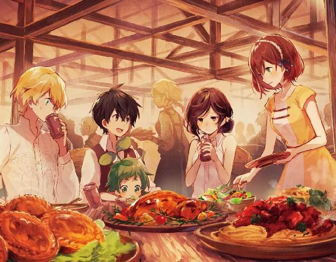
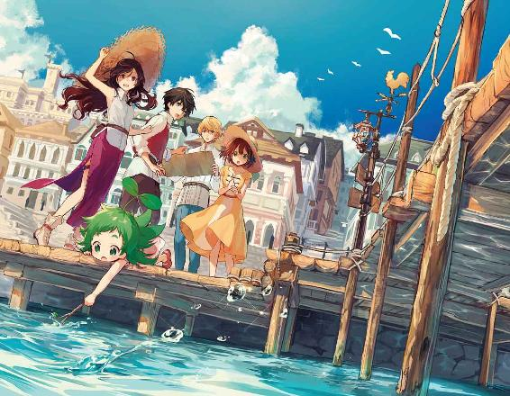
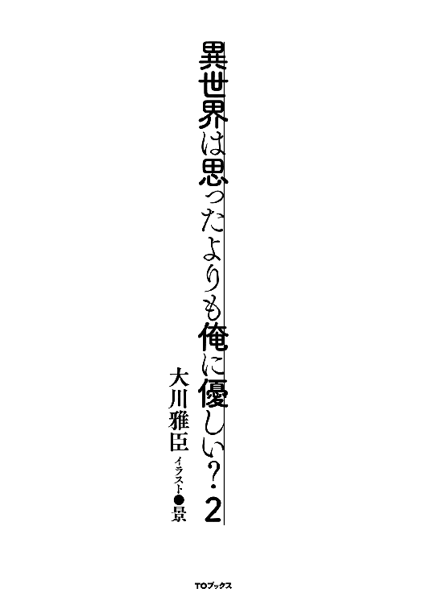
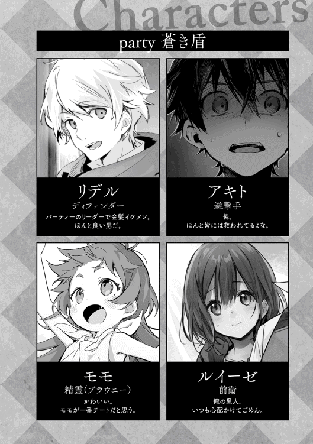
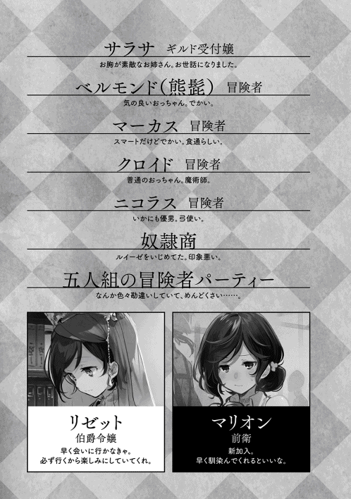
リーゼロット・エルヴィス・フォン・ウェンハイム辺境伯爵令嬢──リゼットの異世界転移魔法によりこの世界に来た俺は、何かの影響によりリゼットと出会うことなく離ればなれになってしまった。
リゼットに関する唯一の手掛かりは、ここエルドリア大陸の東にあるリザナン東部都市に幽閉されているということだけだ。
俺はこの世界で出会った仲間と共に東を目指し旅立つ。しかし、その道程は簡単なものとはならず、魔人族の襲撃というかたちで幕を開けた。
なんとか魔人族の襲撃を退けトリテアの町に辿り着いた時には、既に日も落ちる頃だった。
俺たちは助け出した商人たちから食事の振る舞いを受け、戦いの中で亡くなった冒険者の為にも生き延びたことを共に喜び合う。そして十分にお腹も膨れた頃、またの再会を願って解散した。
店を出た俺たちを待っていたのは、人の溢れる賑やかな夜の町だった。
グリモアの町では、日が暮れると直ぐに人の通りが少なくなり、昼間の賑わいも静まっていたので、トリテアの町の様子に俺はしばらく呆気に取られていた。それはルイーゼも同じだったようで、無意識に俺の袖を掴んでいる様子からも驚いている事が窺えた。
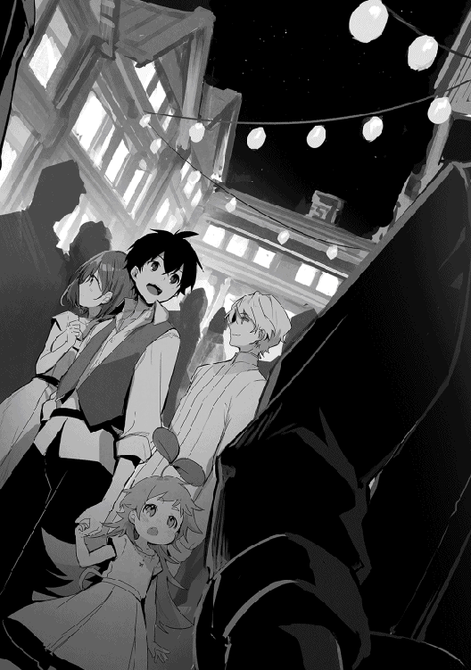
「日が落ちたのに、随分と賑やかな町だな」
「はい。夜、人がこんなに出歩いているのを見るのは初めてです」
「この町はむしろ夜の方が賑やかかも知れないね」
蝋燭や魔道灯の作り出す彩り豊かな明かりを受けて、照らし出された町の景色にモモも魅入っていた。
俺はモモの手を取り、はぐれないように気を付けて人の溢れる町へと乗り込む。通りは常に人が行き交い、立ち止まるのも難しい感じだ。
宿屋を紹介してもらっていたけど、とても辿り着ける自信がない。言われたところへ行くには細い路地を何度も入る必要があり、ついには自分の居所を見失ってしまう。まるで迷路の様な町だった。
「出来れば大通りに面して、安全性も高そうな宿をとりたかったが......」
「通りからは外れるけれど、この辺りなら治安は悪くなさそうだね」
結局、俺たちは妥協することにした。もう一度案内所に戻れたとしても、目的の宿屋を見付けられる気がしなかった。
幾つかの通りを廻って決めたのは、受付の女性が愛想の良い宿屋だ。古臭い外装の割に内装が比較的綺麗な四階建ての宿屋だが、食事は用意出来ないらしいので外食の必要がある。多少の不便はあるが、そもそも部屋の空いている宿が少ないので、ここを逃すと次が見付かるとも限らなない為、贅沢は言えない。外食と言っても通りに出れば屋台が並んでいるので、それほどの手間でもないだろう。
お値段は一泊一部屋銅貨で一二五枚。四人で利用するとはいえグリモアの町の五倍だ。物価が高いとは聞いていたが、二部屋も取っていたらすぐに資金が尽きてしまう。どちらにしても同じ宿には空き部屋はなかったけど。
ちなみに四人の内の一人はモモだ。初めは隠れてもらうことも考えたが、一緒に出歩いているのに宿にいないでは不自然だ。何より俺たちがモモをいない子として扱うのは不本意でもあった。モモはもう立派なパーティーの仲間なので、それ相応の待遇を与えるべきだ。
という訳で、四人で一部屋を借りることにした。貴族のリデルには些か馴染みづらいかもしれないが、我慢してもらう。むしろ一緒のルイーゼの方が気を遣うことが多いだろう。
幸いにして部屋は大きかったので、グリモアの町で買っておいた布で部屋の一角を覆えば、多少はプライベートな空間も作れる。ルイーゼは気にしませんと言うが、俺が気にするのだ。部屋は俺とリデル、ルイーゼとモモに分かれて使うことにした。
「それじゃ反省会を行う」
「了解」
「はい」
俺は旅に出る時、その日の出来事で問題があれば、反省会を行うことを提案していた。リデルもルイーゼも特に反対することもなく、あっさりと提案は可決されている。
リデルとは狩りの帰り道でもしていたことなので今更だが、ルイーゼは緊張しているのか、背筋を伸ばして椅子に座り、両手は太ももの上で握られていた。
「ルイーゼ。別に怒る訳じゃないから、そこまで緊張しなくても大丈夫だ」
「は、はい」
緊張した感じが抜けた気はしないが、まぁ、仕方ないか。
今回は特に反省すべき点が多かった。多いといっても課題として認識していることがそのまま問題として発生しただけで、今回の様なことを想定しておくべきということには気付いていた。だから、一度に全ては無理としても追々片付けていこうと思っていた。
ただ、その問題が想像以上に早いタイミングで発生したとなれば、話は別だ。それに死にかけた。時間が有限である以上は全てを同時に対応するのは難しいが、優先度を付けて早急に対応が必要と判断したら、旅を中断してでも課題の解決に取り組むつもりだ。何せ命が掛かっているのだから。
「まず今回の流れをまとめると、馬車での移動中に先頭の馬車がコボルトの襲撃を受けた。コボルトは俺たちにでも撃退可能な魔人族だから救援に向かう。ここまでは良い」
リデルが頷き、ルイーゼは神妙な面持ちで聞いている。
「その後、すぐにホブゴブリン一匹とゴブリン二匹の襲撃に遭う」
「アキトには魔人族の脅威レベルを判断出来ないから、戦闘継続の判断は僕にあった。そして僕の判断は迎撃だ。理由は二つ。一つ目は僕たちが逃げれば、馬車に乗っていた人たちが襲われると考えたから。二つ目は僕自身がホブゴブリンを抑えれば、迎撃も可能と判断したからだ。想定外だったのは──」
「ホブゴブリンの相手を俺がすることになった」
想定通りに俺がゴブリンを、リデルがホブゴブリンを相手にしていれば、あれほどの接戦にはならなかったと思う。ここで起きた問題は相対する魔人が想定と逆になってしまったことだ。
リデル頼みで守ることを疎かにしていたので、俺は想定が崩れた時点で動揺していた。魔人族は知能が高い。俺たちの動きを見て何かを判断したのかもしれない。
「僕の判断も甘かった」
「俺にはその判断すら出来なかった」
この後の対応には間違いはなかっただろうか。
「俺はルイーゼをリデルのサポートに回した。正確にはリデルの背後を守りつつ、リデルの守りを受ける為に。俺ではホブゴブリンからルイーゼを守りきれないと判断した。それはおそらく間違っていないと思う」
「そうだね。盾を持たないアキトが守るより僕の役目だろう」
「申し訳ありません、私がいたらないばかりに」
「ルイーゼは良くやってくれているよ、俺のことも助けてくれただろ」
実際、ルイーゼが体を張ってホブゴブリンの剣を逸らしてくれなければ、どうなっていたかわからない。
俺の言葉を聞いてか、ルイーゼは少しだけ肩から力が抜けたようだ。
ホブゴブリンとゴブリンを合流させない為に、リデルと距離をとる形でホブゴブリンの相手をしたのは間違いだろうか......間違っていない気がする。あそこで合流させていたら、リデルも持ち堪えられなかっただろう。
そうなると、ここまでは変化する戦況に合せた対応が取れたともいえる。
「残るは俺が、ホブゴブリンと真剣勝負をする必要があったのかどうかだ」
「なかったね。アキトは時間を稼ぐのがあの場では正解だよ」
リデルの言う通り、あくまでもゴブリンとの合流を阻止出来れば良かったのであって、倒す必要はなかったはずだ。
もしホブゴブリンが俺を無視して背中を見せるなら、その時に攻撃をすれば良い。背中からならいくらでも戦いようがあったはずだ。
それじゃ、なぜあの時に俺は真剣勝負を挑んでしまったか。ぶっちゃけ恐怖心に負けたんだと思う。怖くて目が離せなかった。怖くて倒してしまいたかった。
矛盾しているようだが、逃げる選択がない以上は倒すしかないと思考が視野狭窄に陥っていた。倒さなければ自分が倒されるのだからと。
「途中までの状況判断は悪くなかったと思う」
リデルもそれについては同意する。
「でもリデルの言う通り、ホブゴブリンとの戦いを始めてしまったのは良くなかった。あそこは牽制だけにすべきだった」
「そうだね。圧倒出来るだけの力の差がないのであれば、一人で戦うのはリスクが大きい。アキトなら魔法で牽制しつつ距離を取れたと思うよ。ホブゴブリンの動きは巨大熊程早くはないのだからね。アキトは魔物や魔人族についてもう少し詳しく知る必要がある。敵を知ればそれだけ戦いに余裕が出来るし、無理な戦いであれば避けることも可能だ」
そう、俺は魔物や魔人族といった、敵対する可能性のある相手に対しての情報がなかった。だから、わからない不安から怖いという気持ちも増幅されていた。
「魔物や魔人族のことはリデルに教わるとして、それ以外にも何か情報をまとめたような本とかがあればいいんだが」
「この近辺で出没する魔物や魔人族に関する情報は、冒険者ギルドで購入出来るよ」
そんな身近なところで購入出来たのか。当たり前と言えば当たり前の気がするけど、最初は物を買うという発想がなかったな。一日の利益が銅貨一〇枚という中で銅貨三，〇〇〇枚を貯める必要があったし。
「それは直ぐに手に入れるとして、他には後一人か二人程仲間が欲しいと感じたな」
「都合よく旅に付き合ってくれる人で、尚且つ信用がおける人はなかなか見付からないだろうね。そういう場合は戦闘奴隷を使うのが大半だよ」
奴隷か......普通に選択肢として出てくる世界なんだよな。ルイーゼも奴隷だけど、ほとんど形式的なことで俺は奴隷だとは思っていない。そんなに深く考える必要はないのか。
「この町には奴隷商人も多いから、アキトが必要と思うなら見ておくと良い。今度はアキトにきちんと主人を務めてもらうけれどね」
「そうなるよなぁ」
出来ればそれは勘弁願いたい。戦闘をメインにするのだから男、それもかなり年上になる。多少稼げるようになったとはいっても俺はまだ子供だ。そんな俺に使われるのは良く思わないだろう。せめて俺が成長するまでその選択肢はないと思いたい。
「アキト様、余り難しく考える必要はないかと思います。必要だから奴隷を使う、それが普通です」
奴隷と聞いて複雑な表情をする俺に、ルイーゼが気を遣う。
やっぱり普通なのか。
「あまりお勧めは出来ないけれど、傭兵を雇うという手もあるね。僕たちの場合は護衛になるのかな」
護衛か。昨日の商隊にも護衛がいたな。ゴブリン相手には遅れをとっていなかった。案外ありかもしれない。
「お勧め出来ない理由は？」
「奴隷は奴隷紋によって、ある程度行動に制限を与えることが出来るけれど、傭兵にはそれが出来ないからね。いざとなったら雇い主を囮に本人が逃げてしまうこともあると聞くよ。罰則は当然あるけれど、結局のところ死ぬよりは良いからね」
やっぱりそれがお勧め出来ない理由か。
「とりあえず、この件に関してはこの町を出るまでに考えておくよ。それと今日の戦いでわかったことなんだけど、魔人族は魔物と違って知能が高く、こちらが躱しにくい攻撃を仕掛けてくる。それに、躱したところを狙われたり、攻撃の隙を突いてきたりするから、俺たちも対人戦に慣れておいた方が良いと思う」
リデルは知識としてはわかっていることだと思うが、ルイーゼもいるし意識合わせも必要だろう。
「そこで、朝の鍛錬メニューに模擬戦を取り入れようと思う」
ここにきて魔法の練習に模擬戦と、朝の鍛錬というか午前中の鍛錬に近いくらいのボリュームになってきた。
「そうだね。魔人族の動きは人の動きに近いから練習になると思うよ。アキトとの模擬戦か。ちょっと興味あるね」
「俺はリデルの防御を抜ける感じがしないけどな。もちろん手加減はするけど、ルイーゼも一緒にな」
「わかりました」
ルイーゼは素直な子だ。もしかしたら嫌なことでも、俺に言われれば受け入れてしまうかも知れないので、その辺の気遣いは必要か。
「それじゃ、反省もしたし。問題点も明確にした。足りないこともやっておくことも決めた。今日はお開きにしよう」
「了解」
「はい」
明日はリデルの装備を作成しに鍛冶屋に行く。作成にはしばらく掛かるので、その間にこの辺りの狩り場について情報を集めよう。
冒険者ギルドに行って魔物や魔人族の情報を手に入れることも必要だ。鍛錬もするし、道中の傭兵なり護衛も考えないといけない。模擬戦も頭を使うことをメインにやるから作戦を立てないと。
あれ、なんかやることが多くて考えるだけで目が回ってきたぞ。だんだんとリゼットのことを考える時間が減っているな。毎日が忙しいこともあるけど、言葉すら交わせない時間は少しずつリゼットの記憶を奪っていくようで、言いようのない不安に胸が苦しくなった。
翌朝。俺たちは夜の艶やかな雰囲気とは違った、活気のある朝の町を宿屋の窓から眺めていた。時間でいえばまだ五時を回ったくらいだが、町の商人たちは薄暗い中で既に活動を始めていた。日が昇れば動き出す冒険者に合わせてのことだろう。
ここ森林都市トリテアは、三方を魔巣のあるカシュオンの森に囲まれた特異性から、エルドリア大陸随一の魔物の狩場として名を馳せていた。ＣランクさらにはＢランク相当の魔物が徘徊する領域まで、日帰りで行ける拠点はそう多くない。獲物の運搬に時間を取られないのは、高ランク冒険者にとって実に魅力ある環境と言えるだろう。
そんな場所に作られた町なだけあって、当然危険も多い。魔巣から出てくる魔物や逃げる冒険者を追って出てくる魔物、そして魔人族による被害が避けらない。
その対策として四方を高さ三メートル、厚さ三〇センチの堅固な石壁で囲み、唯一の門と所々に建つ櫓には常に警備兵が常駐し警戒を続けている。場合によっては冒険者や商隊の救援活動も行っていた。
それだけのリスクに備える必要があっても、この町は商売をする者からみれば魅力的だった。
普通は高ランクの魔物の素材は高価なので、直ぐに売買出来るとは限らない。だがこの町に限っては、即決と言える程簡単に売買が出来た。冒険者は直ぐに現金を手にすることが出来る利便性の高さに釣られて、この町に居座る訳だ。
そして商人は手離れの良い冒険者が相手なので、相場も安く安定し、リスクをとっても十分に利益となる。
他にも、北の商業都市カナンとの交易も盛んで、利益にめざとい商業ギルドが動いて整備した道は、一部の山間部を除いて平坦で快適な物だった。ここトリテアで取れた素材は、その殆どがエルドリア王国一の商業都市カナンを通して、地方に送られると言って良いだろう。
そして、そんなお金の流れを支えるのもこの町の政策だ。町は高額な素材を持ち込む冒険者に対して、待遇を良くすることで囲い込みを行い、結果として更なる税収を得た。他では珍しいこの町の特徴であり、その待遇の良さに冒険者が集まってくるのもこの町の特徴だ。
一言で言えば稼ぎやすく活気があり、お金の回る良い町というのが俺の印象だ。
当然、お金が回れば商人も増え、物流も活性化して仕事も労働者も増える。エルドリア大陸で求人倍率が二倍を超えるのはここトリテアの町と、ルーフェン古代都市跡地があるドライデンだけらしい。王都でさえ一倍に満たない。
そう言う事情もあり、トリテアの町は人口も増えに増え、すでに町というよりは一つの都市になっていた。故に森に囲まれたこの町を森林都市トリテアとも呼ぶようだ。現在この町にはおよそ五万人が住むらしい。
ただ、町自体は狭く雑多な印象を受ける。唯でさえ狭い通りには商店以外にも露店が並び、食料だけでなく装備や魔法具、何に使うのか見当も付かない怪しげな素材が売られている。
グリモアの町では平屋かせいぜい二階建ての建物だけだったが、トリテアの町ではほとんどの建物が三階建て以上になっているのも特徴だ。横に広がることが難しい為に、縦に伸びているのだろう。
それでも地下という考えは一般的ではないようだ。排水を考えたら、地下は簡単には使えないのかもしれない。
建物はほとんどが木造建築になる。回りは森なので木材ならいくらでもある。今も森を切り開いて町の拡張を続けており、日々街は大きくなっていた。
常に危険が伴う町の外の開拓には犯罪奴隷が当てがわれるようで、雰囲気の悪い人らを連れた警備兵の姿も見えた。それほど厳重でもないのは奴隷紋という戒めがあるからだろう。
俺とルイーゼは町を眺めながら、リデルの話してくれるこの町の状況を感心して聞いていたが、それ以上にリデルの知識量に感心していた。
「それにしても、よくこんなところに町を作ったな」
「グリモアとは違って凄い活気ですね」
俺はルイーゼの言葉に頷く。
グリモアの町はどちらかと言えば長閑な田舎町だった。町の周りも牧歌的な風景と言った感じで、時間がとてもゆったりと流れる過ごしやすい町だ。それに比べると、歴史すら感じさせる太い幹を持つ木々に囲まれたこの町は、今まさに生きていると言った躍動感が伝わってくる。
そして極めつけがあの大樹だ。
「この町のどこからでも見えるあの木が、樹齢七，〇〇〇年を越えると言われている霊樹だね。古代遺跡から見付かる書物によると、前文明期でも今と同じくらいの大きさを誇っていたらしいよ」
「凄いとしか言いようがないな......」
「本当にそうですね」
モモも見上げた勢いのまま後ろにひっくり返りそうになり、俺に背を預けてくる。
その大きさは傘の部分が町の四分の一を覆いかねない程で、東の平地からこの町を見るならば、地平線を覆う森の中に、ただ一本だけそびえ立つ様であろう。
しばらくすると、これから森に入る人に向けて携帯食の販売をする食料店、荷物持ちと呼ばれる職業の声掛け、傭兵の斡旋と言った様子が窺える。近くの鍛冶屋からは鉄を打つ音が聞こえ、その軒先では打ち終わったばかりの武器が売られている。
荷物持ちとはその呼び名の通り、森に入る冒険者が狩った獲物を運ぶ職業の人らしい。狩りには直接参加せず、身を守る程度の技量があれば出来るので、冒険者を何かしらの理由で諦めた人が就くことの多い仕事のようだ。
魔物や魔人に関する知識だけでなく、薬草や治療といった知識を持つことが多く、またそうした知識を持っている荷物持ちは下手な冒険者より稼げる。特に力も知識もあり魔法鞄を持っている荷物持ちであれば、一級の冒険者の予約で一杯になるとか。
それも当然だろう。俺も戦いの知識を持つリデルや魔物を運んでくれるモモがいなければ、こんなにスムーズに旅立ちは出来なかった。ルイーゼもずぼらな俺を見かねてか、なにかと身の回りの世話をしてくれるし、モモの面倒も良く見てくれた。それらのことを自分で全て行おうとしたら、きっと何処かで躓いていた。
俺は改めてみんなに助けられている思った。
「俺も出来ることをするか」
俺は一人で宿を出て、鍛錬の出来そうな場所を探す。門の外は直ぐに魔物の住むカシュオンの森という特異性から、門の外で鍛錬をするのは良くないだろう。だが、町の中は空地と言えるような広場がなく、結局のところ宿の裏手にある猫の額程──とは言っても、一〇メートル四方はある庭先で鍛錬をすることにした。
森に囲まれているせいか、周りの家の軒先や庭では多くの鳥が羽を休め、朝を知らせる鳴き声を奏でている。俺が近付いても逃げようとはしない。餌付けされているのだろうか、随分と懐いている感じだ。
俺はストレッチをしながら、昨日のホブゴブリン戦を踏まえて自分の現在の問題点を考えていた。
まずは力不足。一五歳ということもあるだろうけど、思った程、筋力が付いていない。いや、付いてはいるが足りていない。身も軽すぎる。毎日が鍛錬の日々で、体も引き締まっている為に脂肪が少なく、結果的に体重も少ない。
いくら食べても太らないというと一部の人に怒られそうだが、それでも事実として食べても太らない。だから力で押し負けてしまい、同じだけ鍛錬した体格の良い男には勝てないだろう。
リデルは俺より一回り大きい。力が同じなら質量で押し負ける。勝負の結果など目に見えていた。技量でカバーと言ってもフィジカルで大きく劣っていては話にならない。なぜならその技量を生かせないのだから。
二つ目は魔力総量の不足。リゼットから教わった話と自分の経験から、魔力も筋力と同じ様に使い続けることで、その量が増えていく。でもリデルとルイーゼの魔力総量が明らかに増えているのに対して、俺はその半分も増えていないと感じた。
リデルは敵愾向上の使用回数と継続時間が上がっている。ルイーゼは精霊魔法や古代魔法こそ使えないが、身体強化の鍛錬を継続する時間が大幅に伸びていた。
最後に攻撃力不足。力不足であり、魔力総量が少ない為に魔法によるダメージも余り多く望めない。そもそも魔法に至ってはまともに使えない。
今使える魔法は、ただ魔力を放出しているだけの魔弾と身体強化だけだ。もちろん、そのどちらも今の俺に欠かせない力ではある。でも、もし魔弾をきちんと精霊魔法として具現化出来れば、事象変化に伴う威力、つまり火の魔法を具現化すれば焼き尽くすとか爆発させるとか、風の魔法を具現化すれば真空を作り出す風の刃とか暴風によって物を吹き飛ばす、と言ったことが出来るようになる──と思う。でも、今の様にただ魔力を放出するだけでは、そういった威力は見込めない。
この三点については何かしらの打開策を考えないといけない。
力不足に関しては鍛錬中の身体強化で一時的にはなんとかなりそうだけど、身体強化は魔力消費効率が悪い。魔力総量が小さいことから有効打にはならないかもしれない。これは逆にいうと、二つ目の魔力総量が少ないという問題を解決すれば、同時に解決する問題とも考えられる。
もう一つの方法として、魔力総量を増やすかわりに、魔力制御の効率を上げる方法がある。魔力制御の効率が上手くなれば無駄が減り、結果として魔力の使用量が減る。必要な時に必要なだけの威力で魔法を使うことも大切だ。オーバーキルは無駄でしかない。
魔力量の増量と魔力制御力の向上。どちらかをではなく、どちらもやらないといけないのだろう。魔力の総量を増やす為には、寝る前に魔力を限界まで使い切る。魔力制御の効率を上げるには、今一度原点に戻って魔力の流れを感じ取り、無駄がないか探っていくことにしよう。
攻撃力の不足は単純に力だけではなく、技術と知識も不足している。今までそれほど知能の高い動物や魔物を狩ったことがなかった。だから考えて行動する敵に対しての経験が全くない。これは単純に数をこなすしかないが、その時、きちんと敵の攻撃の意味を考えよう。
ただ、これを実戦の中でやるのは危険が伴う。実戦ではまず生き残ることが最優先事項だ。となると、練習という形で誰かと模擬戦をするのが良い。
考えがある程度纏まったところで、二人が降りてきた。モモはまだ眠っているのだろう。俺が出る時もまだ、気持ち良さそうに布団に包まっていた。
「予定通り、今日の鍛錬から模擬戦を導入する。限りなく実戦だと思ってやること。気を抜くと怪我くらいはすると思うから気をつけてくれ」
「了解」
「はい」
俺は旅立ちの時から使用しているごく平凡な片手剣と、革の上着、革のグローブ、そして革のブーツ姿だ。これは初めて買った自分の装備になる。革も体に馴染んできて、着心地が良くなっていた。
上着の背中部分には修復の痕が有り、ちょっと格好は悪いが仕方がない。前に凶牛の攻撃を躱しきれず攻撃を受けた時に裂けていた。きちんと補強してもらったので見た目以外に問題はないのだが、その見た目が問題でもある。
リデルは愛用の片手剣と、巨大熊との戦いで失った盾の代わりに、俺が買った鉄製の盾を装備している。防具の方は同じ革でも、鎧の形をし、しっかりと防御の役割を果たしそうな物だ。
ルイーゼは木の先を鉄で補強したメイス、革で補強した木製の盾、布のローブに革製のベストは俺と同じだ。どれも俺が買い与えた物で、高価ではないがこれでも転がり回ったりすることの多い俺たちには役に立つ。
攻撃で致命傷を与えないように、剣の刃とメイスには布を巻いている。余程のことがなければ打撲程度で済むだろう。
ルイーゼに対しては、模擬戦レベルまでは出来ないと思っている。今は攻撃を受ける練習が出来れば十分だ。
まずは俺とリデルが適当な距離を開けて対峙し、模擬戦の開始だ。
「それじゃいくよ。初めは準備運動がてらに様子を見ながらいく」
「どうぞ」
リデルはそう言うと、腰を落として盾を前に、剣を中段後方に引く構えをとる。最も基本となる型のようで、それだけに隙らしい隙は窺えない。
「こうして前に立つと頼もしい限りだな」
「光栄だね」
リデルは先手に拘らない。動くなら俺からだろう。俺はリデルの左側にステップを踏んで回り込む。右側には盾がある為、有効打を取りにくいと考えた。
間合いが詰まったところでリデルの持つ剣をはじき飛ばす様に、左に引いた剣をバックハンドから横に払う。それにきちんと反応したリデルは、体の向きを変え、盾で俺の攻撃を受け止めた。
俺の攻撃は盾に弾かれたが、そのまま左下段に構え直し、身を低くすると同時に今度はリデルの足を掬う様に剣を振る。左から右へ高さを変えての連続攻撃だ。
リデルは少し下がって、その攻撃を躱すと同時に踏み込んで、空振りして空いた俺の背中に剣を振り下ろしてくる。
俺は低い姿勢のまま転がってリデルの攻撃を躱し、その勢いで立ち上がると軽く息を一つ吐き、体の緊張を抜く。
「全力でいく！」
「了解！」
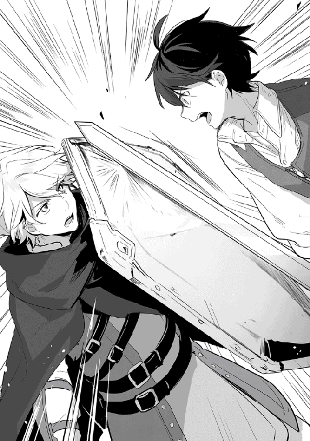
俺は先程とは逆にリデルの右側に踏み込み、盾に向かって剣を打ち付ける。防がれたところで身体強化を発動し、力押しで盾をかち上げる。
「!?」
押し負けたリデルは盾ごと左腕を挙げ、胴体に大きな隙を晒していた。盾を手放さなかっただけでも流石だ。俺はさらに一歩踏み込み、振り上げた剣を慣性のままに左中段に引き絞ると、そこから隙の出来た胴を薙ぐ様に剣を振る。
止めるか？ いや!!
視界にリデルの剣が割り込み、しっかりと受け止めていた。俺は再び身体強化を発動し、このまま押し切り胴に寸止めする──つもりだったが、その前に俺の剣はリデルの剣に押し返され、逆に胴を晒してしまう。
押し負けた!?
いくらバックハンドだからって......というか、これってリデルが身体強化を使ったのか？
鈍い音と共に体を打つ衝撃を感じる。リデルの盾がバランスを崩した俺を打ち、その衝撃でいったん間合いが開く。最初の有効打はリデルだった。
「............」
んっ？
リデルが何かを呟いたかと思うと淡い青色の光が現れ、リデルを中心に周囲一メートル位を覆う。
魔法か？ 何の魔法だ!?
と言うか、リデルって攻撃面でも強いよな。俺は気を引き締め直す。やはり人は動物や魔物とは根本が異なる。特にリデルは俺の戦い方を良く知っているので、きちんと守ってくる。持てる手札を全て使っても勝てるかどうか。
俺は左手に集めた魔力を魔弾として撃ち出す。魔弾はリデルを覆う光にぶつかるとシャボン玉が弾ける様に砕け散り、同時に魔弾も打ち消された。
防御魔法なのか!?
いずれにしても防御魔法は消えた様に見える。俺は身体強化を部位強化ではなく全身強化で発動し、一気に間合いを詰めて右中段から盾を打ち抜き、今度は盾を左に弾き飛ばす。
その勢いで背中を見せたリデルに、俺は弱めの魔弾を──!?
リデルは俺の剣を盾で受けると、そのまま受け流す様に右に回転し、裏拳の要領で俺がいると思われるところに剣を振ってくる。
俺は顔面に迫ってくる剣に慌てるが、準備中の魔弾を剣に撃ち込んで対処する。ホブゴブリン相手に使ったのと同じ手だ。鉄を弾く音と共にリデルの剣が落ちる。
「っ!?」
リデルが右手を押さえる。弱めに撃つつもりが、とっさのことで普通に魔弾を撃ち出してしまった。
「リデル！」
「いや、大丈夫。痺れているだけだから」
良かった。今リデルに怪我をさせる訳にはいかない。ルイーゼの回復魔法があると言っても、奇跡はある意味気まぐれだ。期待しない方が良い。
《それは誤解なのに》
ん？ ......空耳か。
まずは一戦。軽くのつもりが殆ど本気になっていた。それはそれで反省するとして、今の模擬戦の内容を覚えている内にディスカッションだ。
いつの間にか起きて模擬戦を観戦していたモモを膝の上に抱えて座り、リデルとルイーゼも座る。ルイーゼは所謂女の子座りだ。あざとさのないところが実に可愛い。俺が感心して見ていると、ルイーゼが首を傾げて答えるが、俺は何事もなかったかのように前を向いた。
「たった一戦、時間にして二分くらいの模擬戦だったけど、俺は三回驚いたよ」
「僕も三回驚いたよ」
ほほう、俺もなかなか負けていなかったようだ。
「まず一つ目はリデルが身体強化を使っていたこと。二つ目は防御魔法と思われるものを使っていたこと。三つ目は攻防に隙がないこと」
「僕の場合は、一つ目がアキトの身体強化を発動する速度が素晴らしく速いこと。二つ目がその身体強化を全身に使えること。三つ目が一見防御が弱く見えるのに、隙を突いた攻撃にもきちんと対処してくること」
全身強化は練習中の魔法なので、実戦で使ったことはない。言わば今がお披露目だった。部位強化に比べると激しく消耗するので、今の時点では実戦で使えなかった。
「リデルの身体強化は実戦レベルになっているな。後から使用しても押し返されていた」
「あれは後から使ったのではなく、単に発動まで時間が掛かっただけだよ。押し返せたのも半分は腕力のおかげだね。実戦で使うにしても、今のところは練習がてら余裕がある時だけかな」
「俺の経験則だけど、使えば使う程自然に使えるようになる魔法だと思う。それから、あの防御魔法の効果は？」
「防御魔法は残念ながら実戦どころか模擬戦でも使えるレベルじゃないみたいだ。あの魔弾も本気で撃った訳じゃないよね。今のところ魔力制御が悪くて、人が殴っても壊れる程度かな。それでも実戦で使う時のタイミングとかを覚える為に使ってみたけれど、結果はあの通りだよ」
なるほど。確かに牽制で撃った魔弾でさくっと壊れていたからな。
「アキトの無詠唱で繰り出す魔弾は、相手にする立場になると脅威だね。常にそれを警戒して動く必要があるから、どうしても攻撃の手が遅れるよ。全ての攻撃に身体強化を使っていないのも良い。それ自体がフェイントになっている」
「今の俺の魔力制御力じゃ魔弾と身体強化を同時には使えないんだ。あと、身体強化がその場にある魔力で作用するのに比べて、魔弾は魔力を集める必要があるから連続では撃てない。とっさに撃つにもその前にある程度準備しておく必要があるな」
今の模擬戦でも魔弾を撃とうと思っていたところだったから防御に使えたけど、そうでなければ躱し切れたかどうか。
「それと、フェイントとしてやっている訳じゃなくて、身体強化を継続的に使うのは単に魔力消費量が多くて厳しい。フェイントになっているのは良い誤算かな」
「僕も練習中だから何とも言えないけれど、身体強化の魔力消費効力は良い方だと感じるのは、アキトの印象と違うね」
あれ、リデルはあれが効率良いと感じるのか？
「それはあれかな、魔力総量に対して使用量が小さいとか」
「僕が感じているのは他の魔法、例えば敵愾向上とか魔法障壁に比べてだね。一応この二つの魔法も、魔力消費量は少ない方だけれど」
リデルは俺よりも早く魔法の訓練をしている。魔力総量が俺より多いと思うし、ここ最近の魔力総量の伸びを見ても随分増えたと思う。
俺も頑張ってはいるけど、最初に比べて上がる量がかなり減っている気がする。もしかして俺の魔力総量はもう頭打ちなのだろうか。いくら鍛練を重ねたところで肉体という器がある以上は限界があるだろう。そこに個人差があっても不思議じゃない。
「そうなると、俺の魔力総量が少ないということになるな。魔力を吸収する様な魔法とかないのかな」
「アキト様、魔石から魔力を取り出せると聞いたことがあります」
「残念ながら、それが出来るのは魔法具や魔道具だけだね。人が直接魔石から魔力を取り出して吸収、あるいは魔法として具現化するという話は聞いたことがないね」
「失礼しました......」
ルイーゼが肩を落とす。ちょっと可哀想だ。
「いや、思い付くことがあったらどんどん言って欲しい。今のことも俺は知らなかったから、助かる」
「はい」
「それにしても、魔力を出せるのに吸収は出来ないのか」
「そもそも、魔法は魔力を具現化して事象としているのであって、魔力を出力している訳ではないよ。だからアキトの魔弾は例外に当たる。実際のところ殆ど事例がないから、噂が広まれば魔法大学とかから声が掛かるかもね」
俺もいよいよ大学デビューか。というか、あるのか魔法大学。流石に学校くらいはあるか。学校があるなら、学校で精霊魔法を習えないだろうか。だけど──
「それは実験動物的な意味合いが大きそうで、御免被りたいな」
「ちなみに魔法を失敗して魔力が失われるのは霧散しているからで、出力とはちょっと違うんじゃないかな。クロイドさんの話だと、その霧散する魔力を制御することで力となっているという話だったけれどね」
霧散する魔法を制御するくらいなら、具現化する方が楽だと言っていたな。旅が落ち着いたら精霊魔法が使える人を探して教えてもらいたい。
「本当に話が来たら断るのも難しいと思うから、嫌なら隠し通すことだね」
俺はそもそもこの世界の人間じゃない。目立ったり、あれこれ調べられたりするのは避けたいところだ。
「身体強化は誤魔化しようがあるにしても、魔弾は誤魔化しにくいな。あ、でも。飛び道具としての使い方を控えれば遠目には気が付かないと思う」
「アキトの場合、無詠唱だしゼロ距離で撃てば魔法だとは気付かれないかもね。勘の良い人には気付かれる可能性もあるけれど。それも側で意識して見ていればってくらいかな」
過去に無意識で使っていたけど、熊髭達や商隊の護衛あたりには見られているんだよな。今後はもう少し意識していこう。どんなに意識しても命以上に大切ではないとも思うが。
「なんにせよ、たった一回の模擬戦でこれだけ色々とわかるなら、もっと早めにやっておけば良かったよ」
「そうだね。毎日の鍛錬に入れるのは良いことだね」
今までは基礎的な練習をしていたから模擬戦を入れる余裕がなかったとも言えるけど、これからは生きていく為に必要なことはどんどん取り入れていこう。
「それじゃ次はルイーゼだ」
「はい」
ルイーゼは俺とリデルの模擬戦を見てから、随分緊張している様だ。メイスを持つ手が強ばって青白くなっていた。
「ルイーゼとの模擬戦は意図的にスピードを落としてやるから、ルイーゼは攻撃をしないで全部盾で防ぐか躱すように。子供のお遊戯みたいに見えるけど、怪我をしない為に大切なことだから」
「はい、アキト様」
俺はルイーゼとの模擬戦を始める。まずは子供でも躱せる様なスピードから始め、そこから徐々にスピードを上げて、ルイーゼの防御がギリギリ間に合うところを見定める。この状態で二分程単調な攻撃を繰り返す。
それに慣れて来たところで、今度は上下に攻撃を振り分ける。間に合わなそうならばスピードを落とし、再び慣れて来たらフェイントも織り交ぜる。
リデルとの戦いのスピードに比べれば半分以下だけど、ルイーゼの防御が間に合うギリギリのタイミングでひたすら続ける。実際の魔物との戦闘は今のところ長くて一〇分だ。まずはルイーゼが一〇分間自分の身を守り切れることを目的とする。
スピードが遅いと言っても連続で繰り返している。三分も過ぎたところでルイーゼの息が上がり始め、今までのペースでは防御しきれなくなる。俺は攻撃のスピードを落とし、常にルイーゼの防御がギリギリのタイミングで続けた。
五分が過ぎたところでルイーゼの体力が限界に達した。腕が上がらず、立っているのも厳しい様子に、少し心が痛む。
「ここまでだ」
「はぁ......はぁ......はぁ、あ、ありがとうございました」
「モモ、水を頼む。水分をしっかりとって休んでくれ」
モモは水筒とコップを取り出し、水を注いでルイーゼに差し出す。
「ルイーゼは、今のを一〇分続けられるまで同じメニューで行く」
「は、はい」
女の子には辛いかもしれない。もし、ルイーゼが辛ければ冒険者ではなく、普通の女の子として自立出来るまで面倒を見ても良いと思っている。でも、冒険者として付いて来るのであれば必要なことだと、俺も割り切らなければいけない。
リデルは俺のルイーゼへの対応については何も口を挟まない。ルイーゼの主人がリデルなのは最初の約束通り形式的なものと弁えている様だ。ただ、俺としては問題があったら口を挟んでもらって構わないのだが。
その後は私の番だとばかりに小枝を構えるモモの相手をして、鍛錬を終了した。
トリテアの町へ来た第一の目的は、リデルの装備を新調することだった。俺もだがリデルも成長期の為、防具が既に合わなくなっていた。だから長旅を前に作り直す予定だ。
この町は魔物の狩り場としてエルドリア大陸最大規模なだけあり、多くの冒険者を相手に装備屋や鍛冶屋、そして流れの商人が集まっている。装備に限って言えば、この町で扱われる物量も大陸最大規模と言えるだろう。
俺もホブゴブリンとの戦いではとにかく攻撃力不足が目立った。愛用しているのは初めて買った鉄の剣だが、この二週間で既に大分痛んでいる。ホブゴブリンの強力な攻撃を受けたこともあり、全体的に歪みも出ていた。新調は出来ないまでも、打ち直しで刃毀れを直すくらいはしておきたい。
幸いにして、ホブゴブリンから取った魔魂が良い値段で買い取ってもらえたので、路銀の方も随分と潤沢だ。安く良い物があれば武器を買い直しても良い。
生活費や嗜好品の値段は高くても、装備品が安いのがこの町の特徴だ。冒険者優遇の為に税金が安く抑えられているからで、俺たちも早速その恩恵を受ける。
「.........」
銀貨一，二〇〇枚......庶民的な生活なら六年は続けられる金額だ。ルイーゼも初めて見る金額の単位に目が回っていた。そしてモモも、その価値がわかるのか腕を組んで唸り顔だ......と思ったら俺の真似をしているだけだった。子は親を見て育つと言うし、あまり変な顔を見せるのはモモの教育に良くないな。
そんな驚きの価格が、目の前にあるミスリル製の剣の値段になる。ミスリル鉱で出来た剣は魔人族が纏っている魔闘気を中和し、防御力を下げる効果があるらしい。それが魔力で変異した魔剣となると、その切れ味は鉄をも断つとか。
魔闘気とは一種の魔力による全身防具の様なもので、普通の剣では魔闘気を破ってダメージを与えるのが難しい。ホブコブリンにダメージを与え難かったのは、防具だけのせいじゃない。
上位魔人になれば魔闘気の防御力も上がり、ミスリル製の武器でさえ傷を負わせることが出来ず、ミスリル製の魔剣か同程度の武器が必要だとか。
「それにしても高いな......」
「ミスリル鉱はエルドリア王国の主要産出物だから、これでも他国に比べると安いはずだけれどね」
「その剣士の言う通り、うちは安いんじゃよ。上から安く卸すように言われている上に、自作だからな」
「おじさんは鍛冶屋なんだ」
「ギルムだ。おじさんとか言う奴にはお金を積まれても売らん」
中肉中背で白髪が交じり始めた初老のおじさんは、おじさんと呼ばれるのがお気に召さなかったらしい。無造作に伸ばした髪と立派に蓄えられた髭、身長の割にがっしりとした体躯を持ち、二の腕でさえ俺の太もも程の太さだ。その容姿は、俺の知っている知識の中で言えばドワーフにあたる。
「もしかしてドワーフか？」
「いかにも。ドワーフ族は初めて見るか」
「あぁ、初めてだ。なんか想像通りだ。いかにもドワーフって感じで、なんか感激した。俺はアキト、それにリデルにルイーゼとモモだ。よろしく」
ギルムは満更でもなさそうだ。
「ふん。お前さんたちは見掛けによらず、昨日は大活躍だったらしいの」
「知っているのか？」
「あの馬車の中にワシの甥が乗っておったからの。珍しい黒髪をした人間の子供がホブゴブリンを倒したと言っていたが、お前さんじゃったか」
そう言えば、まだ自分以外に黒髪の人を見たことがなかったな。
「あれは危なかった。次、一対一になる様ならさっさと逃げるよ」
「長生きするにはそういった賢さが必要じゃ。特に魔人族にはきちんとした装備で挑まないと命がいくつあっても足りん」
それは十分に感じた。ただ強いだけでなく、きちんとこちらの戦い方を把握して対応してくるし、チームとして連携も取ってくる。一度は勝てたからと言って、次も勝てるとは言い切れない。
「この辺で狩りをするとしたら魔人族が中心になるのか」
魔人族が多いなら、拠点を変えた方が良いかもしれない。
「いや、そんなことはないはずだよ。昨日は例外と思って良い」
「あぁ、例外じゃろう。ここ数年で街道沿いまで魔人族が出たことなど数回じゃ。この辺の森にしても、二日程奥まで潜らなければ出会うことはないじゃろう」
「なら、魔人族を中心に考えて装備を揃えなくても良いか」
「僕らが心配するレベルの相手なら、取り敢えずは通常装備で問題ないはずだね」
この辺で魔人族が出てくるようじゃ狩りにならないだろうし、昨日はたまたま逃げ出した冒険者を追って出てきたって感じなのか。
「それじゃまずはリデルの装備からな」
俺はリデルに、革鎧をベースに鎖帷子で補強を施した全身防具を手渡す。
「えっ？」
リデルが呆気に取られているが、こういうのは勢いで畳み掛けないと値段を見て正気に戻ってしまう。
「リデルが前衛として耐えて、俺が遊撃。これが今の戦闘スタイルだろ。まずはリデルの装備が最重要課題だ」
総額で銀貨一五〇枚。この為にパーティー金庫案を出したと言ってもいい。ルイーゼはパーティー金庫の意味がわかっていたらしい。後ろで俯いて笑いを堪えている。
「いや、でも──」
「それはリデルに丁度合うじゃろう。森に入るならそれくらい着こなしてみるがいい」
「リデルが健在なら、俺は逃げ回っていれば良いんだからこれでいいさ。俺は武器を打ち直してもらうよ」
格好は付けたが、思ったよりリデルの防具が高かったので、俺の武器を新調するのは後回しだ。
「ほう、魔力は弱いが魔剣か」
ん、魔剣？
「ホブゴブリンを仕留めるにはちと物足りないの。よくぞこれで倒したものだ。大分傷んでおるが、駆け出しのお前さんにはこれ以上の剣を買うのも難しかろう。少し値は張るが、銀貨一二枚で直してやる」
銀貨三〇枚の剣に銀貨一二枚の打ち直し料......とは言え、背に腹は代えられない。いや、重要なのはそこじゃない。
「これは普通の鉄──」
「いや、魔剣だよ。忘れたのかいアキト」
リデルが俺の言葉を遮る。その先を言わせたくないとわかったが、理由が不明だ。まぁ、それは後で確認するとしよう。
「それじゃ銀貨一二枚で頼む」
俺は合わせて銀貨一六二枚を支払う。
「防具は大体サイズが合っていると思うが、ぴったり合わせるなら直しに二日程掛かるな」
ぴったり合わせてしまっても、成長期だからまた直ぐに調整が必要になる。でも、合わなくなったら、その都度直した方が身を守る物なのだからいいのか？
「今のサイズに合わせ直して欲しい」
リデルはぴったりを選んだようだ。直す手間とお金を惜しむより、ベストで戦える方を選ぶか。なんだかリデルらしいな。
「それじゃ鎧と剣は明後日の夕刻までに仕上げておこう。アキトは剣がなければ狩りも出来まい。魔剣じゃない汎用品じゃが、これを使うと良い。その辺の魔物を狩るには不足ないだろう」
そう言ってギルムが一振りの剣を差し出した。俺はそれをありがたく受け取る。今までと同じ鉄製の剣なので、直ぐに実戦に使えそうだ。
「ありがとう、助かるよギルム」
「折ったりしたら預かった剣は返さんぞ」
正直本当に助かる。弓と魔弾だけではちょっと心許ない。
リデルが鎧の調整をしている間、俺は先程リデルが止めた魔剣のことを考えていた。初めにリデルから借りていた剣。あれも俺は気付いていなかったが魔剣だった。今回、俺が買ったのはただの鉄製の剣だと思ったが、これも魔剣だと言う。
前に聞いた話では、魔力を帯びた鉱石──魔鉱石を使っただけの魔剣であれば、魔巣の浅瀬でもとれる為、珍しくもないらしい。当然魔力も弱い為、出来上がった魔剣もその効果は殆どないらしいが。
ちなみに効果とは、魔力を浴びて鉱石が変異し強度が上がることを指している。強度が上がれば丈夫になり、刃毀れがしにくく切れ味も落ちない為、安定した攻撃力を維持出来る訳だ。
グリモアの町で買ったこの剣の素材が、どの辺で採掘された物かわからないが、そこには魔鉱石が豊富にあるんじゃないだろうか。
もしかして商売にならないか......あれ、でも作った鍛冶屋や売っている装備屋が気付かないとかあるのか。
そんなことを思案していると、リデルが戻ってきた。
防具の採寸が終わった後は冒険者ギルドに向かう。その途中で、俺は魔剣のことについてリデルに聞いていた。
「僕はあの剣、最初は普通の剣だったと思うんだ」
「それは俺もそう思っていたけど」
「アキトが使っていることで魔剣になったんじゃないかと推測しているんだよね」
「はぁ？」
俺が使えば魔剣になる。それってどんなチート能力だ。この世界に来てチートと思っていた魔力制御能力は、魔力を突発的に得たことで魔力に対する認識力が高かったのが大きな要因だ。
熟練の魔術師と比べて、俺の魔力制御がどの程度なのか比較は出来ないけど、チートという程ではないと考えている。それほどのことなら熊髭たちも、あの程度の反応では済まなかっただろう。そして、もしチートと言える程の高い性能なら、二度も狼に殺されかけない......よな。
使える魔法も、魔力を具現化出来なくてただ放出しているだけの魔弾と、同じく具現化出来ないから内部燃焼させている身体強化のみ。これもリデルだって使えたし、ルイーゼにも使えそうだ。
その俺に初めてのチートらしき能力じゃないか。魔剣生成能力とか、ちょっと中二病に片足を突っ込んだ気がするけど。
「聞かない話でもないのだけれど──」
だと思いました。またしても固有の能力ではなかったようだ。早とちりしてガッカリするとか、悲しいじゃないか。いや、生活する上で役に立つなら十分だな。
固有の能力とは、どんなに詳しく教わったところで本人にしか使えない生まれもった能力だ。ルイーゼの天恵は固有の能力にあたる。
「魔剣は、魔鉱石を原材料とした先天的な魔剣と、剣として作られた後に魔力を帯びて魔剣となった後天的な魔剣の二種類があるんだ」
「今回、俺が使っていたのが後天的な魔剣だった可能性が高いってことか」
「重要なのはどうして魔剣になったのかってことだね」
魔力を受ければ変異して魔剣になる。カシュオンの森は魔力の源である魔巣が存在し、森の外に比べれば魔力が濃密だ。その影響を受けたのだろうか。人体には影響がないのかな。いや、ないとも限らない。魔力を受けて変異したのが魔物なのだから。
でも、魔力を受けて魔剣になるのなら、俺の剣だけが魔剣になる訳じゃないな。
「リデルの剣が魔剣になっているならともかく、そうでないなら原因がわからないな」
カシュオンの森の影響だというなら、殆ど行動を共にしていたリデルの剣も魔剣になっていて良いはずだ。魔剣になっていないとしたら、剣の素材とかに原因があるのだろうか。
「だから僕はその原因がアキトだと思っているんだ」
そう、剣の素材に原因がないとしたら残るは俺だ──えっ、俺!?
自分でも多少はその可能性を考えてはいたけど、さっきチート能力を早とちりしてガッカリしたばかりだからな。
「アキトの魔力の影響を受け続けたことで、ただの鉄が魔力を受けて変異したんじゃないかと考えている」
「そんなことをした覚えはないな」
「アキトが鍛錬で身体強化を教えてくれる時、魔力を感じさせる為に魔力を流してくれるよね。それを気付かないうちに剣に対して行っていたとは考えられないかな」
実は魔弾を撃つ時、先の細い注射器から水を撃ち出す様な強い抵抗が有り、それを無理矢理押し広げる様にして魔力を放出している。もしこの抵抗がなければ、魔力が霧散して力としても発揮されない可能性がある。穴の太い水鉄砲では威力が出ないのと同じ様に。
他にも、魔力を制御するには常に足枷の様な感覚があり、十分に魔力の力を引き出しているとは思えない。だから俺の鍛錬はこの足枷が感じられなくなるくらい、スムーズに魔力制御が出来ることを目的としている。
俺は魔弾を左手から撃ち出しているが、何も左手からしか出せない訳じゃない。前にも考えたが、目からビームの様に撃ち出すことも出来る。
そして、その形を変えることも出来る。飛ばすのではなく、細く鋭く貫通力を高める様に。広く濃密に、まるで魔法の盾の様に。そんな感じで放出の方向性を制御出来る。
もっとも、練習はしているが実戦で使える程でもなかったので、間合いも稼げる魔弾ばかり使用している。
そして、魔弾を撃つ時に左手以外からも魔力が漏れ出すのは感じていた。実はそれを押さえて左手に集めるのに苦労している。
「魔弾を打つ時に、漏れた魔力がただの剣を魔剣にしたのかもしれない」
「僕もそう考えているよ」
これは固有の能力なのだろうか。魔力を具現化出来ない俺が、それでも霧散する魔力を集めて何とか力に変えようとした苦心の作。普通の人はそのまま精霊魔法として具現化するから気付かないだけで、実際には使える人が多いかもしれない。でも、それに気付いただけでも──
「もしかして、凄いことなんじゃないか」
「僕は人生で一番驚いたことだよ」
そこまでか!?
とりあえず冒険者ギルドに辿り着いたので、この話はここまでとした。
冒険者ギルドはトリテアの町で唯一の門の正面にあり、狭い町にしては珍しく石の塀で囲われていた。建物自体も石とレンガが多用され、飾り気のない質実剛健な作りになっている。
俺も含めて無骨者が集まるにはふさわしい感じだが、リデルの様な洗練された佇まいの冒険者がいても何故かしっくりくる。しかし、ルイーゼはともかくモモはさすがに連れて入れる雰囲気ではなかった。
この付近の森で出る魔物や魔人族の情報を集めることが目的なので、それほど時間も掛からない。
「ルイーゼとモモは入り口で待っていてもらえるか」
「はい、アキト様。モモさん、こちらで一緒に待ちましょう」
入り口の脇に避けて、壁を背に手を繋いでいる様子は、どこか姉妹の様で微笑ましい。俺とリデルは二人に見送られて冒険者ギルドに入る。モモが元気に手を振っているので、俺も手を振るのを忘れない。
鍛錬をしたり鍛冶屋に寄ったりと随分と時間が掛かっていたので、今は丁度お昼くらいだろう。グリモアの町の冒険者ギルドは、昼も近くなれば殆ど誰もいなかった。それに比べるとここは、昼でも多くの冒険者や依頼を出す商人、情報を捌くことで利を得る情報屋などが集まっていた。
「多い!?」
「エルドリアで二番目に大きい冒険者ギルドだからね」
グリモアの町では二つだった受付カウンターがここでは一五個も並んでいて、なかなか壮観だ。もちろん全ての受付カウンターにはギルド員が待機し、いつでも要件を受け入れられる状態になっている。
俺が空いている受付カウンターに向かっていると、ずいぶんと不躾な視線を向けられた。俺の髪の色が気に入らないのだろうか。グリモアの町ではたいして気にも留めなかったけど、人が多くなるとそれに比例して忌避の視線も多くなる様だ。
「ここは貴族出の冒険者が多いからね」
「そういうことか」
平民の間では殆ど残っていない話とは言え、貴族の間では未だに忌避の対象となっている黒い髪は、厄災の魔人と同じ色だ。そして冒険者は験を担ぎたがるもので、厄災を思い起こさせるとなればこういう視線を受けるのもわからないでもない。
流石にギルドの受付に座る女性はプロなだけあって、営業スマイルに陰りがない。もしかしたら本当に気にしていないのかも知れないけど。しかし、第一印象は大切だ。ここはリーダーでありイケメンでもあるリデルに頼む。
「はじめまして。リデルと言います。しばらくこの町に滞在することになりましたので、周辺の魔物に関する情報と、それらの載った冊子があれば購入したいのですが」
冒険者は貴族であっても暗黙のルールで貴族名を名乗らないらしい。体裁の良いことではないから、とリデルは言う。
とは言え、堂々と名乗って冷めた視線を向けられる貴族もいるそうだが。リデルは空気を読める男だ、きちんと郷に入っては郷に従う。
リデルが声を掛けた受付カウンターにいるのは、一七歳くらいの細身の女性だ。細身だけど胸が大きく顔立ちも綺麗で大人っぽい。長いライトブラウンの髪を肩の辺りで一つにまとめて仕事が出来そうな雰囲気がある。白いブラウスに、なんとこの世界で初めての眼鏡だ。眼鏡は高い物らしいが、それだけ冒険者ギルドの収入が良いということかもしれない。
その受付の女性はリデルが声を掛けた後、ぽーっとしたまま動かない。
これがあれか!?
イケメンは女性の時を止める固有の能力を持っていると聞いた。実際、それを目にするのは初めてだが、その効果範囲は隣のカウンターにも及ぶ様だ。止められる時間は約一〇秒、戦いの中で一〇秒あれば死んでいるところだ。つまり受付カウンターの女性陣はすでに敵ではない。
グリモアの町にいた頃はそこまでとは思わなかったけど、いや、そうでもないか。結構女性の目を引いていたな。俺も側にいればイケメンパワーのお零れを頂けるかもしれない。
「し、失礼しました」
正気に戻った様だ。顔は紅が差したままだが、それはそれで悪くない。まさに人が恋に落ちる瞬間を見た気がする。実に勉強になる貴重な時間であった。
「当冒険者ギルドの受付、アデレがご案内させて頂きます。まず、初めに認識プレートをご提出頂けますでしょうか。ランクに合わせてご説明いたします」
リデルは認識プレートを魔法陣の描かれた石英に乗せ、合わせて左手も石英に乗せる。これで認識プレートの持ち主と一致するか確認するのだろうか。
「ありがとうございます。Ｅランク冒険者として確認が取れました。ご案内の前に、昨日討伐されました魔人族に対する臨時報酬が出ております。報酬は銀貨二五枚ですね。このままお預かりすることも可能ですが、如何しますか」
路銀がちょっと寂しくなっていたので、現金でもらうことにした。まさか討伐報酬があるとは思わなかったので、嬉しい臨時収入だ。
「それでは先にこちらの冊子をお渡しいたします。この町の近辺、徒歩でおよそ三日の範囲に生息する魔物と、この辺りを活動範囲としている魔人族の情報が載っております。簡単ではありますが特徴も記載されていますので一読ください。代読をお望みでしたら当ギルドを出て左手にあります商業ギルドに、代読をする者がおりますのでご利用ください。そしてこちらがこの周辺の地図となります」
アデレはフリーズから戻ればプロだった。必要なことを手早く愛想良く熟していく。十分な情報を得た俺たちは、名残惜しそうなアデレにお礼を言い、冒険者ギルドを後にした。
ルイーゼやモモと合流し町に出た頃にはお昼も過ぎていた為、直ぐに森には出ず、昼食をとることにした。グリモアの町では川魚料理もあったが、トリテアの町では肉が中心になる様だ。お薦めは羽無し鶏の蒸した胸肉らしいので、それを注文する。モモには野菜をお願いした。
「この辺はＦランクの魔物が刈り尽くされていて、Ｅランクの魔物が多い様だね」
「Ｅランクだと凶牛レベルか。巨大熊がＤランクだったな」
巨大熊と聞いたルイーゼの顔が一瞬青くなる。無理もない、一度は殺され掛けたのだから。
「昨日のホブゴブリンもＤランク相当だね」
「一匹ずつなら大丈夫だと思うけど、複数で来られると戦うどころじゃないな」
「そうだね。でも幸いにして町から近くということも有り、かなり間引きされているから複数に出くわすことはそうそうないみたいだ」
そうそうはないけど、偶にはあるということだな。でもこの世界でそういうことを避けてばかりいては、突発的な襲撃に弱くなる。ある程度のリスクは許容し、経験に変えていかないと駄目なことはもうわかっていた。
「戦うなら甲冑芋虫が良さそうだね。防御力が高く粘着性の吐出物があるけれど、移動速度が遅いので、他の魔物に襲撃された時に間合いをとりながら戦うことが出来る。もしかしたら僕たちの攻撃では、甲冑芋虫の防御を崩せないかもしれないけれど、練習にはなると思う」
聞いた限りでは良さそうだ。俺も冒険者向けの冊子に目を通してみたが、何と書いてあるのか殆ど理解出来なかった。俺とルイーゼは最近寝る前にリデルから文字を習っている。主要な文字はそれほど多くなかったので今は単語の暗記中だ。構文自体は主語＋動詞で、その後に補足が付く感じなので英語っぽい。ルイーゼは覚えが良く、あっという間においていかれた。
「お勧めだけあって流石に美味しいな」
料理はなかなか美味しかった。というか、まんま棒々鶏だな。違うのは味付けが塩中心というところで、やはり調味料の不足が感じられる。元の世界で肥えてしまった俺の味覚はこの世界の味付けに不満が多いけど、これは塩味もなかなかいける。みんなも満足な様だ。お値段は銅貨で三〇枚と高かったが。
「アキト様、こちらの料理も美味しいですよ」
「どれどれ」
ルイーゼが小分けしてくれたローストビーフっぽい肉を頬張る。旨みのしっかりと残った肉は、柔らかいながらもほどよい歯ごたえがあり、思わず唸る程の美味しさだ。モモもこれは気に入ったのか、美味しそうに頬張っていた。モモは普段野菜ばかり食べているが、美味しい肉は大好きだった。なかなかのグルメである。
「これも旨いな」
「そうだね。双頭牛の肉かな」
聞いたことのない名前が出て来たな。俺たちにでも狩れるなら、狩って保存食にしたいところだ。
「見ろよあいつ、黒髪だぜ。よくパーティーを組む仲間がいたもんだな」
「不吉だな。まだ駆け出しだろ、直ぐに全滅するんじゃないか」
「なんだあのパーティー、黒髪連れてやがる。知らないのか」
道中でもチラチラと聞こえてくる野次だったが、歩いていれば直ぐに雑音に紛れていた。でも流石に食堂ではそうもいかない。
トリテアの町に来てから黒髪差別が随分と多くなった印象だ。リデルが言う通り家督を継げる可能性がない貴族で、望んでか望まずかして冒険者になった人たちだろう。立ち振る舞いに、平民には見られない特徴があるので、以外とわかりやすかった。彼らとは違い、熊髭たちみたいに野暮ったい雰囲気の冒険者は、それほど気にした様子がない。せいぜい珍しいといった感じだ。
まぁ俺は良い、気分は良くないがわかっていてこの世界に来たのだから。でも、俺と一緒にいることでリデルやルイーゼに迷惑が掛かるだろうか。
「アキト様？」
「ん、あ、何でもないさ」
「アキト気にすることはない。髪の色で変わることなんて何もないよ」
まぁ、確かにそうだ。ただ──
「俺は構わないけど、二人の不利益になることはしたくないな」
「今のところ僕にとっては利益になることしか起きていないけれどね」
「アキト様、私も同じです」
ありがたい言葉だ。正直二人にフラれるとモモと二人になるので寂しい。せめて不吉という迷信に振り回されないように強くなろう。強ければ解決出来ることも多いはずだ。
リゼットを取り巻く環境は、きっと俺なんかよりずっと生きづらい場所なのだろう。助けに来たはずの俺が先に挫けるのだけは絶対に駄目だ。
仕方のないことだと言っていたリゼットは、どんな思いで自分を納得させていたのか。家族でさえ気の許せない中で、心を開いてくれたリゼットに俺は何がしてあげられるだろうか。
食事を終えた俺たちは、町で唯一の出入り口となっている門に向かう。トリテアの町は出るにも入るにも、冒険者認識プレートを見せるだけですむ。この時だけはモモに隠れてもらうしかないが、殆ど素通りみたいなものだった。
モモは精霊だし見た目は幼女なので、認識プレートを作れない可能性があるから作っていない。というか、精霊ならフリーパスの気もするけど。なにせ精霊は何処にでもいるのだから。それは比喩ではなく、精霊界を移動して現世に現れるので、人にその行動を制限することは出来ない。まぁ、わざわざモモの存在を公にする気もないので隠れてもらった。
要塞の様な造りの石壁を抜けてトリテアの町を出ると、北に真っ直ぐ伸びた街道と、町を囲う石壁沿いの道が東と西に延びていた。三方をカシュオンの森で囲まれたこの町で唯一解放されているのは北側で、道なりに進めば商業都市カナンに辿り着く。
俺たちは町を出ると、石壁沿いの道を西に向かう。甲冑芋虫が生息しているのは西側の沼地近くだと、冒険者ギルドでもらった冊子に書かれていた。もちろん、他の魔物も警戒は忘れない。
「アキト様、あれでしょうか？」
「あれっぽいな」
「あれだね」
目的地近くで見掛けた黒い塊の様なそれが甲冑芋虫だった。体長三メートル、幅は八〇センチ程。ずんぐりむっくりとした体型で、表皮は光沢を持った殻で覆われている。見た目は鈍重そうだ。
甲冑芋虫の攻撃は主に口から吐いてくる粘着性の糸で、捕らえた獲物を捕食する口はあっても攻撃に使うことはないらしい。
いつもなら敵の攻撃を盾で受けるリデルだが、この糸は避けることにした。粘着性の吐出物が動きを阻害するとわかっているからだ。
「正面は僕が、横にアキト、後にルイーゼで行く！」
「わかった！」
「はいっ！」
この魔物に関しては後が安全地帯だ。おそらく躱す動作すらいらないだろう。甲冑芋虫は俺たちが間合いに入ったのを見て、すぐに糸を吐出してくる。糸は直線的ではなく放射的に吐出される為、初見で躱し損ねた。
「おおっ！ 思ったより広いな！」
まともに全身で糸を受けていたら、自力では脱出出来ない可能性が高い。幸いにして今回は動くことに支障はなかった。リデルも盾で防いだ様だ。
三人で甲冑芋虫を囲む様に位置したところでリデルの敵愾向上が効果を現し、甲冑芋虫の注意がリデルに向く。甲冑芋虫は前方方向への攻撃こそ激しいものの、頭の向きにさえ気を付ければ簡単に糸で捕獲されることもない。
リデルが牽制してくれる限りは危険のない敵だったが、問題はその名が示すとおり甲冑の様な殻が剣の刃を受け付けない点だ。試しに剣で斬り付けてみたが、金属音の様な乾いた音が鳴り響くだけで全く刃が立たなかった。
道理で冒険者に人気のない魔物の訳だ。唯一、魔術師がいるパーティーにとっては簡単に討伐出来る魔物らしいが、魔術師がいるならもっと素材単価の良い魔物を狩れる。だから結局のところ甲冑芋虫は放置される様だ。
という訳で、ここでのダメージディーラーは俺の役目になる。俺たち『蒼き盾』で唯一攻撃魔法を使えるのは俺だけだ。攻撃魔法と言っても未だに精霊魔法は使えないが、目の前の甲冑芋虫が倒せればいい。
「まずは様子見と行くか！」
俺は甲冑芋虫の頭部に向かって魔弾を撃ち込む──が、綺麗に弾かれて魔力が散っていた。どうやら魔弾では鎧の様な殻を撃ち抜くことは出来ないらしい。巨大熊でさえ当てれば怯む程度の威力はある魔弾だが、それが全く効いている様子がない。
さすが簡単にはいかないな！
「リデル、魔弾ではダメージが与えられない！ 別の手を試してみるから少しだけ動きを止められないか！」
「わかった、やってみる！」
リデルが甲冑芋虫の吐く糸を避け、その横っ面を盾で殴り付ける。身体強化付きだったのか、強力な衝撃は甲冑芋虫の動きを一瞬だけ止める。
「アキト！」
俺はリデルの声に応え、背後から甲冑芋虫に飛び乗る。そして両足で体を支え、両手を甲冑芋虫の頭に添える。その状態でゼロ距離からの魔弾──いや、イメージ的には魔槍だな。細く、強く、鋭く。魔力を制御し霧散する力を押さえ込んで、一気に撃ち出す。
「おわっ！」
「アキト様！」
まるで痙攣する様に身を震わせる甲冑芋虫に振り落とされた俺を、ルイーゼが引き起こしてくれる。
魔槍は期待した通り、甲冑芋虫の脳を破壊しあっけなく倒すことが出来た。甲冑芋虫は動きも遅いので、慣れてしまえば凶牛の方が手強いくらいだ。物理攻撃では倒しにくいということから、Ｅランクになっているだけかも知れないな。
「流石だね」
「リデルが攻撃を押さえていてくれるから隙だらけで助かるよ」
笑顔を見せるリデルの後で、ルイーゼは役に立てず申し訳なさそうにしていた。
「ルイーゼには相性が悪い魔物だから落ち込むことはないさ」
「はい、アキト様」
俺はモモにお願いして甲冑芋虫を魔法鞄に格納してもらう。ちなみにモモの魔法は、市販されている魔法鞄とは性能が異なるらしいが、わざわざ区別して呼ぶこともないだろう。
「甲冑芋虫は素材が高く売れるから助かるね。金銭的な余裕も出来きたら、アキトも装備を見直すべきだ」
リデルの忠告に俺は頷く。
現状、俺たちのパーティーはリデルの前衛能力に頼り切っているところが大きい。リデルの装備を充実させることは安定性をあげる上でも重要だろう。だから防具は妥協しなかった。
同時に、いつもリデルがいるとは限らないので、俺自身ももう少し守備的前衛としての動きを経験する必要がありそうだ。その為には今の革で補強した服では少々物足りない。
それと今まではリデルに守られる形で陣形を組んでいたが、甲冑芋虫の様に放射的な飛び道具を使ってくる敵には、一網打尽にされる可能性がある。今回の様に敵に合わせた陣形を考えながら、実戦で練度を上げていく必要がありそうだ。その為には自分も進んで前衛を受け持った方が良いだろう。
俺が前に出ればリデルの攻撃面での練習にもなる。甲冑芋虫を相手にしている間は、止めを刺せるのが俺だけなので無理だが、慣れたら違う魔物を狩るつもりだ。
その後も順調に甲冑芋虫を狩り続け、アクシデントもなく一日を終えることが出来た。
倒した甲冑芋虫は七匹。魔石と殻が買い取りで一匹当たり銅貨四五〇枚。合計で銅貨三，一五〇枚だ。同じＥランクの凶牛が銅貨二五〇枚。だから随分と高く売れた。
「防具の素材になる殻の需要に対して、供給が追い付いていないみたいだね」
「これはリスクも少なくて、結構美味しい敵じゃないか」
「それは規格外の収納力を持つモモがいるからだね。普通のパーティーでは倒したところで、毎回町まで運ばなければならないから、一日にそう多く狩ることは出来ないよ」
「モモは凄いな。みんな大助かりだ」
俺は向日葵の様な笑顔を見せるモモを抱え上げる。そして首元に抱きついてきたモモに魔力のお裾分けをする。
「お金が目的ならもう少し甲冑芋虫を狙っても良いけれど、練習にはならないね」
お金か経験か、確かに悩ましい選択だ。
魔力を浴びて変異した魔物。その魔物の素材で出来た防具はそのまま魔法の装備になる。それも革の様な物ではなく、殻の様に硬質な物の人気が高い。魔物が死ぬと魔力が抜けて生前の強度は保てない様だが、それでも素材としては軽くて丈夫と優れていた。
魔力を浴びて変異すると単純に強度が上がる。武器なら刃毀れがしにくくなり、堅い敵にでも刃が通りやすくなる。防具であればその逆だ。同じ重さなら強度が高まるし、同じ強度であれば軽くなる。
冒険者は自分に合った戦いのスタイルを見付けていくが、それに合わせて自分に合った装備を見付けていくのも、永遠の課題と言えた。その選択肢が広がるのは、死と隣り合わせで生きている冒険者にはとっては重要なことだ。
そしてもう一つ重要な点がある。魔力は魔力を中和するのだ。それは武器であれば魔人族の持つ魔闘気を越えてダメージを与えることを意味する。魔人族を倒すのに魔剣が必要だと言われるのもこの為だ。
魔人族には下位魔人族と上位魔人族がいて、上位魔人ともなると最低でもミスリル鉱クラスの魔剣が必要らしい。下位魔人族であれば普通の武器でも手間は掛かるが倒すことは可能だった。もちろん俺が倒したホブゴブリンは下位魔人族だ。
ちなみにこの大陸で出会う魔人族は、例外を除いて全て下位魔人族に分類される。上位魔人はこの世界に住んでいないらしい。魔物の住む森にある魔巣。その中心には魔力の源となる空間の歪みがあり、魔断層と呼ばれていた。その先には魔大陸と呼ばれる魔人族の住む世界があると言われている。
魔人族は別としても、魔物を倒すのに魔物の素材が有効というのは皮肉なことだと思うが、有効なら活用しない手はない。だが、運搬という面倒はあるにしても甲冑芋虫は結構見掛けた。思ったより狩られていないのは──
「思ったよりも魔術師が少ないのか？」
「少ないということもないけれど、魔術師であればランクの高いパーティーに誘われて、もっと利益の高い魔物を狩るだろうね」
「魔術師がいれば一つ上のランクの魔物が倒せるくらいだったか」
確かそんなことを聞いていた気がする。
「そうだね。だから僕たちのランクでパーティーに魔術師がいるのは珍しいことだよ。アキトには感謝しないとね」
「感謝はお互い様だし、俺は魔術師という程魔法が使える訳でもないからなぁ」
「それでも、そのおかげで甲冑芋虫が手頃な獲物になっているよ。他にも巨大熊やホブゴブリンとの戦いでも、魔法がなかったら厳しい戦いだったと思う」
確かに厳しいというより、今この場にいなかった可能性もあるな。
「まぁ、自分で言うのもなんだけど、使いこなせていないとは言え十分に役に立っているのは確かだな。これで魔法を使いこなせる魔術師がいれば、本当に戦いが楽になりそうだ。森に入って直ぐに見付かる甲冑芋虫でさえこれだけ稼げるなら、この町で冒険者としてスタートを切りたくなる気持ちもわかるな」
「本来なら、初心者が甲冑芋虫を狩りの対象にすることは出来ないよ。仮に攻撃を食らわなかったとしても、倒す手段がないだろうね」
自分が魔法を使えるから勘違いしてしまうが、魔法が使えなければ確かに甲冑芋虫を倒すのは無理だ。どうしても力ずくで倒すとすれば、それなりの質量を持ったハンマーとかで叩きつぶす感じなのだろうか。それだけの力がある冒険者なら他に良い稼ぎがありそうだ。
「貴族でもない限りは、魔術師を目指す人も最初は剣と盾を持って狩りに出るのが普通だから、ＥランクやＦランクで魔術師のいるパーティーは殆どないだろうね」
「そうか、だから若い魔術師を見掛けないのか......お金が掛かるんだったな」
「いるとすれば殆どは僕の様に貴族に連なる者か、大店とは言わないまでもそれなりに裕福な平民だろうね。普通は数年から数十年掛けてお金を貯め、解呪の魔道具を買ってからが魔術師のスタートラインだから、大抵の魔術師は二〇代半ばからだよ」
「それだけ続けて稼いでいるならランクも上がっている訳か」
俺が知っている魔術師はクロイドだけだ。若いとは思うがそれでも三〇近かった。魔術師自体が少ないこともあるのだろうけど、そもそも若い魔術師の存在自体が貴重なのか。
そう言えばグリモアの町で出会った例の五人組には魔術師がいたな。遠目で火矢の魔法を使っているのが見えた。獲物が焦げて毛皮を取れそうにないと思ったのを覚えている。
「アキトは魔封印の解呪をいつしたんだい？」
「いつというか、実は自分でもわかっていないんだ」
そもそも違う世界の人間だとは、今の時点では言えないな。
「覚えがないとすると、もしかしたら天恵の様な固有の能力なのかもしれないね」
「それくらい凄いものなら、精霊魔法くらい使えると良かったんだが」
「解呪の魔法具は金貨一〇枚から一五枚は掛かるから、それを貯める時間を考えれば大きなメリットだよ」
確かに時は金なりとも言うしな。半端とは言え魔法が使えるから俺は旅立ちの資金を稼げたし、今日も良い稼ぎが出来た。これで魔法が使えなかったら初心者は何を狩れば良いのかわからない。この町で冒険者を始める人が多いらしいけど謎だな。
「それじゃ、ここで冒険者を始める人たちは何を狩っているんだ？」
俺たちも一番手頃な魔物として甲冑芋虫を選んだ。それでもＥランクだ。初めてこの世界に来た俺がいきなり凶牛を倒しに行く様な物だ、無理がある。
「少し北上すれば弱めの魔物や、動物がいるからね。それらを狩って資金を集め、傭兵を雇うのが普通みたいだね。大抵はその資金が貯まらずに町を去る人が多い様だけれど」
お金を貯めて傭兵を雇って、それで狩りをしてどうするんだ。いや、ここで狩りをするということは、そうする必要があるということであって、ただの手段か。それで利益が出なくても、経験を積んでいずれは自分で狩れる様になる。
「後は、試験を受けて冒険者予備校に通うという手もあるね。トリテアの町にだけある学校で、将来有望な冒険者と認めた人に、奨学金としてお金を出して育成する学校があるんだ。アキトなら試験に受かると思うよ」
奨学金だからいずれ返すことになるのだろうけど、その借りがあることで優秀な冒険者をこの町に留まらせるのも理由の一つかもしれない。世の中は上手く考えられているものだ。
「お金はともかく、魔法を習えるなら試しに試験を受けてみるのも良いな。いずれにしても用事がすんでからになるけど」
そう、とにかく魔法のバリエーションを増やしたい。甲冑芋虫の様に物理攻撃だけでは倒せない魔物に遭遇するのが怖い。
昼間は思い付かなかったけど、身体強化した状態から剣の突きによる一点突破なら甲冑芋虫の殻も貫けたかもしれない。全身強化でどれくらいの時間動けるのかも試しておくか。限界を知っておいた方が良いだろう。
翌朝。俺は全身筋肉痛でヒィヒィ言いながら、なんとかベッドから起き出した。全身強化で動けるのは約三分だ。仕事が終わったらさっさと星に帰るのも良いかもしれない。カップ麺なら食べ頃だろう。
これが長いか短いかはわからないが、俺が全ての魔力を使って三分戦っても倒せない魔物がいたら、どちらにしても勝てないだろう。そう考えると長いとも言える。
俺は軋む体に何とかいうことをきかせ、部屋に備え付けられたテーブルまで辿り着き、椅子に座る。
この宿は狭い為か食堂がなく、食事は外で買って来る必要がある。今は階段の上り下りもきついので、準備してくれたルイーゼに感謝の気持ちを伝える。
リデルは既に起きて朝食を済ませ、窓際の椅子に座り、冒険者ギルドで買った冊子に目を通していた。
「おはようアキト」
「おはよう、リデル。モモもおはよう」
挨拶がてら、隣に座るモモの頭を撫でながら魔力のお裾分けだ。モモは目を細めて気持ちよさそうに頭を振っていた。モモがそうである様に、俺にとっても至福の時である。
「あの、アキト様。回復魔法をお掛け致しましょうか？」
機械みたいにぎこちない動きの俺を見て、口元に手を当てて上品に笑いを堪えているのはルイーゼだ。
そう言えば、この世界では機械らしい物をまだ見ていないな。
「頼むよルイーゼ。女神アルテア様に感謝を」
素直に感謝の気持ちが出てくる。
俺の中で女神アルテアは絶世の美女だ。荘厳で知的な大人の女性で、慈愛に溢れる素晴らしい神様だ。腰まである長い銀髪に藍色の瞳が儚げで、頭上には銀細工の冠の様な物が浮き、背中には大きく立派な羽もあるな。
「......女神アルテア様に感謝を」
バカなことを考えている間にルイーゼの祈りが終わる。
同時に、意図せず魔力が活性化するのを感じた。以前と同じ様に、今度もまたその魔力の流れを受け入れ、補助し、慣れてきたところで増幅する。体中の筋肉痛が治るのは一瞬だった。
あぁ、女神アルテアありがとう。いつかお会いしたら何なりとご命令ください。
《その時を楽しみにしていますね》
ん？ なんか以前にもこんな話しかけられるような気配が......。
「アキト様？」
「ありがとうルイーゼ。回復したよ」
ルイーゼが微笑みながら女神アルテアに感謝をする。俺にとってはルイーゼこそが女神アルテアだな。
《ふえっ!?》
!? 俺はおもわず振り返る。いま確かに「ふえっ!?」とか聞こえたぞ!?
昨日の疲れが残っているんだろうか......。
今朝の鍛錬では、ついにルイーゼも身体強化を使える様になった。今はまだ実戦レベルじゃないが、体を魔力だけで動かせる様になると、そこからは意外と早いのがこの魔法の特徴だ。
「ルイーゼ、よく頑張った」
「ありがとうございます、アキト様」
ルイーゼも満面の笑みだ。余程嬉しかったのだろう、珍しく手を握りしめている。
「明日からの鍛錬は、魔法を発動するまでの時間を短くしていくことを中心にしよう」
「はい！」
最近のルイーゼは、力不足を意識しすぎて焦りの様なものを感じたから、魔法が使える様になったのは良かったと思う。
ルイーゼが力不足なのは仕方のないことだ。本当なら牙狼や一角猪を相手にしているのが丁度良い頃なのに、俺の都合で旅に連れ出し、ホブゴブリンや相性の悪い甲冑芋虫との戦いになってしまった。
「アキト、次はルイーゼにも実戦的な戦いが出来る様な魔物にしよう。勘は戦いの中で掴んだ方が良いからね」
「何か適当な魔物はいるか？」
「昨日のお昼に出た食事の肉、あの羽無し鶏がＦランクで丁度良いね。場所は昨日、甲冑芋虫を狩った辺りの沼地にいる。みんな甲冑芋虫を避けるから、あの辺なら狩られないで残っているんじゃないかな」
「悪くないな。行ってみるか」
俺たちは鍛錬を終えると、早速、羽無し鶏を狩りに向かう。道中では二匹の甲冑芋虫を見付けたので、退路の確保も考えて狩っておいた。
一度、昨日考えていた身体強化による剣の一突きを試してみたが、甲冑芋虫の殻は球面をしていた為、刃が滑って力を加えられなかった。ダメ元の思い付きだったので気にしない。
しばらく歩き、水辺が見えてきたところに羽無し鶏はいた。ただし三匹が固まっている。甲冑芋虫と戦っている時に聞こえてきた、ウッルッルーと鳴く声が羽無し鶏だった様だ。
体長は胴体部で七〇センチくらいだろうか。首と嘴が長く、その名前の通り羽がない。羽はなくても羽毛はある......一応素材としての需要があった。
「アキト弓で狙ってみるかい？ 外したとしても僕が引き受けるよ」
「よし、やってみるか。ルイーゼはリデルが敵愾向上を使った後に身体強化して思いっきり叩いてくれ。時間は掛かっても良い」
「はいっ！」
いつになく気合いが入っている。今までは殆ど防御ばかりさせていたから、敵を倒したという実感が少なかったのだろう。
俺は弓を構え、矢を弦にあてがう。
ん？ 弓の威力を上げるにも身体強化すれば良いんじゃないか。
思いついたら早速だ。俺はいつもより強く矢を引き絞り、狙い──放つ!!
矢は普段より明らかに早いスピードで放たれ、羽無し鶏を軽く飛び越し、二〇メートル程先の水面に波紋を付けた。そうか、威力が上がるんだから、今までより射出角度を落とさないと駄目だったか。
「アキト、今のはちょっと面白かったよ」
「試しにもう一度だけ」
俺は再び身体強化をして矢を放つ。さっきと同じスピードでさっきとは違う射角だ。今度は三匹の羽無し鶏の内、一匹の胴体を貫いていた。なかなかの威力だ。
「お見事」
リデルは仲間をやられた怒りかそれとも単に獲物と思ったか、緊張感のない鳴き声を上げながら向かってくる羽無し鶏に敵愾向上を使う。予定通り、二匹ともリデルに気を取られている。
「ルイーゼ！」
「はい！」
ルイーゼがメイスを右斜め上に構え、一拍おいて振り下ろす。余りスピードは出ていない。羽無し鶏の羽毛に遮られ、ダメージも与えていない様だ。
「ルイーゼ、強化するのは手先だけじゃ駄目だ。最低でも肩までは同時に強化するんだ。時間は掛かっても良い」
「はい！ アキト様」
ルイーゼは再びメイスを構える。今度は長い集中の後、意を決した様な表情と共にメイスを振るう。繰り出されたのは、先程とは違い明らかにスピードの乗った重そうな一撃だ。
それが羽無し鶏の胴体に当たると、呻く様な声が発せられ、明らかにダメージを与えたとわかる。
羽無し鶏もルイーゼの攻撃に対し反撃の体勢に入っている。ルイーゼは身体強化後の脱力感で防御の態勢が取れていない。
「ルイーゼ、盾を！」
防御が厳しそうならば介入するつもりだったが、まごつきながらもルイーゼは盾を正面に構えた。
羽無し鶏は基本的に嘴による攻撃だけなので、牙狼と同じ様にその頭を盾で押さえつけていれば脅威にはならない。
「そのまま防ぎながら、攻撃出来そうか？」
「やります！」
しばらくの攻防をした後、ルイーゼの攻撃が羽無し鶏の胴体をとらえる。羽無し鶏はそのまま転がる様にしてジタバタしていたが、頭を狙った攻撃を受け、動きを止めた。
「ルイーゼ、次！」
「はい！」
ここは勢いだ。多少息が上がっているけど、敵が全滅するまで戦いは終わらない。これが動物なら逃げていくこともあるが、攻撃的な魔物は簡単には逃げ出さなかった。
でも、ここでハプニングだ。ルイーゼの一度目の攻撃を躱した羽無し鶏が、そのまま体当たりをしてきた。あれでも二〇キロくらいはあるだろう。ジャンプする様に飛び込んできた時の衝撃は大きい。
ルイーゼは盾で防ぐものの、そのまま後ろに倒れ込む。羽無し鶏がルイーゼに覆い被さり、微妙に許せない構図を取っていた。
俺は魔弾で羽無し鶏を吹っ飛ばす。良い具合に頭に当たり、脳震盪を誘発したところでリデルが止めを刺す。
「ルイーゼ、大丈夫か？」
「は、はい」
ルイーゼは葉っぱだらけになりながら身を起こす。頭に葉っぱが乗っている姿はモモに似ているな。
「痛みはないか？」
俺はルイーゼの手を取り、立たせて怪我の確認をする。ついでに頭や服に付いた葉っぱを払う。顔も汚れていたが、それはモモにもらったタオルを濡らして拭き取る。
「大丈夫です。ありがとうございます」
ルイーゼが頬を赤く染め上げた。
やり過ぎた。思わず妹やモモにする様にしていた。だけど照れる様子が可愛らしかったので良しとしよう。
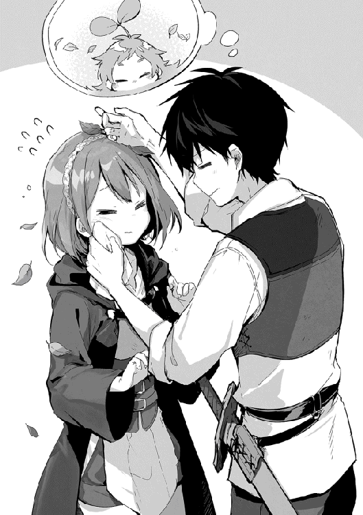
俺はさっさとすませ、ルイーゼを緊張状態から解放する。
その後、休憩を挟んで羽無し鶏を狩り、帰り際の駄賃で甲冑芋虫も狩って、本日の稼ぎは銀貨二七枚となった。
Ｅランク冒険者の一月あたりの収入は大体銀貨一〇〇枚、Ｆランクで銀貨三〇枚だ。俺たちは二日で銀貨五八枚程を三人で稼いでいる。一人頭一日銀貨九枚だな。このペースでいくと、休みを入れても月に銀貨二〇〇枚くらいの稼ぎになる。
なんか改めておかしい気がするな。モモに狩った獲物を運んでもらうだけで、稼ぎがインフレを起こしていた。
俺たちは獲物の解体を専門の業者に頼んでいる。モモのおかげで、自分たちで解体するより専門の業者に頼んだ方が良いからだ。牙狼とか一角猪とかの小さい獲物ならまだしも、凶牛や甲冑芋虫クラスになると解体するだけでも大変な肉体労働だ。その上、魔物の襲撃に備えなくてはいけないとなれば、時間も掛かる上に危険だ。
だから運び屋という商売が成り立つ。ただ、運び屋を雇うにも荷物が多ければそれだけ多く雇う必要がある。当然稼ぎも減る訳だ。俺の一番のチート能力はモモと知り合えたことだと、つくづく思う。
精算を終えて冒険者ギルドを出ようとした時、俺を呼び止める声が掛かった。
「おい、お前。何故無視する！」
それは面倒だからだ。
声を掛けてきたのは、グリモアの町を拠点として狩りをしている時に出会った五人組だ。名前すら知らないのに、妙に絡んでくる奴らだった。
目を合わせず、人違いですよという雰囲気のまま冒険者ギルドを出ようとした俺は、目の前に割り込んできた男と目を合わせてしまう。
俺はもう一度、無視して先に進もうとしたが、そこで肩を掴まれた。
「お前、ふざけているのか」
「いきなりアキト様の肩を掴むなんて、そちらこそ失礼ではありませんか？」
ルイーゼが言う。珍しくお怒りのご様子だった。男は若干怯む様子を見せる。出来れば俺たちが去るまで、そのままでいてはくれないだろうか。
リデルはこの件に関してはノータッチだ。ここでも一歩引いて様子を窺っている。流石に大事になりそうなら動いてくれると思うが、ルイーゼに絡む問題は俺が処理しなければいけない。
モモはいつかの様に小枝を持って戦闘態勢をとっているが、それはリデルが押さえてくれた。
「君は悔しくないのか、こんな黒髪の男に服従させられて。俺は見過ごしてはおけない」
「これは私が望んだことであって、貴方の考えには同意しかねます」
「おい、お前はなぜなにも言わない！」
俺が何か言ったところで収まるのか？ 正直人目もあるし事を荒立てたくない。それとも、このまま黙っている方が大事になるのか。
「もう一度言う、決闘だ！」
大事になった......。
前に断ったのは、グリモアの町を出れば会うこともないと思ったからだ。だが、現実には会ってしまった。何かしら落としどころが必要なのだろうか。俺にとっては、関わり合わない方がベストなんだけど。
この男以外の三人はどうでもいいという感じだし、残り一人の女冒険者は、ルイーゼを睨み付けていて、どちらかと言えば俺よりも、リーダーの男がルイーゼを気にしていることが気に入らないような気がする。
だったら四人で止めてくれれば良いのに。
「もう一度言う、お断りだ」
俺はノーと言える男だ。
ここで決闘を受けようものなら、それこそテンプレじゃないか。あれ、テンプレなら受けるべきか？
俺の返答に、リーダーの男は顔をタコの様に真っ赤にさせていた。顔を赤くするならルイーゼを見習った方が良い、ちっとも可愛くない。
まぁ、今更だな。俺はそれ以上構わずに歩き始めた。肩を掴まれているが、気にせずどんどん進む。リーダーの男が引き戻そうと手に力を入れても、身体強化を使い歩き続ける。
予想外の力強さだったからか、リーダーの男が躓き転ぶが気にしない。そのまま冒険者ギルドを出ようとしたところで周りの気配が殺気立つ。異様な雰囲気に振り向くと、リーダーの男が剣を抜いていた。
「それは無茶だろ......」
何でここまで拘るんだ!? そんなに俺が黒髪だというのが気に入らないのか？ それとも、ルイーゼと魔物の実戦訓練が気に入らないだけでここまでするか？
「お前が悪い！」
魔物と戦う時の恐怖とはまったく違う恐怖に心が凍る気がした。憎悪と殺意の混じったその目を見て、俺は立ち竦む。
そして、本当にリーダーの男は斬り掛かってきた。側で野次馬らしい誰かの悲鳴が上がったが、俺はその攻撃から目が離せなかった。攻撃はそれほど早くない。十分に躱せる。半身を引くだけで良い、右足を下げるだけだ──動かない!?
「アキト様！」
!?
「ルイーゼ、止まれ！」
動けない俺の視界にルイーゼが飛び込み、そのままリーダーの男に体当たりをした。剣先はルイーゼを逸れ、リーダーの男はそのままルイーゼと倒れ込む。
危なかった。マンガやラノベだったらルイーゼが斬られているところだった。
流石にルイーゼも盾を構え、剣先が当たらない様に体当たりをしていたが、無茶をする。
というか、俺はルイーゼに何をさせているんだよ！
「何故君が!?」
リーダーの男は唖然としていた。
一瞬、怒りから剣に手を掛けそうになったが、顔を顰めたルイーゼを見て思いが冷める。
「ルイーゼ、怪我は!?」
俺はルイーゼを立たせると怪我の確認をした。斬られてはいないけど肘と膝を擦りむいていた。
「何事だ!!」
遅いよ警備兵!!
「突然この男に襲われました！」
「何を......くっ！」
何をも何も、事実でしかないだろ。証人も多すぎて両手に余るぞ。五人組冒険者の残り四人も、リーダーの男が取った行動に驚いている様だ。しきりに俺たちは関係ないと手を振り、首を振っている。
「とりあえず経緯を聞きたいので、君にも同行を願おう」
「わかりました。でも先に彼女の手当てをさせてください」
「それは担当の医務がいるから任せて欲しい」
専門家がいるならそれに任せよう。俺の手当てよりはマシに違いない。
「アキト様、申し訳ございません」
「ルイーゼが気にすることは何もない。リデル二人を頼む」
「わかった」
流石にリデルもリーダーの男が取った行動には驚いている様だった。
調書は一緒に取られた。こういうのは普通別々に取る気もするが、リーダーの男から直接どんな言い訳をするのか、聞く機会を得られたと思うことにした。
その言い訳は、俺が無理矢理奴隷にしたルイーゼに魔物を焚き付けて虐待した、一度は注意をしたが、今日も同じことをしていたので再度注意をした、だが聞き届けられなかった為に私刑を行うつもりだった、ということらしい。
私刑が許されるのか!?
俺はこの世界の法律までは知らない。せいぜい常識の範囲で行動していれば問題ないだろうと思っていた。でも私刑が許されるのなら、力を持つ個人の不評を買っただけでもまずいことになるだろ。
「私刑は決闘を除いて許されていない」
良かった、どうやら私刑はない様だ。決闘なら受けなければ良いのだ。
「奴は卑怯者だから決闘は受けない」
受ける理由がないから受けないんだけどな。まぁ、卑怯と言われてもデメリットだけの決闘なんて受ける気もないが。
「ではアキト、君の言い分を聞こう」
「全てはその男の妄想です。ルイーゼは俺の奴隷ではないし、虐待もしていない。彼女は俺のパーティーの仲間で一緒に狩りをしているし、狩りの中で実戦訓練もしています。訓練は俺とパーティーリーダーの二人でサポートしながら、安全を確認した上で行っています」
「嘘だ！」
お前が言うな。
「事実は本人に確認してください」
「わかった。彼女に確認を取ろう。双方の言い分は記録した。しばしここで待つ様に」
おいおい二人きりにするんじゃないだろうな、と思ったが、流石にそれはなかった。代わりの警備兵が入ってくる。
リーダーの男は真っ直ぐ俺を睨んでいるが、俺はさっさと視線を外す。見つめ合っていても良いことは何もない。
一五分程して、最初の警備兵が戻ってきた。
「ハイデルの言い分には、いささか本人の意向と食い違いがある様だ」
リーダーの男の名前はハイデルなのか。ハイデルはなお一層俺を睨み付ける。何故かこの男はルイーゼを守る様なことを言いながら、ルイーゼの言葉を信じ様とはしない。
「アキトが何も手を出していないことは、目撃者の一致する見解だった。よって今回はハイデル、お前の身柄を拘束させてもらう。処分は追って下るだろう」
この警備兵はきちんと公平な判断が出来る様で良かった。
ハイデルは警備兵の声には聞く耳持たずという感じで俺しか見ていない。
「アキトはこれで帰ってくれて良い」
「わかりました。お騒がせいたしました」
主にハイデルがな。俺はさっさとこの場を離れるべく席を立つ。
「アキト、俺はお前を許さない」
いい加減、理不尽な絡まれ方をし続けるのも腹が立ってきた。
「お前が許せない本当の理由を言え。そしたら決闘を受ける」
ハイデルは一層眉を吊り上げたが、その後は俺から視線を反らした。やっぱり別の理由があるのか。
「アキト様！」
冒険者ギルドの入口ホールに戻った俺をルイーゼが迎える。モモは未だに小枝を構えていた。俺はモモの頭を撫でて、もう大丈夫だと伝える。
「ルイーゼ、大丈夫だから。モモも心配してくれてありがとう」
ルイーゼの肩を叩いて心配ないと告げる。
「アキト、彼は？」
「身柄を拘束、追って処分が下るらしい」
「それくらいはしておかないと、周りも静まらないだろうね」
何もお咎めなしでは、今後同じ様なことが起きた時に示しが付かないということだろう。
「アキトが調書を取っている時、僕は残った四人に話を聞いていたんだ」
ハイデルのパーティーメンバーのことか。
「それで何がわかった？」
「彼はバイバッハ名誉男爵の嫡男でハイデル・バイバッハ。冒険者になった理由は僕と同じで実績を積む為、同じ様な境遇の仲間四人とね」
うぉっ！ 全員お貴族様かよ。目を付けられたりするだろうか。
爵位を継げない可能性の高い貴族は、次に目指すのが王国騎士団だ。王国騎士団に入るには幾つかの方法がある。手っ取り早いのは実績を残すことだ。実績とは各種魔物、魔人族の討伐、依頼達成による社会貢献だ。だから冒険者には意外と貴族の血縁が多い。まぁ、リデルもその一人だしな。
「初めはここトリテアの町で魔物狩りを始めたけれど、この辺の魔物は彼らが相手にするのは厳しく、実績らしい実績が残せなかった。ハイデルは焦っていた様だね。父親はハイデルが王国騎士団に入れない様であれば爵位を失うことから、ハイデルにはかなり厳しく当たっていた」
リデルの話では、名誉爵位は一代限りの物で、継承出来ないらしい。ただし、嫡男が爵位を得た場合は名誉爵がはずれ、継承権が与えられる。
ハイデルが王国騎士団に入ると騎士の爵位が得られる。つまり、それでバイバッハ家は爵位継承権が得られる訳だ。自分が授爵するか、優秀な人材を生み出せなければ一代限りで終了となる。無闇に貴族が増えない為の措置なのだろう。
「そこでグリモアの町なら初心者でも稼げるという噂が立って、ここを離れてグリモアの町に拠点を変えたらしい」
その噂の元は俺たちか？
「グリモアで比較的安定した狩りを続けていたところに、今度は冒険者になったばかりの初心者が巨大熊を討伐したという話が広まって、しかもその初心者は黒髪だった」
その噂も俺たちか。
「ハイデルの父親はそれが痛く気に入らなかったらしく、それまでにも増してハイデルに厳しく当たっていたらしい。ハイデルは再び大物狙いでトリテアの町に戻ってきたは良いけれど、そこで耳にしたのは......」
「ホブゴブリン討伐か」
「討伐もあるけれど、実際には人命救助だね。これは実績としてかなり大きく見られるから、ハイデルはその場にいなかったことが悔しかっただろうね。もちろん僕はその恩恵を受けられた訳だけど」
「人命救助。それでルイーゼに拘っていたのか」
酷い扱いを受けている女の子がいて、それを助けるということか。
「それが一つ。もう一つはルイーゼ自身に興味があるみたいだね」
それもか。ルイーゼは美人さんだからな。だから一緒にいる女冒険者は、いつも不満そうな顔をしていたのか。
ネタがわかればただの逆恨みだが、親のエゴで振り回されているのは気の毒とも思える。王国騎士団に入る為の実績を作りたかったのに、独房に入る実績を作ってしまったのは、取り返しの付くことなのだろうか。
「完全な逆恨みだけれど、恨みはやっかいだよ」
形がない物を敵にするのは本当にやっかいだ。この流れだと、俺はハイデルの親にも恨まれていると考えて間違いないだろう。
「アキト様、私のせいで......」
ルイーゼが肩を落とす。
「ルイーゼに問題はないよ。もちろん俺にもない。相手が悪かっただけだ」
「はい......」
しかし、俺はずっとこうして絡まれ専門で生きていくしかないのか。いっそのこと隠れ潜む様に生きるより、文句の付けようもないくらい大物になる方が建設的じゃないか。
いずれにしてもリゼットに会ってからだな。俺がこの世界の人間ではないとバレる可能性があるか、それを確認してからじゃないと迂闊なことは出来ない。それこそ魔女狩りの様な異端裁判とかに巻き込まれてはたまったものじゃない。
その日の夜はなかなか寝付けなかった。人の憎悪を真っ向から受けたのは初めてだった。思い出して再び背筋が凍る。あの時ルイーゼが助けてくれなかったら、俺は躱せたのだろうか。
「リゼット......」
黒い髪を持つことで忌み嫌われ、命をも狙われる。そんな思いを繰り返してきたリゼットに、俺は随分と無責任な言葉を掛けていたと、改めて申し訳なく思う。
物語の英雄か王子様にでもなったつもりかよ......頼む、無事でいてくれ。
リゼットと連絡の取れないことが寂しく、不安で堪らない。手紙は何度か送っているが、リゼットから手紙の返事は来なかった。
この世界にはメールがないのだから、手紙も俺と同じ様に馬車に乗って旅をする。もしかしたら、最初に送った手紙もまだリゼットの元に届いていないかもしれない。
そしてリゼットが返事を返そうとしても、俺は既にそこにはいない。念の為、旅立ってからは返事を受け取れないと書いて置いた。
魔法がある世界なのに不便すぎるだろ。
リゼットに会ったら念波転送石の改良をして、いつでも話せるようにしないとな。後は異世界転移魔法を完成させて......父さん、母さん。ごめん、まだ帰れそうにない......。
夜の喧騒も消え去る頃、俺は知らずのうちに眠りに就いていた。
ハイデルの一件が落ち着いた翌日。朝の鍛錬と魔物狩りを問題なく終えた俺たちは、鍛冶屋に来ていた。今日は俺の剣の手入れとリデルの防具の調整が終わる日だ。
「おう、出来ておるぞ」
ギルムは愛想が良くない。厳しい顔で愛想が良いというのもどうかと思うが。ギルムというよりドワーフ族の特徴なのだろうか。
「良いですね」
リデルが受け取った鎧を早速試着し、体を動かして様子をみる。今までの鎧よりはだいぶ重みがあったはずだ。それでもきちんと調整したことで、重みもいい感じに分散しているのか問題はなさそうだ。
「今までと変わりなく動きやすいよ」
「注文が細かかったからじゃろ」
ギルムは面倒くさかったぞ、とボヤキながらも出来栄えには満足している様だ。リデルも良さそうだし、腕はいいのだろう。
「こっちがアキトの剣だ。火を入れて打ち直してある」
「凄いな、新品以上に見える」
ぴっかぴかで、気のせいか色合いも鉄らしくなっている。前はもう少し灰色だったと思うが、表面が滑らかになったからか。
「もともとは鋳造品の刃を磨いただけの物じゃ。素材が魔鉱石じゃなければ、いまどき初心者でも買わない様な代物じゃよ。せっかくの素材がもったいなかったからな、打ち直しておいたわい」
鍛造品になったのか。買う時に鍛造品の剣は三倍近かった。銀貨一二枚で価値が三倍に上がるなら良い買い物だったのだろう。
「ここまでしてもらったら儲けがないんじゃないか」
「良くなる物なら良くしなくてどうするんじゃ」
男前だな。
「それじゃお礼の代わりじゃないけど、俺も防具を買うよ」
魔弾を撃ちにくいので盾は持てないが、敵の攻撃を軽減出来る小手があれば取れる手段が増える。攻防一体の装備があれば理想だが。
「ホブゴブリンの振る剣を受け止められるくらいの小手があると良いんだけど」
「アキトじゃあんなもん受け止めようとしたところで、体ごと吹っ飛ばされるのが落ちじゃの。それに生半可な防具じゃ意味をなさん」
「躱せる時は躱すけど、ホブゴブリンは強いよ。吹っ飛ばされてもまともに食らうよりはマシさ」
「一度は勝てたからと言っても慢心しないのは良いことじゃ。金があるならいくらでも良い物はあるが......そうじゃな、これを使え」
ギムルは革製のグローブを鉄の板で補強したグローブを投げてよこす。
「盾じゃあるまいし受けることは出来んが、上手く刃を滑らせれば凌げることはあるじゃろう」
一キロくらいあるだろうか。今までのグローブに比べるとかなり重い。それでも盾よりはだいぶ軽いし、贅沢は言えないか。
「しかし、装備はどんどん重くなっていくなぁ」
片手剣が二キロ弱、小手が一キロ、その他の防具をあわせて八キロ弱といったところか。手の先に重さが加わるだけで随分と動きが緩慢になったように思える。これはきちんと慣さないといけない。
遠征組みの冒険者はここに野営道具や食料、そして狩の獲物を運ぶことになる。俺みたいに町を拠点とした冒険者はまだ楽な方だ。
「魔鉱石を原材料にしていれば、同じ強度でももっと軽く作れるがの。それかミスリル鉱を使うかじゃな。どっちも軽く銀貨五〇〇枚は超えてくるが、金さえ持って来ればいくらでも用意するぞ」
「駆け出しの冒険者になんて無茶をいうんだ。俺はこの選んでくれた小手でしっかり身を守る努力をするよ」
「それがええ」
小手の代金は銀貨八枚、銅貨で八〇〇枚だった。
鍛冶屋を出るとすでに日が暮れ始めていた。グリモアの町は日が暮れるとすぐに人々の活動が止まったけど、トリテアの町の夜は更ける程昼間とは違った活気が沸いてくる。
宵越しの銭は持たないではないが、冒険者は常に死と隣りあわせで活動しているだけ、無事に一日を過ごせたことを楽しむのかもしれない。昨日見掛けた人が今日はもうこの世にいないというのも良くある話らしく、人事とは言い切れない。
「リデルさん、今日も無事に活動を終えた様ですね。お疲れ様です」
リデルに声を掛けてきたのはライトブラウンの髪をした細身の女性だ。冒険者ギルドの受付で、名前は確かアデレだったと思う。仕事中とは違って髪を肩の辺りでまとめていないのと眼鏡を掛けていなかった為、すぐに気付くことが出来なかった。
「こんばんはアデレさん。少し雰囲気が変わりましたね。素敵な服です。良くお似合いですよ」
リデルの言葉にアデレは顔が真っ赤になる。なるほど、そう言えば良いのか。覚えておこう。見た目はともかく、スキルだけは学ぶことが出来るからな。後でモモを相手に練習だ。
しかし、モモは俺が何をしても喜ぶから参考にならないか。ルイーゼはまじめだから、俺にそんなことを言われても困るだろう。リゼットが丁度良いか。会った時に褒めることを忘れない様にしよう。
「こんばんは。あ、あの、もしまだお済みでなければ、これからご一緒にお食事でもいかがですか。そ、その。もちろん皆さんもご一緒に」
ヘタレたな。そこだけは頑張らないと。リデルはただでさえライバルが多いのだ。アデレは俺が黒髪でも気にならないみたいだし、少しだけ力を貸そう。
「リデル、俺はもう少し見て回りたいところがあるから二人で行ってくれ」
アデレはちょっとビックリした様な、感謝をしている様な、それでいて助けを求めている様な......いや、俺にはまだ女性の気持ちはわからないな。とにかく悪いことにはなってなさそうだ。
「そうかい。それじゃ後でまた」
リデルは空気を読む男だ。
別にリデルとアデレをくっつけたい訳じゃない。最近の俺はちょくちょく絡まれるし、聞こえよがしに悪口を言われることが多い。せっかくお目当ての人と、楽しく食事をしているところを台無しにすることもないだろう。食事は楽しくするのが一番だ。
リデルと別れた後、ルイーゼとモモを連れて宿への道を歩く。人が多い為、モモの手は放さない。流石にルイーゼの手を引くのもどうかと思うので、ルイーゼがはぐれないよう注意をしておく。
トリテアの町は治安の良い面と悪い面が同居していた。良い面はそれなりに腕に覚えのある冒険者が多く、その冒険者が引退してはこの町で商売や護衛と言った仕事をする。
だからこの町にいる人間は下手な盗人やスリなんかより強く、下手に手を出してしくじろうものなら、逃げるどころか周りがみんな敵だらけってことになる。同じリスクを負うにしてもトリテアの町でやる必要はなかった。
悪い面はその冒険者自体に横柄で柄の悪い連中も多いことだ。腕に自信があり、それなりに稼ぎ、町は冒険者を優遇する。増長するなと言ってもなかなか難しいのだろう。
俺は、出る杭は打たれる、という大変ありがたいお言葉を忘れずに行動しよう。ただでさえ髪の色が黒いということで因縁を付けられやすいのだから。
それにしても、この賑やかなトリテアの町で孤独を感じるのはなぜだろう。俺はゲーテにでもなったのか。多分、この夜祭りの露店街の様な喧噪が懐かしいんだと思う。あれだな、祭りの後の一抹の寂しさを思い出したな。
「アキト樣」
「どうかしたか？」
「あの、私たちも外でお食事を取りませんか」
ルイーゼが自己主張するのは珍しいな。良い傾向だと思う。
また周りからガヤガヤ言われる可能性はあるけど、俺は何も気にしていないというところを見せる必要もある。
「もちろん構わないさ。何か食べたい物ものでも探そうか」
「はい」
嬉しそうな笑顔が滅茶苦茶可愛いな！
良いじゃないかこんな笑顔が見られるなら、いくらでも陰口を叩くと良い。
俺たちはゆっくり出来そうな食事処を探しながら露天を眺め、時折立ち止まってはその品を手に取る。
そう言えば、グリモアの町の冒険者ギルドでお世話になったサラサに贈り物をした時、ルイーゼにもプレゼントをすると決めたんだった。同じ髪飾りじゃ芸がないだろうか。
他に思い付くのはリングとかネックレスとかイヤリングとかブレスレットとか......なんかどれも難易度が高いな。サラサの髪飾りは気軽に買えたのに。予定外の難問だ。
ん、リボンの髪飾りか。これはなかなか可愛い。ルイーゼの髪の色はブラウンだ。少し明るめの青いアクセントが良く生えると思う。リボンも小さめでルイーゼには良く似合いそうだ。レースがリボンのしっぽの様に飾り付けてあるのも気に入った。
「ルイーゼ」
俺はルイーゼに声を掛け、その髪にリボンの髪飾りが合うか確認する。付ける場所は......リボンが小さめだし、サイドかな。うん、良いんじゃないだろうか。こうなるとカチューシャも欲しいところか。
「あ、あの......」
ルイーゼが動き出した。そう言えば固まっていたな。合わせるのに夢中になってしまっていた。顔が少し上気しているが、まぁ俺も慣れないことをしているので似た様な物だろう。俺はアデレと違ってヘタレじゃないからな、きちんと行動するのだ。
その後、いくつかルイーゼに合わせてみたが、結局最初に目にとまったリボンの髪飾りを贈ることにした。
「ありがとうございます。大切にします」
ルイーゼは贈ったプレゼントを胸に抱きしめ、顔を伏せてお礼を言葉にした。流石に俺も面と向かってお礼を言われるとヘタレそうなので良しとしよう。
ルイーゼへのプレゼントの後はモモだ。モモは植物系精霊のブラウニーだが、一般的なブラウニーとはかけ離れている為、精霊と思われることはなかった。でも流石に特徴的な二枚の葉っぱが目立つ。
モモが精霊だということは、その能力を目当てとしてトラブルになりかねないことから、可能な限り隠すことにしていた。
目立つと言っても、もっと目立つ人が多いので、モモの葉っぱくらいは可愛いと言われる程度のものだ。なにせ町の中には、熊だったり鳥だったり、中には骸骨みたいな兜を被った冒険者がいっぱいいるのだ。みんな名を売る為に特徴付けているのだと思うが、おかげでモモの事も深く触れられることはなかった。
とは言え、折角だからここで帽子でも手に入れることにした。帽子の形は色々と悩んだが、キャスケット型のものにする。深みがあってツバの出ている帽子だ。これを少し加工して、葉っぱが外に出る様にすれば飾りの付いた帽子に見えるだろう。
それから花の髪飾りを選ぶ。モモの笑顔に負けないくらい明るい雰囲気で、見た目のイメージは黄色い朝顔の様な花だ。最終的には帽子に付ける予定だが、今は髪に付けてあげた。
モモは喜びを踊りで表現している。その妙な踊りが可愛い!!
その後は、流石に二日続けてトラブルが発生することもなく、食事を終えて宿に戻った。そこで俺たちを待っていたのは、少し恨めしそうな顔をしているリデルだ。
そう言えばアデレを押しつけたんだったな。愚痴があるならそれくらいは聞くとしよう。
トリテアの町に着いて五日目。俺はいつもより早く目が覚めたので、試そうと思いつつも試していなかった魔法に挑戦する。魔力の出力が出来るのであれば入力も出来るのではないか？ という疑問に対する挑戦だ。
以前この話になった時、リデルは魔石から魔力を吸収することは出来ないと言っていた。でもそれは今出来ないだけではないか、と思うところがあった。
専門家が聞いたら呆れるかもしれないが、俺が魔力に対して持っているイメージは空気の様なものだ。形はないが確かに存在し、生命を維持するのに大切なもので、魔力を使い過ぎると気を失うのは、体の防衛反応じゃないかと考えている。
元の世界には魔力がない。俺がこの世界に来た時、新たな力として魔力が体に宿るのを感じたことから、それは間違いないだろう。
俺は魔力を制御する時、血管を通り細胞へと魔力が流れるのを感じている。だから酸素と同じ様に運ばれているのではないか、というのが俺の考えだ。つまり、人間は呼吸をすることで魔力を吸収している、あるいは呼吸をすることでエネルギーが作られるのと同じ様に、魔力も作られると考えている。
魔力を出力するのは肺から空気を吐きだして空になった後、さらに残った空気を体中から絞り出す様な感じで行っている。もし吸収がその逆だとすれば、呼吸によって魔力を得ている可能性は高いと思う。でも、俺以上に魔法を研究している人だって沢山いるはずだ。俺が気付く様なことを調べていないとも思えない。
......そう言えば、人が空気を吸った時と吐いた時では空気の状態が変わっているとか、この世界の人が知っているのだろうか。酸素を吸って二酸化炭素を吐いていると知らなければ、呼吸で魔力を吸収あるいは生成しているというのも気付かないかもしれない。
仮にそうだとして、魔力の濃い魔巣の近くに行けば、より多くの魔法を使うことが出来るのだろうか。魔巣の奥深くは魔力が濃いという。それなら呼吸によって吸収する量も多いだろう。
でも、そんな話は聞いたことがないし、自分でもそうとは感じない。どんなに栄養のある物を食べても、ある一定以上は消化しきれない様に吸収出来る量にも限界があるのだろうか。
俺は今までのことを整理し、今度は魔力の存在を意識して空気を吸う。吸った空気に魔力を感じるか......感じない、というかわからない。味や臭いでもあればわかりやすいが無味無臭だな。
いや、世の中に無味無臭とかあるのか。最も慣れ親しんだものを無味無臭だと思い込んでいるだけだよな。
あ!? 思い出した!!
俺はこの世界に来た時、濃密な空気の様な何かを吸い込んで、陸の上なのに溺れそうになったじゃないか。あの後は腐敗臭だとか死体だとか、そのことを考える余裕もなく忘れていたけど、あの時に吸い込んだ空気の違和感。あれは魔力を吸い込んで咽せていたんじゃないのか。
もう一度、深呼吸をして吸い込んだ空気に魔力を感じるか集中する。思えば、リデルやルイーゼに魔力を流している時、その魔力が制御されているかどうかを感じ取っていたじゃないか。魔力の流れは制御が出来る。それは感じ取れるということだと自然に認識していた。
見えないけど確かにある空気。その中の魔力......確かにあるな......この世界に魔力は満ち溢れている。手を動かせば空気を押しやる様に魔力も押しやられる。
目を瞑っていても魔力は感じられるんだな。空気の中の魔力密度と、体の中の魔力密度には随分と違いがある様だ。人の体には魔力が濃縮されている。でも他の人を感じることは出来ないな......いや、距離の問題か。なんとなく一方から密度の乱れを感じる。
その魔力の乱れも近付く足音と共にハッキリしてくる。あぁ、そうか。モモはこの世界を見ているんだな。モモは魔物を感知するのが得意だ。藪や背の低い木に隠れていても見付ける。精霊が特別なのかと思っていたけど、単純にモモには魔力が見えるんだ。
人に個性がある様に、その人の持つ魔力にも個性があるみたいだ。身体強化の練習で慣れ親しんだこの魔力の感じはルイーゼだな。遅れてくるのはリデルか。わかるものだな。
そしてモモ、何故かモモは全く同じ姿をしていた。普通に目で見るのと魔力を感じてみる姿が全く同じだ。精霊が見える人と見えない人の間には魔力を見る力が関係するんじゃないのだろうか。
仮定と推測ばかりなので、魔力を吸収する方法は上手くいかなかったが、色々と考えが纏まったこともある。早起きもそれなりに有意義だった。これは三文以上の価値があっただろう。
朝の鍛錬を終えた後、俺たちはアデレを迎えて一緒に狩りに出た。何故アデレが一緒なのかというと、要約すれば今日は仕事が休みなので狩りをしながら駆け出しの冒険者に色々教えてあげる、ということだった。
下心はあるだろうけど、俺たちにとっては願ってもないことだったので、ありがたく同行して頂く。
ちなみにアデレはＥランク冒険者でもあり、俺たちと一緒だ。武器は身長と同じくらいの槍を持ち、背中には弓を背負っていた。革製の服という軽装なのは身軽さを優先するのもあるだろうけど、筋力の問題かもしれない。アデレは胸以外、細身だった。
「それでは甲冑芋虫と羽無し鶏以外で適正のある魔物ですね」
「ええ、その二匹は一通り経験しましたので」
リデルとアデレが先頭を歩き、俺とルイーゼそれにモモが続く。
アデレはモモが付いてくることに難色を示したが、精霊だから大丈夫だと伝えると、吃驚していた。やはり精霊は珍しいらしい。
冒険者ギルドの職員には、冒険者の不利益になる様な情報を、法とギルドの規律に反しない限り秘匿する義務があるので、それを守ってくれると信じよう。
「手頃なのは灰色大猿か尾長鳥ですね。灰色大猿は体長一・五メートル程の人型で、武器は怪力です。怪力で掴んでは壊すといった単純な攻撃ですが侮れません。Ｅランクに分類される魔物では強い方ですね。ただ、間合いを取って戦う分にはそれほど脅威はありません」
猿というよりゴリラだと思っておいた方が良いかもしれない。この世界では偶に、言葉から浮かぶ印象より厳ついのが出てくる。
「尾長鳥は体長が一メートル程です。名前の通り尾が長く体の三倍程ある魔物で、空から滑空してきては刃の様に鋭い尾羽を使って攻撃してきます。不意打ちにさえ気をつければ、動きは直線的で躱しやすい魔物です」
さすがこの近辺が専門なだけあって、アデレは直ぐに魔物を選び出し、スラスラと簡潔に説明を終える。
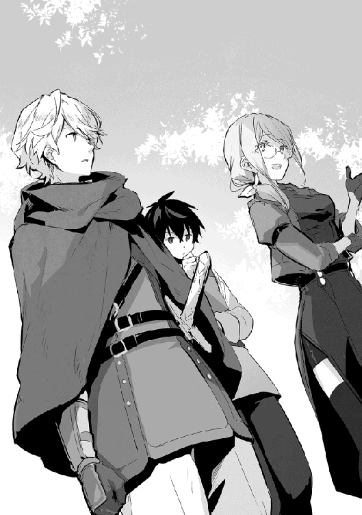
「出来ればルイーゼに戦闘経験を積ませたいんだ。その二匹ならどっちの方が良さそうかな？」
「そうですねぇ......尾長鳥は攻撃方法も特殊ですので、それに慣れるよりは接近戦になる灰色大猿の方が良いと思います」
確かに過去に戦った魔物を考えても、最初は接近戦をこなした方が良さそうだ。ただ、怪力というのがちょっと気になる。
「アキト様、私にやらせてください。倒すのは無理かも知れませんが、私も戦えるようになりたいです。そ、その......がんばります」
「アキト、ルイーゼにやらせてみよう。僕たちが付いていれば大事になる前に止められるよ」
「そうだな、わかった。ルイーゼ、基本は守り切ることだ。倒すのは俺たちがいることを忘れるな」
「はい！」
しばらく進んだところで視界の端を何かが通り過ぎた。それは木の幹を蹴るようにしてジグザグに近付き、そのまま飛び掛かってきた。
「おおっ！」
思わず条件反射的に放った魔弾が灰色大猿の頭を打ち、そのまま地面を転がっていく。
「ルイーゼ！」
「はい！ いきます！」
灰色大猿は身長一メートル程だったが、その体型は非情に筋肉質で、厚い胸板と太い腕、それに馬鹿みたいにでかい手が印象的だった。それが顔を歪ませ、唸りながら俺に向かってくる。
その前にルイーゼが割り込み、しっかりと盾を構える。リデルの指導を受け、そして戦うリデルを見続けたせいか、ルイーゼの構える姿はリデルによく似ていた。思った以上の安定感に、戦闘中なのも忘れて感心する。
「!?」
灰色大猿はまるでハンマーの様にその拳を振るい、ルイーゼの盾を打ち付けた。
木の盾が軋む音と重い衝撃に、体が数一〇センチ程横に滑ったが、ルイーゼはしっかりと大地を踏みしめ、次の攻撃に備える。
「ルイーゼさんはしっかりと体を鍛えているのですね。思った以上です」
アデレが本心から感心した様子を見せる。俺も同意だ。毎日ルイーゼのことは見ていたが、どこかで女の子だからと侮っていたのかも知れない。
ルイーゼは同世代からすれば小柄な体付きだ。ある部位に限ればアデレに負けない魅力を持つが、それでも体の軽いルイーゼは、常に質量という武器を有効に使ってくる魔物を相手に苦戦することが多かった。
それは仕方のないことだが、今のルイーゼはただ力に翻弄されていた頃に比べ、しっかりとその攻撃を受け止め、尚且つ転ばない様になっていた。
まだ受け流すのは上手くいっていないが、灰色大猿が繰り出す左右の拳から目を逸らさず、盾を合わせて防御に専念している。
ルイーゼの疲れが見えてきたところで、俺は灰色大猿に止めを刺す。
大きな深呼で息を整えるルイーゼは、少し悔しそうな表情を見せた。それが自分で倒せなかったことに対してなのか、防御に満足出来なかったのかはわからない。それでもルイーゼの頑張りは──
「期待以上だった。ルイーゼの頑張りに驚かされたよ。俺も負けられないな」
「はい、ありがとうございます」
ルイーゼは俺の言葉に答え、目を細めて笑顔を見せる。その表情からは先程の不満そうな様子は消えていた。
「ルイーゼさんのランクで灰色大猿の攻撃を凌ぎきったのは素晴らしいと思います。アキトさんと一緒で、私も負けていられませんね」
そんなアデレの、冒険者としての腕も見事だった。木の枝を使い器用に移動する灰色大猿に、弓で同時に狙いを定めたが、矢を放つのも狙いの精度も圧倒的にアデレの方が上手かった。
同じ速さで狙っていたら、俺の矢は灰色大猿に当たりもしなかっただろう。早い射出に素晴らしい命中精度、狩人歴五年の賜物だ。冒険者になるずっと前、子供の頃から狩で弓を使っていたらしい。
Ｅランクの魔物を弓の一撃。これだけの腕があれば冒険者ギルドの職員ではなく、冒険者として活躍出来るんじゃないのか。
「私が狩りをしていたのは生活の為で、職員でその生活が守れるのであれば職員を選びます。今までに何人もの人がこの森で命を散らしていきました。私の父親もです。必要以上に狩りを行おうとは考えていません」
俺は狩り以外で生活が出来るのであれば、狩りをしないだろうか。例えば、モモに手伝ってもらって運び屋や商人という道もあると思う。身を守るのであれば護衛を雇えば良いだろう。それでも冒険者を続けるだろうか......続けるだろうな。
理由は今の生活が充実しているからだ。運び屋には運び屋の、商人は商人の楽しさややり甲斐があると思う。今の俺は冒険者としてそれらを感じている。
俺は弱いことが怖い。この世界に来たあの日、俺は弱いということがどういうことかをこの目で見た。俺は強くなりたい。
もちろんリスクもある。マンガやラノベでは主人公が仲間の死を乗り越えて成長していくが、俺はリデルもルイーゼも、もちろんモモだって失いたくはない。何も失わずに成長していきたいというのは、この世界では甘い考えなのだろう。
背伸びをせず現状に満足し、Ｆランクの魔物を狩り続けていても事故は起こるかもしれない。ちょっと前に、ただの狼の群れに遭遇した時も死にかけた。ルイーゼが背後を守ってくれなければ、あの時点で死んでいた可能性もある。
だから、冒険者を続けるというなら、仲間と価値観が合わなければ無理だ。リデルはリスクの必要性もわきまえている。ルイーゼは巻き込まれているだけの気がする。モモは......精霊って死ぬのか？
今までの狩りでもモモに気を遣ってはいるが、直接攻撃してきた魔物は一度もいなかった。魔物は精霊を認識出来ないのかもしれない。
俺が冒険者を続けるのは手段であって目的ではない。強くなりたいだけなら、冒険者予備校に行くなり魔法大学に行くとか、今より安全な方法もある。リゼットと会うことが出来ても、直ぐに元の世界に帰れるとは限らないから、落ち着いたら他の方法をとるのも良いだろう。
「まだ腕は落ちていないわね」
「僕よりはるかに上手です」
「そ、そうでしょうか」
「少なくとも俺よりは上手いな」
「誰に習う訳でもなくそこまで出来るのですから、アキトさんも筋は良いと思いますよ。基本的なことは私にも教えられますので、まずは基本の型だけでもしっかりと覚えましょう」
「教えてもらえるならありがたい」
アデレはその後も見事な腕前で灰色大猿に矢を命中させていく。最初の様に頭に一撃という訳ではないが、四本に一本当てるのが精一杯の俺に比べれば、殆ど外さないだけでも素晴らしい。
俺はアデレに教わり、弓の構え方から狙いの定め方を意識し、当てることよりも狙った方向へ矢が飛んでいくように練習をした。アデレの教え方は上手で、我流の癖がどんどん修正されていく。朝方に比べれば命中率は随分と上がった。
時折、背中越しに構えを直してくれるアデレの、その豊満な胸が背中に当たるが、残念ながら革越しではまったく柔らかさを感じることは出来なかった。
「動きを読む？」
「そうです。実際に読める訳ではありませんが、慣れてくるとなんとなくわかる様になってきます。灰色大猿であれば、木の枝から木の枝に飛び移る瞬間がわかりやすいですね。着地地点に矢を放つ感じです」
「動きが止まっている時を狙っていたな......」
「それも間違いではありませんが、魔物は音に敏感なので、何かを感じたら取り敢えず動くという習性がありますので、躱されることも多いですから」
実際に躱されまくっていた。
「見ていてください」
アデレがまるで有言実行だとばかりに、別の木に飛び移ろうとしていた灰色大猿の着地地点を狙って矢を放つ。その矢は木に掴まった瞬間の腕を捉え、力が抜けた灰色大猿はそのまま落ちていく。見事なものだった。
さすがにそれで死ぬことはなく、矢を受けた灰色大猿はこちらに気付いて走り寄ってくるが、リデルの防御とその隣で槍に持ち替えたアデレが二人で討伐した。俺とルイーゼは出番がない。
「アキト様、お二人とも楽しそうですね」
「そうだな、意外と気が合うのかも知れない」
楽しそうに狩りを続ける二人を見ながらも、俺は回りの警戒に務める。遊撃と警戒が俺の仕事だ。ただ、森の中では視界が悪くモモが魔物を見付ける方が早い。
だからといって任せていては自分の為にならない。モモが見付けてくれる今だからこそ、安全に練習が出来るというものだ。
俺はおそらくモモがしているだろう魔力検知を行う。空気の中に漂う魔力を感じ取り、その魔力の密度に斑がないかどうかを探る......斑だらけだった。
朝の鍛錬では気が付かなかったけど、植物も魔力を宿していた。だから森の中では魔力の密度がばらばらで、仮に魔物がいたとしても区別が付かなかった。モモが魔物を感知しているのは別の方法なのだろうか。もっと精度が上がれば視認する様に感じられるのだろうか。
不意にモモが俺の袖を引っ張り、一方向を指差す。魔物を見付けた時の仕草だ。少し茂みが多くなってきたこの辺りは、余り視界が良好とは言えない。モモがいなければ俺には気付けなかっただろう。
「リデル！」
「わかった！」
リデルが俺の声にすぐに答え、臨戦態勢をとる。ルイーゼはモモの指差した方向とリデルの位置から、自分の役割にあった位置へ移動していた。この辺の動きが普段からパーティーを組んでいると楽だと思う。何も言わなくても各々が必要なことを瞬時に行う。
アデレは一瞬のことに何が起こったか理解出来ないでいたが、俺たちの動きから危険を察知したようだ。
俺がするのはアデレのサポートになる。アデレ自身が身を守るのは可能だとしても、今何が起きていて何をしようとしているのか説明は必要だ。
「アデレさん、何か魔物が来ます。俺がサポートしますので、近くにいてください」
「えっ!? わかりました！」
アデレは槍を構え直す。視界が悪く、弓には適さないので判断は正しいと思う。
しばらくすると、重い物を引きずり小枝を折りながら魔物が迫ってくる音だけが聞こえてきた。動きは早くない。それでも、姿が見えない魔物にじっくりと追い詰められている様な圧迫感がある。
「リデル、今までの魔物とは違う感じだ。嫌な予感がする」
「アデレさん、この辺りで強めの魔物は何になりますか？」
「この辺でＥランク以上の魔物を見掛けたという話は、聞いたことがありません」
それでも、確実に接近してくる魔物の気配に、アデレも何かがおかしいと思っている様だ。
「左だ！」
俺の声に、リデルが剣と盾を持ち直し警戒を強めた直後、藪を掻き分けて姿を見せたのは大蛇だった。
ヤバい!?
直感で勝てない相手だと悟る。リデルの表情にも余裕がなさそうだ。驚きの表情と共に汗が額を流れ落ちる。
「ひっ！」
「ア、アキト様っ！」
アデレとルイーゼの二人は驚きよりも恐怖に顔を歪める。
大蛇の体長はおそらく一〇メートル。胴は幅で三〇センチはありそうだ。大蛇は鎌首を上げ、その頭は三メートルの高さにあった。血に塗れた様な真っ赤な舌を出し、口を開けて威嚇の構えをとるその姿からは、巨大熊に負けない威圧感があった。
大蛇は俺たちと相対してもすぐには襲ってこず、周囲を囲う様に移動していた。しかし、その頭だけは常にこちらを監視する様に見つめ続ける。
「毒大蛇!? この辺にいる訳が！ それに、まだ繁殖の時期には早いはずです」
理由はともかく、いるのは間違いない。
睨まれているだけで背筋に虫ずが走る感覚が、間違いだというならどれほど良いか。
「毒大蛇はＤランクの魔物です、噛まれると致死量の毒に侵されます。それと尻尾に注意してください。背後も危険です！」
蛇がいるなら毒蛇くらいても不思議じゃないが！
俺の拙い言語能力で読んでいた冒険者ギルド発行の冊子には、この辺に生息していない魔物だったし、アデレも驚いている様だから例外なのだろう。
それに、今までの魔物で特殊攻撃といえば、甲冑芋虫の粘着糸くらいだ。あれもまともに食らったら、身動きが取れず危険なことに代わりはないが、毒と比べれば明らかに危険度が低い。粘着糸では直接的な死因になることはない。運が悪ければ窒息もありえるが、噛まれたら毒を受けることに比べれば可能性としてははるかに低い。
しかも、毒がなくてもあの巨大な顎で噛まれれば、人の体なんて耐え切れずに引き千切られるだろう。それに、あの体で締め上げられるのもまずい。とてもじゃないが脱出は無理だ。アデレが言う様に、あの質量を持つ尻尾で叩かれるのも致命傷になり得る。
毒大蛇はしっかりと獲物を見定める様に俺たちを捉え、時折威嚇の様に唸り声を上げていた。
「っ!?」
正直これがＤランク以上の魔物と言われても納得しそうな、総じてリスクの高い魔物だ。
不幸中の幸いか、この毒大蛇は怪我を負い所々の鱗が剥げ落ちて血を流していた。
冒険者と戦って逃げてきたのか？
それとも、冒険者を打ち倒してこちらに向かってきたのか？
「撤退戦を行う！」
「アデレさん、案内を頼みます！ ルイーゼはアデレさんと一緒に！」
「わ、わかりました。ルイーゼさん、こちらです」
「は、はいっ！」
リデルの考えは即時撤退だし、俺もそれには同意だ。
しかし撤退の仕方をどうするか。トリテアの町まで連れ込む訳にはいかない。近くで衛兵の助けを待つくらいは必要か。
運よく高ランクの冒険者が通り掛かって、助けてくれることを期待するのは難しそうだ。ここは初心者向けの狩場で、高ランクの冒険者が来ることはまずないと考えられる。
今のところ素早い動きは見せていないが、俺たちが逃げ出す様ならどうだろうか。
「足があるなら足止めのやり様もあるんだが」
いつもなら足を狙って動きを止めるのが定石だが、毒大蛇には生憎と足がなかった。
俺の言葉に傷ついた訳じゃないと思うが、毒大蛇の頭が一瞬でリデルに迫る。
「!?」
「リデル!!」
正直そんな速さを想像していなかった。
リデルは辛うじてその顎を盾で防ぎながらも、五〇センチ程押し込まれる。
「動きが速い！ 簡単に逃がしてはくれなそうだね」
リデルも、背を向けたところで襲われると感じている様だ。
「俺たちが押さえて、ルイーゼとアデレに応援を頼むか！」
「そうしたいところだけれど、逃げる者を狙いそうな動きだ！」
毒大蛇は最初直ぐには襲ってこなかった。しっかりとこちらを観察し、逃がさない様に回り込み、胴体で逃げ道を塞ぐ動きを見せている。リデルの言う通り孤立したところから狙われそうな雰囲気はあった。
「かと言って倒せるのか!?」
倒すとすればどんな手がある？
定番で言えば首を切り飛ばして討伐するところだが、俺にもリデルにもそれだけの攻撃力はない。ルイーゼのメイスでも致命傷が与えられるとは思えない。アデレの弓や槍の腕がいくら優れていても、斬るのは物理的に無理だろう。
後は魔法だが、甲冑芋虫を倒す様に頭部へのゼロ距離魔法ならダメージを与えられるかもしれない。しかし、その頭部は三メートルの位置だ。普通に狙える高さじゃない。
魔弾を撃ってもおそらくあの鱗に跳ね返されそうだ。試してみる手はいくつかあるが、正攻法では手詰まり感しかなかった。
「ルイーゼ後ろだ!!」
「!?」
ルイーゼが俺の声に応えて、背後を警戒する。俺は新手が来るのを感じていた。毒大蛇程の圧力は感じないが、逃げたい時に限ってかよ!?
姿を見せたのは灰色大猿だった。
「アデレ、ルイーゼを援護してくれ!!」
「わかりました！」
トリテアに来てから、ルイーゼには防御を中心とした鍛錬と実戦を繰り返している。一人では厳しい戦いになるだろうが、幸いにしてアデレがいる。二人なら灰色大猿に負けることはないだろう。
しかし、逃げるに逃げられない。状況はより厳しくなっていた。
「来る！」
「今度はこっちかっ!!」
リデルの言葉に気を引き締める。
幸いにして森という状況が毒大蛇の尻尾による攻撃を無効化していた。生い茂った木のせいで尻尾を振れないからだ。
毒大蛇がリデルに向かって再びその鎌首を振り下ろす。リデルはそれを盾で防ぐ。
顎を開いて食らい付こうとするその口は、リデルの持つ盾さえもくわえ込みそうな程大きかった。
「ハッ!!」
攻撃の瞬間だけ毒大蛇の頭が一メートルの高さだ!!
俺はその隙を見逃さず、横合いから身体強化を使い、剣を真っ直ぐ振り下ろす。巨大熊の腕を断ち切らんばかりの一振りと同じ一撃だ。筋力も付き、身体強化の精度も上がっている今なら!!
真横、毒大蛇からすれば少し後方とも言える位置から、剣を振り下ろす俺は毒大蛇と目が合った。
この角度でも見えている!?
毒大蛇は不意に頭を俺の方に振り、その顎を裂けんばかりに広げ、俺の振り下ろす剣ごと飲み込む勢いで迫ってくる。
「!?」
「やらせない!!」
俺の手前でその顎が逸れる。リデルが横から体当たり気味にその軌道を反らしてくれた。
「助かった！」
心臓がバクバクと波打ち、大量の血に頭が熱くなる。
俺は毒大蛇のスピードにも、そのしなやかな動きにもまったくついて行けない。
「リデルさん！」
アデレの声が森に響く。毒大蛇が再び体勢を崩したリデルに狙いを変えていた。
今度は俺がその頭を下から蹴り上げ、それに合わせてリデルも屈み込む様に毒大蛇の顎を躱す。
さっきから身体強化を解く暇がない!!
魔力の消耗が激しい上、魔力の制御も荒い。無駄に魔力を使っている状態で、長くは持ちそうになかった。
「アキト、距離を取れ！」
俺とリデルは飛び去る様に毒大蛇から距離を取る。
リデルの魔法障壁が具現化されるが、正直何処まで持つか。
「モモ、槍を！」
俺の声に応えてモモが小枝を振る。手元に魔法陣が現れ、そこから出て来た槍を手に取ると同時に、剣が魔法陣に吸い込まれて消えていく。
毒大蛇の鱗は甲冑芋虫と違って球面をしていない。身体強化からの突きならば刺さるかもしれない。倒せなくてもダメージを与えれば追い返せそうだが。
同じ狙うならば怪我で鱗が剥げているところか、それとも皮膚よりは柔らかそうな目か......口の中はどうだ？
口の中が外皮よりも硬いということはないだろう。それに嫌でも毒大蛇が食らい付こうとしてくるので口の中が見える。
「リデル、口の中を狙う！」
「わかった、サポートする！」
リデルのサポートは信用している。リデルに無理なら俺にも無理だ。
ルイーゼとアデレの方も灰色大猿を相手に健闘していた。もうじき片が付くだろう。
乾いた音と共にリデルの魔法障壁が割れて消える。顎による攻撃を一度だけ防いだ様だ。毒大蛇は何かに弾かれたことで一瞬だけ動きが止まっていた。
距離がある、槍では届かない。魔弾を撃ち込み注意をこっちに引くか？
感情の読めない黒い目に睨まれ体が竦むが、身体強化を使用して気を奮い立たせる。
「くっ！」
馬鹿の一つ覚えの様に口を開け、その顎でもって食らい付こうと毒大蛇の頭が迫ってくる。それを横に転がって躱す。
角度が悪い!!
「アキト様！」
ルイーゼは灰色大猿を片付けた様だ。今の内に何とか応援に走ってくれると助かるが、今は指示を出している余裕もない。転がったところを追う様に迫る顎を、更に転がって躱す。
「敵愾向上!!」
リデルの魔法に毒大蛇が気を取られる。
俺は立ち上がる勢いのまま槍を構えた。狙いは口の中、出来れば下から上に、運が良ければ脳に──突き刺され！
槍は毒大蛇の口を貫き左目に貫通して抜ける。その瞬間、毒大蛇が頭を鞭の様に振り回し暴れ出した。俺はその煽りをまともに食らって吹っ飛び、俺を受け止めたリデルと共に地面を転がっていく。
「アキト様！」
「リデルさん！」
「ぐっ！」
衝撃で体がバラバラになったかと思った！
俺は直ぐに立とうとするが、体に力が入らない。激しい痛みに体が動くことを拒絶する。
こんな時に!!
無理矢理にでも身体強化の要領で体を動かす。激しい痛みに魔力制御も乱れ、満足に身体強化も出来なかったが、それでも逃げるなら今しかない。
リデルは鎧が衝撃を吸収したのか、俺よりはしっかりしていた。
「逃げるんだ！」
俺は駆け寄ってきたルイーゼの肩を借り、それでも走ることは出来ず、歩く様にその場を逃げ出す。
「アデレさん、案内を頼みます！」
リデルの言葉に気を取り直したアデレが、俺に追い付き誘導する。リデルは最後尾で毒大蛇を警戒していた。
俺は意識を失わない様に今だけは体の痛みに感謝する。
そんな俺の目の前で、モモが左後ろを振り返る。それに釣られて俺も振り返ると、そこには人がいた。大樹の陰からこちらの様子を覗き込む様に。目が合うか合わないかのタイミングでその人影は姿を消した。
幸いにして毒大蛇の追撃はなかった。念の為に町の近くで待機し、アデレに先行してもらい、警備兵に状況説明を頼む。
それほど待たずして、門の周りが騒がしくなると七人の警備兵がこちらに駆け寄ってきた。
「良く戻った。後は任せて休むと良い」
警備兵の隊長らしき男がそう言い残して、五人の兵共に森の中に入っていく。
「リデルさん、アキトさんこちらへ！」
アデレの案内で冒険者ギルドの救護室に辿り着いたところで、意識が遠くなる。自分の体が床に打ち付けられる音を遠くに聞き、ルイーゼの木霊する声を聞き、それも次第に聞こえなくなっていく。
ルイーゼには心配ばかり掛けている気がするな......起きたらきちんと謝らないと......な......。
今は場所が悪い、今回は女神アルテアには休んでもらおう......俺も休むから......。
誰かの声が聞こえた。
凜とした高めの声は少しだけエコーが掛かったような感じで、前にも聞いた覚えがある。それはいつだったか......そうだ、異世界転移魔法でこの世界に来る時、行き先を見失った俺を導いてくれた声だ。
あの声はリゼットのものだと思っていたが、落ち着いて聞いてみると違うな。誰の声だ、ルイーゼでもない。
良くは聞き取れないが、心配をしている、そんな感じに聞こえた。見ず知らずの人にまで心配を掛けるとか、俺は何を......毒大蛇!?
意識が覚醒していく。まだ体の方は重く、動かすことが出来ない。特に右半身には何かがのし掛かっている様な圧迫感があった。一瞬、毒大蛇に受けたダメージかとも思ったが不快ではない。むしろ柔らかくて温かみがあり心地良い鼓動を感じる......鼓動？
瞼を開けると、窓を塞ぐカーテンの隙間から強い日差しが差し込んでいるのが目に入った。眩しさに再び瞼を細めたが、徐々に慣れる。そうして見えてきた部屋には見覚えがなかった。どうやらいつも泊まっている宿ではないとわかる。寝室というよりは医務室の様な清潔な感じだった。
「......そうか毒大蛇と戦った後、俺は倒れたんだったな」
ここは病院か救護室とかそういったところか。
思考がクリアになってくると、直ぐ側から聞こえてくる小さな寝息に気付く。右半身の圧迫感はルイーゼが伏せていた為だった。ルイーゼには良く心配を掛ける。なにせ怪我をしてばかりだからな。そして毎回死に掛けているのだから、俺が逆の立場でも心配するだろう。
リデルがいないな......リデルは自力で町まで戻っていた。宿に戻れない程の怪我でもないか。
俺は動く左手でルイーゼの顔に掛かった髪を除けて、その顔を覗き込む。いつの間にか初めて会った頃のあどけなさは抜け、とても美人さんになっていた。
目尻には涙の乾いた後が残り、少し隈が出来ている。髪を除けた手で、そのままルイーゼの頬を撫でる。肌を通して伝わる温もりで少しずつ現実感を取り戻していく。
腕を動かすと肋骨の辺りに痛みが走ったが、その痛みが生きていることを実感させた。
「......ア、キト......様」
「おはよう、ルイーゼ。心配掛けたな」
「アキト様!?」
ルイーゼが体を起こし、立ち上がってはオロオロしていた。もう少しだけ、あのまま心地良く過ごしていたかった気がする。
「ルイーゼ、落ち着いてくれ。すまないが喉が渇いたんだ、水をもらえるか」
「はい、すぐに！」
ルイーゼは、ベッド横のテーブルに置かれた水差しからコップに水を注ぐ。その後、俺が体を起こすのを手伝い、水を飲ませてくれた。
体を起こして気が付いたけど、足元にはモモがいて大の字で寝転がっていた。体が重いと感じたのは別の要因もあった様だ。
俺は水を飲み、一息ついたところで状況を確認する。
「あれからどれくらい経った？」
「三日です」
「リデルとアデレさんは無事か」
「リデル様は打撲をされていましたが、骨を折った様なことはありませんでした。荷物を置いたまま宿も空けておけませんので、夜は宿に戻っています。そろそろ顔を出される頃かと思います」
リデルに限ってとは思っていたが、それでも無事だと聞けばホッとする。
「アデレさんは特に怪我もなく、ショックは受けておりましたが、それも落ち着いた様です。毎日仕事が終わった後は、遅くまでアキト様の意識が戻るのをここで待たれていました」
「無事で良かった。かえって心配を掛けたな。俺は......打撲と、肋骨が折れているといったところか」
ルイーゼは少し悲しそうな表情を見せて頷く。
小さなノックの後、扉を開けてリデルが入ってきた。起きている俺に気付き、笑顔を向けてくる。
「アキト、気が付いたようだね。良かった」
「心配を掛けたな」
「命に係わる感じはなかったから、僕はそれほど心配もしていなかったのだけれどね。ただルイーゼが取り乱してしまって、抑えるのに苦労したよ」
リデルが爽やかな笑顔でルイーゼの痴態を晒す。ルイーゼは隣で椅子に座ったまま、顔を赤くして俯いてしまった。
「それは......その......申し訳ありませんでした」
「心配してくれたんだから、謝ることはないさ」
「今にも神聖魔法を使いそうだったけれど、止めさせてもらったよ」
「あぁ、命に別状がないなら問題ないさ。バレた方がいろいろ大変だろうし」
「私は知られてもかまいません。アキト様が苦しむことに比べたら些細なことです！」
ルイーゼが顔を上げて立ち上がり、再び顔を赤くして、消沈する様に椅子に落ち着く。
「俺だって、ルイーゼが苦しむのは嫌だよ」
「......はい」
さて、状況は確認出来た。体の方は打撲の痛みがあるけど、手足の欠損もなく動くには肋骨の骨折が辛いくらいか。
「不便だから、骨折だけ直してみるか」
「それでは私が」
「いや、自分で試してみるよ。女神アルテア様に掛かったら打撲まで綺麗に直ってしまうからな。さすがにそれじゃ隠した意味がない」
「回復魔法が使えるようになったのかい？」
「いや、まだこれから実験するところだな」
「自分の体で実験するのは、アキトらしいね」
リデルの中で俺がどんな人物なのか、一度詳しく聞く必要があるようだ。
それはさて置き、まずは肋骨の骨折を直してみる。骨折の痛みに集中し、部位を確認する。二......三......四。左側四箇所だろうか。ここが直れば何とか動けるくらいの痛みに収まりそうだ。
ルイーゼの祈りに応えて、女神アルテアが起こした奇跡を思い出す。体を流れる魔力が細胞を活性化させ、自己治癒能力の効果を飛躍的に向上させるのはわかっていた。俺はそれを再現すればいい。
体内の魔力を感知し、骨折部分に誘導する。そこで細胞に働きかけ活性化させる。
しばらくすると何かしらの力が生まれ、骨折したところに熱が帯びてくるのがわかった。そのエネルギーが治癒能力に使われるように女神アルテアの奇跡を倣う。
徐々に痛みが引いていく。奇跡程早くはない。ゆっくりとそれでも確実に痛みが引いていく。あまり綺麗に直ってしまうのも、今は問題があるかもしれない。ほどほどで次の骨折場所の治療に移る。
時間にして大体一〇分程だろうか。その間、リデルとルイーゼは一言も発さず俺を見守っていた。終わったら、見た目で何か変化があるか聞いてみるか。
「......よし。時間は掛かるけど、上手くいった」
「素晴らしいね。後で僕もご教示いただくとしよう」
「あぁ、その為に一度怪我をする必要があるけどな」
「それは難問だね」
リデルが言うと確かに難問に聞こえるのが不思議だ。俺と違ってリデルが大怪我をしたことはない。せいぜい打ち身とか掠り傷程度だ。
「まぁ、理論だけは教えられるから、実際に使うのは後回しだな」
「それで頼むよ」
「アキト様、もうよろしいので？」
ルイーゼはまだ心配そうな様子を見せる。胸元に寄せられた手が今にも祈りを捧げそうだ。
「完治とは言わないけど、動くには支障がない。むしろ完治しない方が誤魔化すにも演技しやすいな」
「そうだね、全治四週間なのだから、それくらいでないと演技も軽くなるしね」
「それで俺が治療中、何か変わったところはあったか？」
「見た目は変わってないと思うけれど、何か感じるものはあったね。アキトの胸の辺りに力が集まっていく様な、そんな感じを受けたかな」
「女神アルテア様の奇跡が起きている感じがしました」
あくまでも感じであって、外からはわからないのか。それならその方が都合いい。
「うぉっ！」
不意に足元で寝ていたモモが起きて、俺の胸に飛び込んで来た。治療をしていなかったら悲鳴を上げていただろう。
「モモさん!? アキト様はまだお怪我が」
ルイーゼがモモをやんわりと俺から引き離そうとするが、モモは頭を俺の胸に押し付けて離れない。モモにもだいぶ心配を掛けていた様だ。俺はその頭を撫でながら、魔力をお裾分けして「大丈夫だ」と伝える。
そう言えば、ここ三日は寝込んでいたからモモもずいぶんお腹──魔力が空いていただろう。俺から魔力の供給を受けて元気だとわかったのか、不安そうだったモモの表情も安堵の笑みに変わる。
「みんなには色々心配を掛けたな。でもみんな無事で何よりだ」
俺が無事でない、とは誰も突っ込まないが、少しだけそんな空気を感じた。
翌日。運悪くＤランクの魔物に遭遇した俺たちとアデレは、トリテアの冒険者ギルドでギルドマスターと謁見していた。
「俺はギルドマスターをやっているカーハイトだ。リデル、今回は休日とはいえ、内の者が案内した先で危険に巻き込んだことを陳謝しよう。すまなかった」
ギルドマスターは四〇半ばで筋肉隆々の偉丈夫だった。日焼けした肌には多くの傷が残り、修羅場をくぐってきた雰囲気を纏っている。波打つ髪は真っ赤に燃える炎の様で、激しい性格を現しているかと思いきや、意外と温厚で話しやすかった。ギルドマスターになるくらいだから、ぶっきらぼうでとっつきにくい様では駄目なのだろう。
ギルドマスターは、まだひよっこの冒険者に過ぎない俺たちに、素直に謝罪をした。許さない理由もないし、そもそも謝罪を受けることでもなかった。
「そして、アデレを守ってくれたことに感謝する。これは少ないが謝礼だ」
そう言って差し出してきたのは金貨だった。一枚だが、初めて見る金貨はなかなか感動的なものだった。
「僕たちはむしろアデレさんに助けられました。彼女がいなければ生きてこの場にはいなかった可能性もあります。お礼を受け取る様なことは出来きません」
あの毒大蛇が毒持ちだと教えてくれたのはアデレだ。結果的に毒を受けることはなかったが、それと知識を得ることは別の話だ。尻尾による攻撃に注意すべきだとも教えてくれた。途中で襲撃してきた灰色大猿もルイーゼ一人では荷が重かった。あそこで戦況を崩されていたら、今頃はここにいられなかった可能性も高い。総合的に考えてもアデレに助けられた部分が大きいのは確かだ。
何よりあの毒大蛇に出会ったのは事故としか言えない。本来は出現しない場所で、しかも繁殖期にしか現れない毒大蛇となれば、俺たちも警戒しなかっただろう。
「そう言ってもらえると助かる。言い訳になるが、あの毒大蛇は本来あの辺りに生息する魔物ではない。もう少し東、沼地から派生した湿地の辺りに生息しているはずだった。それが、どういう経緯であの場所まで移動したのかはわかっていない。流れ魔物だったのかも知れぬし、他の冒険者が引っ張ってきたのかもしれない。あのままＥランクやＦランクといった冒険者の狩場を、横断する様なことになれば被害は甚大だったろう」
そこまで話した時、補佐らしき人物が何かをギルドマスターに告げる。
人間にしてはどこか違和感があった。補佐の人は多分人間じゃない。顔の作り、佇まい、雰囲気。どれをとっても違和感がある。具体的になんだとはわからないが。
「お前たちもＥランクだったか。今までにＤランクの大毒蛇と遭遇して全滅もせずに戻ってくるなど、ＥランクやＦランクの冒険者には不可能だった。ましてや討伐するなど俺も聞いたことがない」
ん？ 討伐？
「お言葉ですが、僕たちは逃げ帰りはしたものの、討伐はしていませんが？」
リデルの言うように俺も覚えはない。
「聞いていないか。うちの兵が向かった時には、すでに毒大蛇は絶命していた。止めはおそらく槍による攻撃を頭部に受けたことによるもの、と報告を受けている」
俺の悪足掻きが結果的に致命傷になっていたのか。だから逃げられたのかもしれない。
「あれを成したのは誰か」
「隣にいるアキトです。しかしあの毒大蛇は手負いで、おそらく逃げているところでした。僕たちは止めを刺したに過ぎません」
「逃げていたか......。何処かの冒険者が取り逃がしたか、あるいは......一応調査しておく必要があるな。セルウェイ、手配を頼む」
セルウェイと呼ばれた補佐の男はギルドマスターの言葉に頷くと、部下に何か指示を出した。おそらく調査に向かう段取りを付けているのだろう。
「他に何か思い当たることはないか。意図的に仕組まれたのだとすれば、恨みか金に絡むことが殆どだが」
恨まれる覚えなんて......あるな。バイバッハ家の嫡男であるハイデルが冒険者ギルドで俺に絡んできた時、剣を抜いたことで身柄を拘束されている。貴族に連なる者が、平民である俺に何かをしたところで、どの程度の罪になるのかは知らない。それでも授爵を目指しているハイデルが、不始末を侵すことになったのは手痛いことだっただろう。逆恨みくらいはあるかもしれない。
とは言え、それは憶測だ。憶測で貴族に疑いを掛ける様なことをすれば、それこそ問題の種となる。ただ、毒大蛇から逃げる時に見掛けた男の特徴だけは伝えて置いた。
「なるほど。助けに入らなかったこと自体は罪に問えないが、意図的に毒大蛇を引いてきたというなら話は別だ。そちらの線も調べておこう」
ギルドマスターがセルウェイに視線を送ると、それに頷いて返したセルウェイが部下に新たな指示を出す。ツーカーの仲という奴ですか。
「リデル、良い仲間だ。アキトも風評に負けず励んでいるようだな」
風評というのは俺の黒髪のことか。冒険者ギルドの中でも随分と陰口を言われている。まぁ、口だけで済むなら無視するだけだが。
「しかし、すでに動けるようになっているとはな。若いといっても無茶はするな。もうしばらく休むがいい。リデルとアキト、お前たちは毒大蛇討伐でＤランクになっているな。傷が治り次第、昇級試験を受けると良いだろう」
はっ？ Ｄランク？
Ｅランクになってからそれほど経っていないはずだが......そう言えば、最近は認識プレートとか確認していないな。結局のところ、俺たちに倒せる敵を倒しているだけだから、今までは自分のランクを気にする必要がなかった。
でも、Ｄランクからは討伐依頼が受けられる。この差は大きいかもしれない。なぜなら依頼報酬が出るからだ。熊髭たちと巨大熊を倒した時のあれだな。旅の道中で依頼を受けるのは難しいかも知れないが、あって困るものではない。
毒大蛇との戦いから二日。未だ目を覚まさないアキト様の傍に控え、リデル様より文字の読み書きを習っています。一日は短く、やらなければならない課題が常に残っている状態では、狩りに出ない日が貴重でした。
それでも毎日の鍛錬だけは欠かせません。鍛錬は厳しいものでしたが、身に付くことも多く、私は確かに強くなっていると実感しています。旅立つ前は戦うことを恐れていた私ですが、今はたとえ怖くても、いえ怖いからこそ戦うことが出来る様になりました。
最近ではアキト様より習った身体強化もだいぶ感覚が掴めて来ました。発動が遅く、実戦では上手く使えませんが、日常生活の中では水の入った桶を運ぶ時など、自然と使えるよう意識しています。息を吸う様に自然と使える様になれ。それがアキト様より頂いた課題ですから頑張ります。
魔法が使える様になると不思議なもので、今度は逆に使わないでいるのが難しくなります。普段の行動が身体強化ありきになってしまうのです。重い水瓶を持とうとして、持てないことに疑問をもつのは愚かしいことです。
この頃になると、体付きに変化が現れました。私は太ってこそいませんが、それなりに子供らしい肉付きをしていたと思います。ですが、ここ最近は鍛錬の繰り返しもあってか、体が締まってきて身動きがとてもしやすく感じます。
最初こそ五分と続けられなかったアキト様との模擬戦も、今であればどんなに激しくても五分は続けられるようになりました。そのおかげか、先日の毒大蛇との戦いの最中に現れた、灰色大猿の攻撃を凌ぐことが出来ました。
私にはまだ灰色大猿を倒す程の力はありませんが、アキト様の言われる通りに鍛錬を続けることで、きっと私にも倒せる日が来るでしょう。せめて私のことで気を煩わせることがない日が早く来るようにしたいと思います。
三日目。アキト様が目を覚まされました。私の頭に手を当て、優しく撫でてくださり「心配を掛けてごめん」と言いました。
心配──確かに心配はしました。でも心配出来ることはそんなに悪いことでもないかも知れません。心配すら出来なくなることの方がどれだけ恐ろしいか。
両親を失った時は心配をする暇もなく、ただ結果だけが知人から伝えられ、遺体も魔物に荒らされて見付かりませんでした。それに比べれば可能性が残っているだけ、心配を出来た方が良いとも思えました。
アキト様はご自身で回復魔法を使用し、怪我を治療していきます。私は目の前で使われる魔法に、女神アルテア様の残滓を感じました。以前、アキト様に回復魔法を使用した時程の効果はありませんでしたが、ある意味慣れ親しんだ魔力の流れを感じます。
これで私がアキト様にしてあげられることが、一つ減った気がしてしまいました。それを残念に思う私はいけない子でしょうか。
アキト様が目を覚まされてから数日後。私はアキト様に連れられて、トリテアの町で一番と言われる大きなお店に来ていました。珍しくリデル様とは別行動になります。
私は同じ替えのローブをもう一着持っているだけですが、それでも出来るだけ綺麗な方を選び、先日お贈り頂いたリボンをあしらった髪飾りを付けています。少し照れた様子で「似合っている」と言ってくださったアキト様は、普段より少しだけ子供らしく見えました。
そんなアキト様は、お店の一角で足を止めて何やら悩んでいるご様子です。ここは女性向けの服や飾りといったものが並んでいました。アデレさんへの贈りものでしょうか。
まるで魔物との戦いにでも挑むかの様に真剣な表情で、いくつかの服を手に取り悩んでいます。アデレさんには少し子供っぽい服も手に取られていますので、声をお掛けすべきか悩むところです。
その内に考えが煮詰まられたのか、アキト様は私を傍に呼びまして、手に取った衣装を私に掲げて雰囲気を見始めました。
私はその真剣な様子を見てアデレさんに嫉妬をしてしまいました。嫉妬は卑しい心です。慈愛の女神アルテア様と対を成す女神ドロテア様の御心です。私は自分を戒めました。
最終的に二着まで絞り込んだところで、アキト様は降参なされた様です。結局、悩み抜いた二着を購入されました。
そして、アキト様は仰りました。
「ルイーゼにはルイーゼの好みがあると思うけど、最初は俺が選んだ服をプレゼントしたかったんだ」
差し出された袋には、先程の二着の服が入っているはずです。嫉妬してしまったあの服が入った袋を受け取った私は呆然とし、お礼を言うことも忘れていました。ただジッとその袋を見つめて、そして抱き抱えて悲しくもないのに涙を流していました。
気が付けば私は宿に戻っていて、どこをどう歩いたのか、そもそも自分で歩いて戻ったのかすらわかりませんでした。
宿に戻った私にアキト様は、気に入った方をすぐに着て欲しいと言われました。
ですが、どちらも気に入ったものです。私には選べませんでした。結局アキト様が選ばれた方に着替えました。
選んで頂いたのは、ぜんぜん冒険者らしくない洋服でした。白を基調とした色合いで、目の覚める様な青い飾り布の付いたワンピース。同じく白を基調としながらも、ワンピースに使われているよりは明るめの青いアクセントが入った上着。自分でもビックリするくらいどこかのお嬢様です。
違う服を着ていると、見慣れた通りでいつもと同じことをしていても、気分がまるで違いました。何度も食べているデザートの味も違います。何度も飲んでいるお茶の味も違います。見慣れた町すら少し違った印象を受けます。
楽しいのとは違う不思議な時間も日の暮れと共に終わりました。ですが、私には新しい目標が出来ました。願わくは今一度、今日の様な日を過ごせますようにと。
宿へ着く少し前。前を行くアキト様が立ち止まり、振り返って言われました。
「ルイーゼ、一緒に来てくれてありがとう」
ずっと足手纏いでしかないと思っていました。迷惑を掛け続けるだけなら、何度も付いていくことを諦めようかと思いました。
でもアキト様の一言で、初めて仲間という言葉が心に落ちた気がします。
止まらぬ涙をアキト様がいつものように困った顔で、頬に手を当てて親指で拭ってくれます。
怖くて何も出来なかったあの日。私を救ってくれたのは私と歳も変わらぬ黒い髪のアキト様でした。その時もこの様にしてくれたことを思い出します。
昨日までの私でしたら、きっと違う言葉を口にしたでしょう。でも今の私は──
「はい」
今日、私は冒険者になりました。
金貨一枚を受け取り、宿に戻ってきた俺たちは着替えた後、主に俺の生還を祝うことにした。ホブゴブリンの一件以来、大事の後にはきちんと生還したことを楽しもうと決めていたからだ。
アデレは仕事が終わった後に合流する予定だ。
「無事生還出来たことに」
「無事......ね」
「生還出来たことにですね」
無事と言ったところで突っ込みが入った。確かに後遺症が出る程ではないが、重症には違いない。
とは言え、幸いにして犠牲者を出すこともなかったので、しんみりとすることもない。美味しいものを食べて生き残れたことを楽しめば良い。
「なんだこれは、美味しいじゃないか」
ルイーゼが切り分けてくれたのは、皮がカリカリに焼けていい感じに脂ののった白身の肉だった。味付けは塩だけだが、十分に美味しい。
「尾長鳥のモモ肉のようです。アキト様の好みかと思いましたが、お気に召したようで」
天使の微笑みだ。いつもその笑顔でいて欲しい。
ルイーゼは俺が目を覚ましてから、何かと甲斐甲斐しく世話をしてくれる様になった。男冥利に尽きると言いたいところだが、過剰な気もしてきた。
リデルはそんなルイーゼの姿を特に気にした様子もなく、モモにフルーツを切り分けている。俺の考えすぎだろうか。
ここはトリテアに来て初めて入った食事処で、多少値が張るけど味はとても良い。臨時収入もあったことだし、贅沢を満喫する。
モモもお腹を抱えて幸せそうだ。何かを歌うかの様に口を動かしているが、声にはなっていないな。精霊の声とはどんなものなのだろうか。いつか聞いてみたいな。
食後の休憩をしていると、ここへの道中で出会った商隊の人たちを見掛けた。お互い無事に生き延びていることを喜び合う。もちろん護衛の男──ゴルディンも一緒だ。
ゴルディンは俺たちが甲冑芋虫を倒したことに驚き、毒大蛇に殺され掛けて逃げて来たことにはさらに驚いていた。
町の外では少しきな臭い話が出ている様で、大陸西部に住む魔人族の動きが活発になっている、とゴルディンが言う。商隊も念の為に東へ向かうそうだ。俺たちも直に東に向かうし、冒険者である俺たちが係わることもないだろう。せいぜい巻き込まれない様に遠くへ移動するだけだ。
その後、ゴルディンを迎えに来た奥さんに会ったが、凄く綺麗な人でビックリした。何でもハーフエルフらしい。この感じ、ギルドマスターの隣にいた人と似ている。あの人もハーフエルフだったのかも知れない。
「ゴルディンにはもったいないな......」
「ほざけ！」
それより重要なことがある。魔人族を除けばハーフとはいえ、初めてドワーフ以外の人族に出会った。リゼットに聞いていた感じでは、もう少し見掛けるくらいは人口が多かったはずなんだが、まだあまり出会っていない。まぁ、リゼット自身も余り外出をしたことはないと言っていたから、事実とは異なることもあるのかもしれない。
奥さんの話によると、ここエルドリア大陸はもともと人間族や亜人族、それに獣人族といった種族が住んでいない土地だったらしい。亜人族や獣人族は種族意識が強く、自分の集落から大きく離れる者はほとんどいない為、エルドリアでは極端に見掛けることが少ないとか。
それでも、ここトリテアで注意深く観察していればそれなりにいるという話だ。基本的に町にいる時は宿にいるので、出会うタイミングが少なかっただけか。
ここトリテアは森に囲まれた町で、エルフにとっては都合の良い町らしい。ただ、多くのエルフはここに住んでいない。カシュオンの森の中に独自の集落を作り、魔物を排除しながら暮らしているそうだ。
この町がエルフにとって都合が良いとされているのは、生活用品の物々交換において遠くの町まで出なくても済むからだとか。基本的に森を離れることを好まないエルフは、エルドリアでもここにしか住んでいないらしい。
ちなみにエルドリアにいるエルフは、建国の勇者の一人がエルフで、その人に着いてきた人たちの様だ。
ゴルディンとその奥さん、そして商隊の人たちと別れてからアデレが現れた。アデレの活躍あってのことでもあるので、一緒に祝いたかった。間に合わないかもしれないと言っていたけど、間に合った様でなによりだ。
「お待たせいたしました」
「お疲れ様です」
リデルが立ち、アデレの為に椅子を引く。座るのをサポートすると、直ぐに店員を呼んでドリンクを注文した。
ふむ、なるほど。理解した。次の機会があれば俺にも出来るだろう。
アデレは随分気合の入ったおめかし状態で、いつものパンツルックではなくスカートを履いている。そして髪を結い上げて、大人しめのリボンで飾っていた。
その姿を見ていたルイーゼの目が少し羨ましそうに見えた。よく考えたらルイーゼも女の子だからお洒落に興味はあるよな。ルイーゼが必要なものを買うのは吝かではないけど、実用的なものばかり買っていた気がする。本人が遠慮しているのもあるか。そういうところは俺が気付いてあげないといけないな。
モモも、前に買ってあげた服をとても大切にしてくれている。しばらくは狩りには出られないから一緒に買い物にでも出掛けるか。
「アキトさん、気付かれてからは様子を伺いに行けなくてごめんなさい。もう動かれても大丈夫なのですか？」
「万全とは言えないけど、もう平気だ。丈夫なのが取り柄だしな。アデレさんも毎日遅くまで付き添ってくれたみたいで、ルイーゼも助かったと思う」
俺が目を覚ましたとアデレに連絡が入った時には、既に退院した後だった。俺から離れようとしないルイーゼが、逆にまいってしまいそうだったので、無理を言って退院をしたのだ。
本当は動くのに支障がない程度には回復しているのだが、俺の使う魔法がイレギュラーなのかはっきりするまでは、回復魔法のことを伏せておきたかった。
アデレには助けてもらったお礼と、心配を掛けた謝罪をする。どたばたしてまだ謝罪が出来ていなかった。
「とんでもありません。私こそ案内しておきながらあの様なことに巻き込んでしまって、本当に申し訳なく──」
「あれはギルドマスターも言っていたように、想定出来ることではないと僕たちも思っている。それに、アデレさんがいてくれたことで助かったことの方が多いからね。気にしないで欲しい」
リデルがフォローする。その通りだと思う。
「アデレさんこそ少しやつれた感じだけど、むしろ心配掛けて悪かったな」
「えっ、わかりますか!?」
アデレは両手で頬を隠す様にして俯く。どうやら突っ込んではいけないところだったらしい。リデルのちょっと責める様な視線が痛い。これも勉強した。
「それにしてもあの毒大蛇を倒してしまうのは凄いです」
ここは誤魔化す様に話題を変えるアデレに乗るところだろう。
「でもあの毒大蛇、僕たちが見た時には結構ダメージを受けていたね」
「ギルドマスターには報告したけど、実は撤退していた時に、少し離れた大樹に人影を見たんだ。表情をチラッと見た感じだけど、良い感じを受けなかったな。なんか俺たちの行く末を観察している様な感じだった」
「アキトはその人影が毒大蛇に手傷を負わせた人物だと思っているのかい？」
「可能性としてはそれもあると考えている。わざとこちらに仕向けたというのは考え過ぎだと思うけど」
「逃げた毒大蛇を追って来たのですかね」
「私はあの人に邪な雰囲気を感じました」
ルイーゼも気付いていたらしい。それにしてもルイーゼが感情を込めて非難めいた言葉を口にするのは珍しいな。
「あの毒大蛇が仕掛けられたものだとしても、今は警戒するだけで動き様がないね」
実際、推測でしかなく、リデルの言う通りそれ以上は考えても仕方のないことだった。
「そういえば、Ｄランクの昇級試験というのを初めて聞いたんだ。そもそもランクが変わる時に昇級試験が必要なことさえ知らなかったよ」
「昇級試験が必要なのはＤランクからになっています。試験は特殊魔晶石が青に変化した後であればいつでも受けられますが、パーティーで受ける必要があります。これはＤランクの魔物からはソロでの討伐が極端に難しくなるからです。いわば実戦的なレベルがＤランクからですね。もちろん討伐依頼を受けないのでしたら、昇級試験も受ける必要はありません。狩り専門で行くと言う人も大勢いらっしゃいますよ」
普通の狩りは日々獲物をお金に換金しているが、討伐依頼は数日単位での行動になるので、その間の保証金として報酬が出る。獲物の狩れない日もある狩り専門に対して日当が保証されている討伐依頼は人気があった。
「でも、俺たちは旅の途中だから討伐依頼を受ける機会はないな」
「昇級試験は受けておいても損はありませんよ。場合によっては事後討伐でも報酬が発生することがあります」
そういえば巨大熊がその例だったな。受けておいてもいいのか。
「リデルはどう思う」
「討伐依頼には冒険者ギルド以外に、国からの依頼が発生することがある。その流れの中では顔繋ぎも出来るので、僕は受けておきたいところだね」
リデルが受けたいのなら異論はまったくない。
「よし、受けよう。アデレさん、昇級試験はいつ受けられる？」
「定期的に行われているのは月曜の午後ですね。場所は冒険者ギルドで受け付けて、その裏庭で行われます。最低参加人数は二人ですが、試験官四人を相手にすることになります。最低四人パーティーが推奨されていますから」
「さすがに二対四はきついかな」
「昇級試験自体はＤランクからとなりますが、パーティーメンバーにはＤランク以下の方がいても問題はありません。それで昇級試験に通ったとしてもＤランク以外の方は昇級出来ませんが」
それは問題ないな。
「後はあまりお勧めは出来ませんが、昇級試験の間だけ他のパーティーの方と協力すると言う方もおります。実際に討伐依頼を受ける時は四人いないと受けられませんが、資格だけは先に取っておくと言う方もいらっしゃいますよ」
「それなら俺とリデル、それにルイーゼで形にはなるか。ルイーゼにはいつも無理をさせるけど、付き合ってもらって良いか？」
「いえ、私に出来ることがあるのでしたらやらせてください」
リデルは任せるといった感じだ。ルイーゼは少し緊張しているか。モモは逆にやる気になって小枝を取り出した。でもモモの出番はないんだ、ごめんな。
「昇級試験は必ずしも勝つ必要はありませんので、ルイーゼさんも安心して頂いて大丈夫ですよ」
勝つ必要はないのか。テンプレ通りに行くなら試験官も驚きの圧勝で飛び級とかあるかもしれないのに。
ホッとした様子を見せるルイーゼに、やはり無理をさせていたかと少し反省した。やる気はあるけど、自信がない。そんな感じだな。
「ちなみに昇級試験に一度落ちると半年は受けられませんので、それに関しては注意が必要です」
俺は問題がないけど、リデルには足枷になるかも知れない。やるなら受かるだけの努力をしよう。幸いにして次の月曜は五日後だ。それまでに試験の対策がとれるだろう。
昇級試験への参加を決めた後、俺たちはアデレと別れて宿に戻っていた。生還を祝った後は反省会だ。
「とは言っても、今回は格上を相手に最小の被害で事態を回避出来たと思う」
「格上の魔物との遭遇、戦闘中に新たな魔物の乱入、引き際の判断。すべてが練習通りとは言えないけれど、練習の成果が出ていたことは確かだね」
「灰色大猿が乱入してきた時のルイーゼの反応は早かった。あれは助かった」
「いえ、あの魔物も私一人では倒せませんでした」
「灰色大猿もＥランクの魔物だからな。ルイーゼは良く耐えてくれたし、十分だよ」
ルイーゼは少しだけ嬉しそうな表情を見せる。だんだんと感情が豊かに──というか戻ってきた様で、喜ばしいことだ。
そう言えば、ルイーゼもランクが上がってＥランクになっている。俺よりも早い気がするのは、毎日スパルタ的に戦っていたからか。
「ちょっと無茶が過ぎたな」
「そんなことはありません、私は平気です」
本当に平気そうなので、それ以上は言葉にするのを止めた。奴隷という立場がそう言わせるのかとも思ったが、自我に影響を与えることはないはずだから、きっと本心なのだろう。
「アキトが毒大蛇との戦闘中に、灰色大猿の接近に気付いたのも大きいね。あれは見えたのかい？」
「なんだろうな。自分でも言い表せないけど、直感みたいなものだった」
「冒険者にとって勘は大切だからね。勘に頼る様では駄目だけれど、勘がないのも考えものだ」
その通りだと思う。
「今回は逃げられたけど、良く考えたら逃げる為の状況を作らないと逃げられないな」
毒大蛇に遭遇した時の判断は即時撤退だった。しかし結果を見れば、撤退が出来たのは攻防を繰り返した後、毒大蛇に与えたダメージが切っ掛けだった。
「それについては僕も考えている。今回はアキトのおかげで何とかなったけれど、毎回同じとはいかないだろうからね」
「やっぱり何か一手足りないんだよな。話が戻るけど、護衛なり傭兵が必要か」
「それか仲間を増やすかだね」
ここで言う仲間には奴隷も含まれるのだろう。一応、この件に関しては俺が考えておくと言ったけど、良い案は思い付いていない。
「奴隷商に行って実際に奴隷に会ってみるか。どうするかはその後に考えよう」
護衛や傭兵は道中ならまだしも、狩りではやはり心配だった。今回の毒大蛇との戦いでアデレの代わりが傭兵だったとして、その傭兵がもし逃げ出していたら戦線が維持出来なかった。それはそのままパーティーの壊滅に繋がる。そう考えると苦楽を共にする仲間が良い。
ただ、仲間と言ってもすぐに出来る訳でもないし、残る手段としては奴隷になる。単純に消去法で選んだのだが。
「ともあれ、今回は普段の練習が成果を見せたと思う。後は練度を上げて想定パターンを増やす方向で行こう」
「了解」
「わかりました」
モモは話せない代わりに、小枝をピシッと見えない敵に突きつけるポーズをとる。
俺はそのままモモを抱え上げ、窓から夜の街を見下ろした。さすがに人の通りも少なくなり、祭りの後の様な寂しさを感じさせる。
モモは町の中心にある大樹をしばらく眺めた後、何かを口ずさむ。その言葉がわかれば良いのにと何度も思う。言葉が通じないのは寂しいだろう。
モモが振り向いて笑顔を見せる。大きい口が大丈夫と言っているような気がした。
それから五日が過ぎ、今日は昇級試験のある日だ。
俺たちは冒険者ギルドに赴き、昇級試験の手続きを行っていた。そこで俺たちを目にしたアデレが声を掛けてくる。
「アキトさん何をしているんですか!?」
「え、昇級試験の手続きですが」
俺は驚いているアデレに驚く。何事だろう。
「アキトさんは全治四週間なのですよ、昇級試験ではなく体を労ってください」
「あっ......」
アデレが呆れた様に片手の指をこめかみに当てて溜息を付く。出来る秘書が駄目な部下を持った様な状況になってしまった。
それじゃ駄目な部下の駄目な言い訳でもするか。
「でも、ここ数日の鍛錬でほぼ問題ないことがわかっていたので」
骨折の方はすでに完璧に治している。打撲はもともと一週間も掛からずに痛みが引いていた。
「鍛錬までしていたのですか......呆れたと言いますかなんと言いますか」
とりあえず、アデレの相手をリデルに任せて昇級試験の申し込みを行ってしまう。トリテアの町には予定以上の期間滞在していた。次の試験までの一週間は長過ぎる。
昇級試験は冒険者ギルドが一番暇な午後からだ。当たり前だが俺たち以外にも昇級試験を受ける冒険者はいる。他には全部で五組程のパーティーが申し込みに来ていた。
受付順らしく、俺たちの出番は二時間後くらいになるだろう。折角なので他の冒険者たちの戦いを見ていくことにする。
それでわかったことだが、俺たちの装備が如何にみすぼらしいか......対抗出来るのはリデルの剣と鎧くらいだった。正直、場違い感が凄い。Ｄランクの昇級試験と聞かなければ、みんなＤランク以上の冒険者といった装備に見える。
俺の様に、毒大蛇との戦いで一段とぼろになった装備を身に着けた冒険者は一人もいない。もちろん武器も随分と違うようだ。一本銀貨三〇枚の剣で参加しているのは俺くらいか。
装備もそうだが気合の入りようも違った。強面のお兄さんたちが気合を入れているので、ルイーゼは恐縮気味だしモモは......あまり変わらないな。
「少し甘く見ていたか」
「アキトらしいとも思うけれどね」
他の冒険者たちは、俺たちを奇異の目で見ていたが、すぐに仲間内で試験への最終対策に入る。変に絡まれないで済むので、忙しい様で何よりだ。こんなところでテンプレな展開は御免被りたい。
受付が終わったところで、試験に関するルールを説明される。とは言っても、それほど多くはない。
一つは刃が丸められた木製の武器を使用すること。
一つは頭部への攻撃は禁止であること。
一つは転倒した時点で行動不能扱いとすること。（回避は除く）
一つは一〇メートル四方で区切られた戦闘エリアから出たら行動不能扱いとすること。
最後に、試験官に勝てなくても実力的に申し分がなければ試験には合格すること。よって無茶をすることのない様に、と締められた。
説明の後、冒険者ギルドの裏口から出ると、すぐに模擬戦用のフィールドが見えてきた。すでに試験官が待機しており、いつでも始められるようだ。
試験官の装備は全員が剣と盾を持った標準的な装備で、それだけに打ち崩すのもなかなか大変そうだ。しっかり連携してくる様だと、手の出しようもなく終わってしまうかもしれない。
俺ならどうするかを考えていると、第一試合目が始まった。試験に臨む冒険者パーティーは五人だ。
「試験官の人数以上で参加しても良いのか」
「あくまでも技術を見る為のものだから、多すぎると二回に分けられるけれど、六人までは一度で済むね」
あくまでも結果ではなく内容を見るということか。幸いにしてそこまでかっちりとした模擬戦ではない様で、試験官の方も防御一辺倒ということもなく、散開して始まった。
今挑戦中の冒険者パーティーに魔術師はいない。そう言えば、魔法に関するルールはどうなっているのだろう。確認していなかったな。
「魔法はどんな扱いになるんだ？」
「魔術師はまったく別の試験項目になるからここにはいない。使える人がいないから形骸化しているけれど、自己強化魔法の様に自分にのみ作用する魔法は使っても問題ない。身体能力の延長として考えられるからね」
「魔弾は駄目だけど身体強化は良いってことか」
模擬戦の内容は冒険者パーティーが健闘していた。冒険者パーティーは三人、試験官は二人が残っている。しかし、そこまでだった。試験官の奮闘により冒険者パーティーの一人が崩され、二対二の同数になってからは、あっという間に試験官の勝利で幕を閉じた。
素人目でも最初は手を抜いていた様に見える。いや、手を抜いていたのではなく、どういう戦いをするのか見ていたのか。そうであれば、事前に立てた作戦通り進められそうだ。
しかし、人の戦いを見るのは為になる。多対多ということもあるが、一つの戦場に複数の戦況が発生するのが当たり前のようだ。
俺たちも魔物との戦いの最中、他の魔物の襲撃を受けた時に戦況が二分されることがあった。そういう場合は一方をリデルが支えている間に、もう一方を俺とルイーゼでなんとか対処してきた。
しかし、それが出来るのは二つの戦況までだな。そこにさらに魔物が現れることがあったら戦線が崩れるだろう。
もっとも、リスクばかり考えて避けていては、いざという時に動けないとも学んだ。難しいバランスなのだろうけど、不測の事態に対して正しい判断が出来る様になる必要があり、その為には危険に慣れる必要もあるのだろう。
なにも俺たちだけで対応することが絶対という訳ではないので、仲間を増やして数に頼るのも良い。仲間が増えれば打てる手も増える。結果的にそれがリスクへの対策にもなるはずだ。
「終わりか？」
「そうだね」
初回の五人組冒険者以外のパーティー戦は、あまり学ぶところがなかった。最初の模擬戦で試験官が二人退場させられていた為か、様子見の時間が短いようにも思える。今更作戦も変えられないが......。
ここまでは同じ試験官が模擬戦に参加していたが、二人程入れ替わるようだ。それなりに疲れもするのだろう。何も直前に元気な試験官にならなくてもと思うが、仕方がない。
俺たちは三人の為、戦いは三対四になる。普通に考えれば試験管は二・一・一に別れてくるだろう。もしかしたらルイーゼを無視して二・二や、速攻を掛けに三・一という可能性もある。
テンプレ通りならば圧勝して、試験官に将来有望なところを見せることになるイベントのはずだ。とは言え、無策で昇級試験に臨むつもりはない。この五日間、ある程度は集団戦の想定をしてきた。
「作戦に変更はない。俺たちの秘密兵器は身体強化だ。これは見た目ではその使用がまったくわからないから、意表を突ける。そして今回の作戦は、この意表を突く役割をルイーゼが担当する」
「は、はいっ！ ──ふみゅ!?」
俺は緊張でガチガチになっているルイーゼの頬を摘まむ。
「あひとひゃま？」
「ルイーゼ、相手は魔物じゃない。何も取って食われるって訳じゃないんだ、気楽に最初の一撃だけ当ててくれれば良い。後は俺が何とかする」
ルイーゼは与えられたことを黙々とこなすことが得意だ。それはきっとルイーゼの力となっているだろう。自分にもう少し自信を持てるようになれば、成長も早いはずだ。
俺は摘まんでいたルイーゼの頬を放し、優しく撫でる。
「任せたぞ」
「や、やります！」
胸の前で両手を握るルイーゼの隣で、モモも同じ様に両手を握っていた。
作戦はリデルが先行し、防御に専念。二人抑えられれば御の字だ。残りの二人が俺とルイーゼに分れればベスト。
昇級試験の対象外でＥランクのルイーゼは、ある意味この試験を試験らしくする為に存在する頭数要員だ。そのルイーゼに試験官が一人付き、実際の戦いは二対三になると踏んでいた。
「いくぞリデル、ルイーゼ」
「了解」
「はいっ！」
開幕は俺の予想通りに進んだ。先行したリデルが一人と相対し、寄ってきたもう一人を剣で牽制する。残りの二人が俺とルイーゼに分れてやって来た。
ルイーゼには戦いの始まる前から身体強化の準備をさせている。ルイーゼは俺より総魔力量が多いけど、戦闘が始まってからでは集中出来ず、身体強化を使うことが出来ない。それを補う為の作戦だ。
「行きます！」
ルイーゼに相対した試験官は、さほどルイーゼの攻撃を気に掛けていなかったようだ。基本はルイーゼの動きを封じるだけの仕事だったのだろう。
そこに想像以上の力が乗ったメイスの一撃が振るわれる。そのメイスは試験官の盾を強く打ち込み、激しい音と共に弾き飛ばした。
試験官は驚愕しつつも白線を越えず、ギリギリで立ち止まる。さすがに一撃でというのは甘かったか。
ルイーゼは最初の一撃に身体強化をのせていたが、二撃目までは打てない。攻撃することで集中力が切れて魔力を制御しきれないからだ。
「もう一度、行きます」
でもルイーゼは諦めていなかった。すぐに試験官に追撃を行う。
初撃のイメージがなかったら、試験官にとって躱せない攻撃じゃなかっただろう。最悪ルイーゼの一撃を受けても鎧で防げると考えるに違いない。
だが、盾を失った試験官はその一撃を下がって躱すしかなかった。白線を越えることになったとしても、盾を吹っ飛ばしたあの一撃を体で受ける気にはなれなかったのだろう。
「良くやったルイーゼ！」
考える時間を与えず、素早く行動し、判断ミスを誘ったルイーゼのお手柄だ。
脇目でルイーゼの様子を見ていた俺だが、実は全く余裕がなかった。それでもルイーゼの戦況がこちらにも関わってくるので無視も出来ず、相対する試験官から距離を取ってはルイーゼの様子を見ていた。
ルイーゼが一人の試験官を退場に追いやった後の作戦は、俺が相手をしている試験官を代わりにルイーゼが相手をすることだったが、状況が変わった。この試験官が強すぎるのだ。
「ルイーゼ！ リデルのサポートを！」
「は、はい！」
作戦の変更に一瞬だけ戸惑ったルイーゼだったが、直ぐにリデルのサポートにまわる。サポートと言っても基本は何もしない。近くにいて、隙を見せれば攻撃をするという意思を表示するだけで、基本はルイーゼも防御に専念だ。
「良く躱すな！」
試験官が言葉を掛けてくる。
「当たったら死ぬからな！」
刃のない模擬戦用の武器に当たったらという意味ではない。実戦を想定しての話だ。それは試験官にも伝わったようだ。
「ホブゴブリンを倒し、毒大蛇を倒したそうだな。躱すだけでどうやって倒したんだ」
これは挑発だろう。
「躱すのは苦手なんだ。今だって転がり回ってやっと避けている状態だよ」
謙遜ではなく、俺は過去に三度死に掛けるくらい避けるのが下手だ。今、試験官の攻撃を躱せているのもそれが本気の攻撃じゃないからだ。
リデルの方も余裕があるとは言えない。出来れば様子見をしてくれる今の内に決めてしまいたいが......。
俺は初めて自分から仕掛ける。身体強化は使わず試験官に詰め寄り、右にテイクバックした剣を水平に振り切る。試験官は自分の剣で俺の剣を受けるが、そこで俺は身体強化を発動し、剣を振り抜く。急に重くなる俺の剣に、試験官は堪らず剣を取り零す。
「なんと！」
すかさず振り抜いた剣を、今度はバックハンドから戻し気味に盾を打ち、再び身体強化を使い一気に白線の外へ押し出す!!
──つもりだったが、試験官は俺の剣を盾で受けた後、そのまま上方に流し、隙の出来た俺の体に盾を翳したまま体当たりをしてきた。
まともに体当たりを受けた俺は体を浮かしながら一メートル程吹っ飛び、蹈鞴を踏む。この模擬戦のルールで転倒は退場扱いだ。
「たまげたな。見た目からは想像出来ない重い一撃だ。ホブゴブリンを倒したのも納得がいく」
試験官は俺が体勢を立て直す間に、取り落とした剣を手にしていた。最初に戻ったどころか、警戒されただけマイナスだ。
「今ので合格ってことにはならないかな」
「もう少し俺を楽しませてみろ」
ぐぬぬ、やっぱ駄目か。
奇襲が駄目なら後は正攻法になるが、とにかく盾が邪魔だ。朝の鍛錬でリデルと模擬戦をしているが、盾を上手く使われると有効打が取れない。実戦であれば盾越しに魔槍を打ち込むことも出来るが、今使う訳にはいかない。
つまりあれか、左手がまるまる無駄になっているのか。
俺は盾を装備していない。盾を上手く扱えないということもあるが、それ以上に左手で魔弾を撃つからだ。魔弾は左手からしか撃てない訳じゃないが、慣れ親しんだ方法であるのと、体から発するより手を通した方が魔力を集約しやすいからだ。それだけ発動が早くなるし、威力も上がる。だが、魔弾を封じている今は、左手を別のことにでも使わないと全く意味がなかった。
もう一つ、左手を使った奇襲があるな......。
俺は再び試験官に詰め寄り、剣をフェイントに盾を誘うと、その盾を左手で掴む。そして身体強化を使い無理矢理こじ開け、現れた胴体に右の膝蹴りを入れる。剣は近過ぎて振れなかった。
「ふん！」
結構まともに入ったと思ったが、試験官は効かぬとばかりに、逆に猛攻を仕掛けてきた。
剣が凄まじい勢いで振られるのを、殆ど条件反射的に屈んで避ける。まるでそう避けるのが判っていたかのように、左手の盾が俺を殴り付けて来た。
誘われた!?
目から火花が散るとはこのことかと言わんばかりに、キラキラしたものが視界の中を飛び回るが、休む間もなくそれに混じって試験官の剣が迫っていた。
いうことを聞かない体を身体強化の力だけで動かし、剣を振り上げて攻撃を受け止める。
試験官の顔に一瞬だけ驚きの表情が現れたが、俺にその隙を突くことは出来ない。まだ脳震盪を起こしかけた余韻が残っていた。
再び試験官の剣が、今度は足下を掬う様に振られる。俺はそれを、片足を上げて躱す──が、それも読まれていた。片足立ちになったところで再び盾を構えての体当たりを食らった。
またかよ！
これは読まれたんじゃない、誘われているんだ。馬鹿みたいに誘いに乗ってものの見事に攻撃を食らっているのか。
俺は再び吹っ飛ばされたところで蹈鞴を踏んで凌ぐ。
「ほう、しぶとい。なかなか楽しませてくれる」
試験官は随分と余裕がある様だが、俺の方はひたすら耐える一方だ。実戦経験の場数が全く違う、このままいくら続けても勝てる要素はない。というか、試験官に圧勝してＤランクになるテンプレは何処行った!?
こうなったら後は──
「なるようになれだ！」
俺は口の血を拭うと、今までの部位強化ではなく、全身に身体強化を発動する。そこから全力のダッシュで開いた間合いを一気に詰める。
試験官はそれでも反応した──いや、条件反射だ。
俺の振るう剣は盾に当たり砕け散ったが、その衝撃で試験官も体勢を崩していた。そこで左回し蹴りを試験官の腕に放つ。しっかりとした衝撃を感じたが、剣を落とすまでは至らない。それでも反撃は押さえ込めた。
その間に今度は、両手で盾を掴み、右足を試験官の腰に当てて盾を無理矢理奪い取る。そしてお返しとばかりに盾を構え、体当たりから一気に白線の外に向かって押し込んでいく。
「うぉぉぉぉぉぉっ!!」
魔力切れが先か押し切るのが先か、そう考えていた俺は次の瞬間宙を舞っていた。
あれ？
試験官は俺に押し切られると判断し、足だけを残して体の芯をずらすと、俺がその足に躓いて体勢を崩した勢いで投げていた。なんか柔道の技でも食らったかの様に、簡単に体が宙を飛ぶ。
そのまま俺はものの見事に白線の外に投げ出され、地面に背中を打って激しく咽せた。
「アキト様!?」
既に退場していたルイーゼが、俺の元に走り寄り、背中を摩ってくれる。どさくさ紛れにルイーゼの豊かな胸に顔を埋められたのは、今日一番の幸いだろう。
空中に投げ出されていた時、一瞬だけ目に入った状況では、リデルが試験官との一対一をしていた。試験官を一人も倒せなかったのは俺だけということになる。
結局、俺を相手にしていた試験官がリデルの試験官と合流し、一対二の状況になったリデルが試験官の猛攻に白線を割って、模擬戦は終了となった。
他の冒険者パーティーを見ている分には、結構お気楽にやっている様に見えたが、自分たちで参加してみると、気軽どころか魔物と死闘でもしているくらい余裕がなかった。
魔人との戦いでも思ったが、知能が高いと魔物との戦いの経験が全く役に立たない。
これでも毎朝の鍛錬でリデルやルイーゼと模擬戦をしていたが、別の人間を相手にすると全然駄目だな。何か対策を考えないといけない。
「リデル、合格とする」
リデルは試験官を一人倒している。リデルが合格なら取り敢えずの目的は果たせたことになるだろう。
「アキト、お前は......駄目だな。お前より隣のお嬢ちゃんの方を合格にするか」
ルイーゼも一人倒しているからな。ほんと俺は何をしているんだか。
「バルカス、お前、無駄に楽しんでいただろう。約束は守ってやれ」
リデルと最後まで戦っていた試験官が、俺と戦っていた試験官に声を掛ける。
「ん、あぁ、そうだな。よし、約束だ。合格としよう」
バルカス、軽いな。良いのかそれで。
「アキト。お前の身体能力は馬鹿みたいに高い。そのおかげで今まで戦ってきたようだが、それでは勝てない相手もいるとわかったな。しかし、二度程お前の攻撃に肝を冷やしたのも事実だ。これからも励め」
「ありがとうございました」
俺は試験官に礼を言う。この模擬戦は有意義だった。偶にであれば昇級試験とか関係なくやってみても良いと思えるくらいには。
模擬戦用のフィールドを後にすると、アデレが何とも言い難い複雑な表情で待っていた。
「アデレさん、どうかしましたか？」
「試験官の冒険者ランクは最低Ｃランクです。先程のバルカス師範はＢランクなのですよ。模擬戦とは言っても、Ｄランクの昇級試験で後れを取ることはあり得ません」
まったく勝てる気がしなかったのは当然だったか。一般的にＣランクで足踏みし、一部の者だけがＢランクに到達する、と言われている。俺に良い勝負をしろという方が無理だ。
「アキトさんはＥランク以上の健闘をされていたと思います。素手で掴み掛かったり殴り掛かったりと呆れてしまいましたが、有効だったということでしょう」
「でもきっと次は通用しないと思う」
だからこそＢランクなのだろう。
「改めまして。リデルさん、アキトさん。Ｄランク昇級試験合格おめでとうございます。ルイーゼさんもご活躍でした」
アデレにお礼の言葉を返したところで、伝えなくてはいけないことを思い出す。ここはリデルに頼むことにした。
「アデレさん。僕たちは明後日、この町を出ます。もしご都合がよろしければ、明日の夜はご一緒に食事でもしませんか」
「えっ!? トリテアを拠点に活動されるのかと思っていました」
「僕たちは旅の途中でして、この町に寄ったのは本格的な旅を前に装備を調える為です。他にも道中で未熟なところもありましたので、少し長居をして鍛錬をしていましたが、それも頃合いかと」
アデレの気持ちはわかりやすい。出会った時から、ずっとリデルに惚れ込んでいる。もしかしたら一緒に行くと言い出す可能性も考えていたが──
「......そうでしたか。とても残念です。お会いしてからは楽しい毎日を過ごせていました。明日の食事には是非ご一緒させて頂きたいと思います」
アデレにはアデレの生活がある。色恋だけでは切れないこともあるだろう。そういう意味では、関わりすぎてしまったことが逆に酷だったのだろうか。
俺は気を遣って、この場をしばらくリデルを預けることにした。
その間に、俺は『自己治癒』を使い体の打撲を直し......魔力切れが近かったみたいだ。打撲くらいで女神アルテアに頼るのも恐れ多いし、一晩くらいは我慢しよう。
気が付くと、アデレ以外にも年頃の女性がリデルを囲んでいた。模擬戦の活躍を見ていた他のパーティーの女性や見物人、それに冒険者ギルドの受付の女性と、吃驚する程の大人気だ。
正直言おう、ちょっと羨ましい！
女神アルテアは確か慈愛の女神だったな。俺にもどうか御慈愛を！
《......アキト》
!? 今なんとなく窘められた気がするけど、誰に？
立ち止まり、周りを見渡している俺を、ルイーゼが首を傾げ不思議そうに見ている。ルイーゼじゃない......でも聞いた声だった気がする。あれは毒大蛇との戦いの後、寝込んでいた時か。今と同じ様な声が聞こえた気がするんだが。
俺は人差し指で頬を掻き、気にするのを止めた。害意は感じないし、本当に気のせいかも知れない。
さて、仕方がない。ここはリーダーであるリデルの代わりに俺が昇級の手続きをするか。
念波転送石の輝きが日毎に失われていく中、私はアキトの無事を祈り続けます。
異世界転移魔法を行使したあの日から二ヶ月が過ぎ、いまだ問題は解決の目処が立ちません。
ただ一つ、わかったことがあります。私には失われた魔力を取り戻すことが出来ないということです。手にした文献のあらゆるものがそれを示していました。
魔力がなければ異世界転移魔法を使えない。それはアキトが元の世界に戻る為のたった一つの道を失ったも同然です。
ですがまだ可能性はあります。私の代わりにアキト自身が異世界転移魔法を使う道であり、その為の知識を私は持ちあわせています。
アキトならきっと私への道を繋いでくれると信じています。再び何も出来ず、縋るしかない自分をアキトは許してくれるでしょうか。どんなに辛い思いをしているのか、私には想像も出来ない程でしょう。
アキト......どうか無事でいてください。
「学校ですか？」
「うん。部屋に籠もりきりでは良くないし、人と係わることで気付くこともあるんじゃないかな」
与えられた部屋に彼を迎え、窓際のテーブルで使いの者が用意してくれた紅茶を頂きます。
今日は日差しも暖かく、窓を開けていても寒さは感じません。深緑の香りで部屋が満たされると、気分が少し楽になります。遠くに見える丘にはただ一本の木が立ち、連絡の取れないアキトを連想させました。
「ですが、その様な時間は......」
時間がないというのは半分嘘です。
魔法の完成に向けて必要な情報はここにはありません。この二ヶ月でそれは確信に変わりました。おそらく王都国立図書館にある文献であれば手掛かりとなるでしょう。そして、私がそこへ向かうことが出来ない以上、アキトの連絡を待つことになります。
「アキトはリゼットの為に異世界転移魔法を要求したんだよね。そのアキトが今のリゼットの状況を見て喜ぶと思うかい？」
アキトは......怒るでしょうか。いいえ、アキトはとても心配するでしょうね。
ですが、学校なんて......。私は他の人に受け入れられるのでしょうか。
「すみません、とても気が重いです」
「それじゃ学校はともかく、少し外に出てみようか」
「それくらいでしたら」
あ、上手く誘導された気がします。そんな彼は悪びれた様子も見せず、終始和やかでした。
もともと外出らしい外出も出来なかった私にとって、館の外がとても新鮮な場所なのは確かです。
ですが、未だに何処かを彷徨うアキトのことを思えば、その様なことは許されるべきではないでしょう。
「また間違えているよ」
「え？」
押し黙った私を見て、彼は再び声を掛けてきました。
「もし僕がアキトなら、俺のことは心配しなくて良い。直ぐにとは言えないが必ず行くから元気で待っていて欲しい、と言うだろうね」
その言葉が余りにも自然と私の心に落ち、私は彼の提案を受け入れることにします。
彼に連れられての外出は、塞ぎ込んでいた私の気持ちを解放してくれました。
青く何処までも続く空は、まるでアキトの元まで届いているようで、可能性という未来を見せてくれます。
緑豊かな庭園の、片隅に置かれた長椅子に腰掛けると、歩み寄ってきた猫が警戒心も疎かに、膝の上に乗ってきます。そして、そのまま大きな欠伸をすると身体を丸めて、気持ちよさそうに喉を鳴らしました。
目の前に立つのは、部屋の窓から眺めることの出来る木です。桜と呼ばれるその木は、桃色の小さな花を咲かせる美しくも気高い木と聞いています。
今は時期を過ぎた為か青々とした葉の茂る木ですが、それが桃色ともなればどれほど艶やかなことでしょう。
少し冷たい風も春の日差しの中では心地良く、足下に咲く名も知らぬ花から飛び立つ花びらは、何処か幻想的でいつまでも見ていられます。
私はここで、アキトからの連絡をいつまでも待ち続け、時が来たら全てを捧げてでもアキトの為に力を尽くす覚悟です。今はその為に、力を蓄えさせてください。
必ず、待っていますから。アキト......。
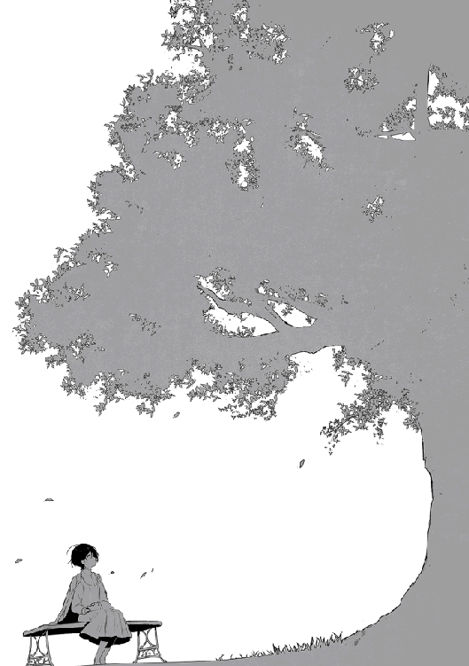
時刻は一六時を過ぎたくらいか。リデルを救い出した後の俺たちは、アデレに紹介された奴隷商人の館に来ていた。
表通りから少し路地を入ったところにある奴隷商人の館は、表から一見するとなんの店だかわからなかった。雰囲気としては職業斡旋所の様な感じだろうか。冒険者ギルドとは雰囲気が違うけど、いつもの冒険者ギルドを知らなければ、ここが冒険者ギルドだと聞いても疑わなかったかもしれない。
マンガや映画にある様に、檻に入れられた奴隷が柵を掴んで恨めしそうにこちらを見ている、なんてことはなかった。というか、誰が奴隷かわからない。
元の世界の日常には奴隷がいなかった。もちろん比喩としての奴隷はいたし、歴史的にも存在した。今でも世界の何処かにはいると思っている。それでも俺の日常の中にはいなかった。それもあって奴隷というと忌避感があるのだが。
ただ、ここに居る限りはそんなことはなかった。奴隷を扱う職業がまるで当たり前の様に存在していて、ここにいると自分の考えが異質だと良くわかる。
この世界では、経済を支える仕組みの一部として奴隷制度が成り立っているのだ。それは受け入れる必要があるだろう。
奴隷には一般奴隷・上級奴隷・犯罪奴隷・戦闘奴隷がいることは聞いていたが、細かく分けると、他にも色々と区別があるようだ。
「お客様、よろしければご案内させて頂きますが」
奴隷商人の一人がリデルに声を掛けてきた。
年下であっても侮ることなく礼儀のある対応をしてくる。まるで銀行員の様だ。
「ええ、お願いします。話は隣のアキトがまとめますので、その様に対応を」
「畏まりました。アキト様、よろしくお願いいたします」
丁寧すぎてむしろ対応しにくい。
奴隷商人は特に太った嫌らしい感じの男......ではなく、どちらかと言えばやせ形で終始笑顔の絶えない男性だった。
「差し支えなければ、どの様な用途の奴隷をお求めかお教え頂けますでしょうか」
用途か、細かく指定した方が良いのだろうか。
「大前提として魔物狩りに参加出来ること。それから歳が余り離れていないこと。やる気があるなら魔物討伐の経験はなくても良い」
後はあれだな、仲間なのだから──
「後は人付き合いでトラブルがなさそうな人がいいな」
「実戦経験がなくてもよろしいのでしたら、価格の方は大分押さえることが出来ます。運び屋として考えておられるのでしたら、男の奴隷をお勧め致しますが」
性別か。そうだよな......俺はリデルの意見を伺う。
「アキトの奴隷だからね。任せるよ」
うーん。魔物と戦うなら普通に考えて男だろうな。でもアデレくらい動ける様に成長してくれるなら、ルイーゼの友達として女性も一人欲しいところだ。
いい加減、宿の部屋を分けたいと思っていたところだし、女の子が増えるなら狭いからとか理由を付けられるな。
「性別に関しては取り敢えず保留で。良い感じの人がいればその人にするよ」
「わかりました。それでは何人か条件に合う者をご用意致しますので、面接室までご案内致します」
案内された部屋には五番と書かれていた。七番まであり、いくつかは扉が閉められている。おそらく使われているのだろう。
面接室は質素に飾り付けられ、テーブルと片側にだけソファーが有った。元の世界なら対面にはテレビでもあるところだが、この世界にテレビはない。ただの壁があるだけだった。
入ってきた入り口とは別に、奥にも扉があるのが目に付く。
「では連れて参りますので、こちらにお掛けになってお待ちください」
奴隷商人が、その奥の扉から出て行く。
俺とリデル、それにモモはソファーに座り、ルイーゼはその横に立つ。
これはリデルに指摘されたことだが、ルイーゼのことは対外的な場ではきちんと奴隷として扱う様にと言われている。横柄な奴隷だと思われても可哀想なので、慣れなくても相応の対応を取る様に心掛けていた。
しばらくして奴隷商人が、俺たちと歳の似通った六人の男を連れてきた。どうやら奴隷は基本的にこの部屋から表には出ない様だ。
なるほど。だからホールの方では奴隷という感じの人が全くいなかったのか。これもイメージ戦略の一つなのだろうか。
連れてこられた男は一人を除きみんな痩せていたが、不健康という程でもない。何故か一人は肥えていた。
「アキト様、条件に合う者を連れて参りました。皆、魔物との戦いも辞さない覚悟でおります。何かお聞きになりたいことがございましたら、直接ご確認頂いて結構です」
脅したということはなさそうだけど、それでも進んで魔物狩りに出たいという雰囲気の男はいない様に見えるが......。
「俺は魔物狩りで三回死に掛けた。四回目がないように仲間を増やそうと思っている。もちろん囮にするという意味じゃない」
男たちがざわつく。
違うと言ったのに、囮という言葉に激しく反応された。言い方を間違っただろうか。なんか、どう言って良いのかわからなくて、事務的に必要事項だけを言ってしまった。
「欲しいのは一緒に戦う仲間であって、囮じゃない。でも、残念ながら安全は保証出来ない。出来ないけど、最大限の努力はする。それでも、是非やりたいと言う人がいれば名乗り出て欲しい」
......あれ、いないの？
「カ、カールです。何でもやります」
一人だけ肥えていた男が名乗りでる。俺はその一人を保留にして、次に女の奴隷を呼んでもらった。
連れてこられたのは四人の女......の子だ。先程はいきなり怖がらせてしまったので、今度はリラックスさせる為に別の方法をとる。
「一人ずつ名前と特技を教えてもらいたい」
「マリーです。文字が読めます。あと、洗濯と料理がいくつか出来ます」
「リリアです。文字が読めるのと、簡単な計算が出来ます」
「ベ、ベルデで、す」
......特技はないのかな。
「マリオンよ。Ｆランクの魔物なら何度か倒したことがあるわ。使える武器は剣だけ。狩りに出るなら私が一番使えるわよ」
驚いたことに黒髪の女の子だった。自分以外に初めて見たな......。
確かに男女合わせて実戦経験があるのは、この子だけになる。選択肢は殆どないといって良いだろう。
ただ、顔や腕に痣があり、トラブルの香りがする。俺が商人の方に目をやると、俺の意図を汲んで直ぐに答える。
「彼女は過去のことを話しませんが、教養も高く品もあり、以前はそれなりの待遇を受けていたと思われます。高ランクの冒険者と討伐依頼に出ましたが失敗し、違約金が払えずに奴隷となりました。容姿も良く生娘ですので、今回ご紹介した中ではお値段が一番高くなっております。ただ訳ありでして、今回はお安くご提供出来ると思います」
今、凄くプライベートなことをさらっと言ったな。
「訳ありの内容を聞いても」
「はい、もちろんです。彼女は少々気性が荒く、以前のお客様にも手が付けられないと戻されてきたばかりでして」
「奴隷紋があるんじゃ？」
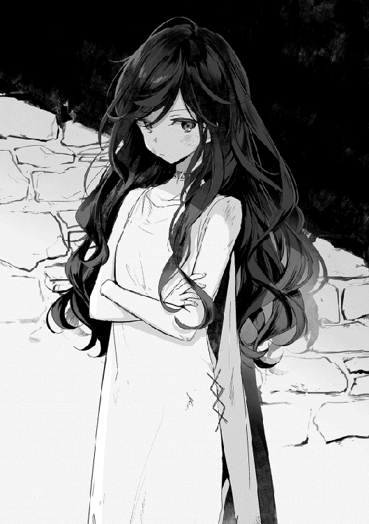
「奴隷紋は必ず記す様にしておりますが、一般奴隷の場合は逆らえば死に至るだけで、逆らえない訳ではないのです」
あれ、そうなのか。勘違いしていたな。
「もちろん主人を手に掛ける様なことは出来ませんし、激しい苦しみの中でそう長く動ける訳でもありませんので害はないのですが、そのまま死んでしまうこともありまして」
なるほど。逆らえば死ぬから従うだけで、死ぬ気なら逆らえるということか。でも、死ぬ気で逆らう理由もそうそうないと思うが。あるとすれば死にたいくらい嫌な命令だということか。
「変なことをしなければ逆らわないわ」
彼女が口を挟む。しかし、それ以上は勝手に話さないよう、奴隷商人が目で示唆する。変なことの内容は気になるが、俺は変なことをする気はないので、そういう意味では大丈夫だろう。
「それで、いくらになる？」
「本来であれば銀貨一二〇枚が相場のところですが、今回は銀貨一一〇枚で提供させて頂きたいと思います」
銀貨一一〇枚。Ｅランクなら一ヶ月分の稼ぎを上回る。とは言え、人一人の値段と思えば余りにも安い気がする。もっとも買って終わりじゃない。食費や宿代、その他必要なものを揃えるといった維持費が出続ける。言わば家族が一人増える訳だからな。
一応トリテアの町へ来てからの稼ぎで、銀貨換算ならば二三〇枚程がパーティー金庫に収まっている。彼女の装備や身の回りのものを揃えると銀貨三〇枚程掛かるだろうが、路銀としては十分に残る。
「彼女用の装備を調えるとそれなりにお金が掛かる。銀貨一一〇枚は出せないな」
実際には出せるが、一度だけ引いてみる。彼女は心底ガッカリした様子を見せるが、先程止められたばかりなので口を挟むことはなかった。
奴隷商人は思案している様だが、あまり良い返事は聞けそうにないので、もう一押ししてみる。
「銀貨一〇〇枚なら出せる」
「......わかりました銀貨一〇〇枚で宜しいでしょう」
奴隷商人はなおも思案していたが、結局俺の提示した金額で折れる。その様子を窺っていた彼女、小さなガッツポーズを取っていた。なんとなく失敗したような気がするのは気のせいだろうか。
「これからも良いお付き合いをさせて頂く為に、ここは勉強させて頂きます。直ぐに手続きをなさいますか？」
「頼みます」
後でリデルに教えられたことだが、マリオンの相場ならば銀貨八〇枚程度、トリテアは相場が高めだとしても銀貨九〇枚くらいらしい。多少流動性もあるし、存外に高いという訳でもないので俺の勉強代とみたようだが。
何が勉強させて頂きます──だ、上手く値引き交渉出来たと思ったのに手のひらで踊らされていたとは。これも無知がいけないんだ。無知は罪だ。
他の女の子は特に残念そうな様子もなく部屋を去り、彼女だけが残された。
「マリオンです、よろしくお願いします」
「こちらこそよろしく」
マリオンの髪は初めこそ黒髪かと思ったが、黒に近い深紅の髪の色をした女の子で、少しだけ癖がある髪は胸の辺りまで伸びていた。歳は一六歳。誕生日によるが、俺より一つ年上だ。背は俺よりいくらか低く一六〇センチ程度か。女の子にしては少し高めだと思うが、すらりとした細身でスタイルは良い。ルイーゼと比べれば胸は小さいが魅力的な形をしている──って、見ているのが本人にバレた。少し気まずい。
かわいい系か美人系かで言えばルイーゼと同じく美人系だろう。すらりとした目は髪と同じ深紅で、すっと引かれた眉と合わせて歳よりは上に見られるんじゃないだろうか。少し日に焼けた肌はルイーゼ程白くはないが、健康的な印象だ。
ルイーゼの時と同じく、手続きはさほど時間が掛からずに終了した。今回の雇い主は俺になっている。
やはり荷物は少なく、荷袋が一つだけの様だ。直ぐにでも身の回りのものが必要になるな。今回はルイーゼがいるから良くしてくれるだろう。
何はともあれ、まずは自己紹介だ。俺たちは奴隷商人の元を出ると、手近なところにある飲食店に入った。
もうすぐ日が暮れる頃合いということもあり、町は狩りから戻った冒険者で活気が出始めていた。これからが一日で一番の喧噪になる。
注文を取りに来た小間使いの少女に、いくつかの料理と飲み物を頼む。それを待つ間、自己紹介をすることにした。
「それじゃ俺たちから先に自己紹介をするよ」
マリオンは初め席には座らず立っていたが、話も出来ないので座ってもらった。どことなくよそよそしいが、その内に慣れるだろう。
片側二人掛けのテーブルで、俺とリデルが同じサイドに、リデルの向かいにルイーゼ、俺の向かいがマリオンだ。そして俺の右、お誕生日席にモモが座る。
「隣がリデル。Ｄランクだ」
Ｄランクと伝えた時にマリオンは意外そうに眉を上げたが、俺も自分がＤランクだとは思えないので、知らなければ似た様な反応をしただろう。
「パーティー『蒼き盾』のリーダーで、魔物との戦いでは先頭で敵の注意を引きつけてくれる盾役になる」
「これからよろしくね、マリオン」
マリオンがキョトンとし、次いで俺に視線を送ってくる。そう言えば交渉は俺がしていたからな。俺がリーダーだと思われていたのかもしれない。
「マリオンの隣がルイーゼ。ランクはＥ。えーっと、マリオンと同じく奴隷になる。魔物との戦いではリデルや俺のサポートがメインだ」
「よろしくお願いします」
ルイーゼは小さくお辞儀をして微笑む。
「そしてこの小さい子がモモ。小さいけど、俺たちには欠かせない仲間だ。冒険者登録はしていないのでランクもない」
モモはちょっと誇らしそうだ。順番で言えば二人目の後輩が出来た感じだろう。
「最後に俺で、名前はアキト。ランクはＤ。使う武器は剣と弓。パーティーでは遊撃をしている。以上だ」
「よ、よろしくお願いします」
マリオンが席を立って挨拶をする。俺はマリオンを座らせて、話を続ける。
「俺たちはリザナン東部都市まで行く予定なんだ。マリオンには道中で俺たちと一緒に鍛錬をし、魔物狩りに付き合ってもらうことになる」
道中の路銀としては今の手持ちだけでギリギリ足りると思うが、グリモアの町を出る時に立てていた皮算用は既に成り立たないと思っていた。本当に移動するだけであれば足りないこともないが、リザナン東部都市の周りには魔巣がない為、着いてからでは稼ぐ手段がなかった。
場合によってはリゼットを連れ出すこともあり得るので、道中ではもう少し稼いでおきたいところだ。
それに、今回の昇級試験でわかったことだが、俺たちは装備にお金を掛けている様で、全然足りていない。命を繋ぐものなのだから本来最優先かつ全力で投資すべきところなのかもしれないが、目的もあって後回しになっている感が否めない。
安全に行くのであれば、慣れてきたトリテアの町で狩りを続けるのが良いけど、もうすぐ俺がこの世界に来てから二ヶ月になる。さすがに少しはリゼットに近づいておきたい。いくら身の安全が保証されているとは言え、数ヶ月も経てば状況も変わるだろう。
今のところマリオンは借りてきた猫の様に大人しい。奴隷商人のところでは結構強気に自分を売り込んでいたけど、こっちが素なのだろうか。
「俺たちはマリオンを銀貨一〇〇枚で買った。だから相応の働きをしてくれたら、その時点でマリオンが望むなら奴隷を解放しても良いと思っている。マリオンには月に銀貨五枚を支払う。それもあわせれば一年掛からずに自由になる道も選べるはずだ」
マリオンは再びキョトンとした表情だ。どの部分に引っ掛かったのか。奴隷解放か、銀貨五枚が少ないとか？
「アキトはマリオンを、ただの奴隷として必要としている訳じゃないんだよ。ゆくゆくは同じ冒険者としての仲間が欲しいんだ。だからアキトはマリオンを奴隷として手に入れたけれど、奴隷として扱うことはないよ。それはルイーゼも同じだ」
「そんな夢みたいな話──」
「直ぐにわかるよ」
リデルの言葉にマリオンは疑心暗鬼の様だ。
人から言われると、なんとなく自分の考えが恥ずかしいのは何故だろう。やはり夢見がちな思考なのだろうか。
「まぁ、実際の手続きは明日になるけど、今日はマリオンの歓迎会だ、好きなものを好きなだけ食べてくれ。食事代は経費で落とすから気にしなくて良い」
経費と言う言葉がぴんとこない様子のマリオンに、ルイーゼが説明をする。初めて聞く資金管理の仕方に驚いている様だ。
普通のパーティーは稼ぎを山分けし、その管理は個人で行うのが当たり前だ。俺は遠慮がちな仲間に装備を買い与える為、苦肉の策として導入した。マリオンにとって馴染みがないのは当然かもしれない。
歓迎会が始まると、モモが俺の膝の上に移動してくる。そしてマリオンに向かってドヤ顔だ。どうやら先輩風を吹かせたいらしい。
ルイーゼがそれを見て片手を口元にあて、笑いを堪えるのに必死になっていた。リデルも珍しく笑っている。マリオンの戸惑った表情も印象的だった。
俺はマリオンに、積極的に話し掛ける。初めは緊張する様子を見せていたが、ちょっとした失敗談やモモがいかに可愛いかを伝えている内、多少は打ち解けたようだ。少しずつ口数が増えてきたことに内心でホッとし、上手くやっていけそうなことにもホッとした。
マリオンの歓迎会を終えた俺たちは宿に戻ってきた。しかし、俺の思惑が早速外れる。相変わらず部屋が空いていないのだ。流石に他の宿に別れて泊まるのも不用心なので、今回は仕方なく同室とした。
ベッドまでは用意出来なかったのでルイーゼとマリオンは同じベッドを使うことになるが、二人とも全然気にしていない様だ。
「柔らかい布団の上で眠れるだけで満足だわ」
「私もです、マリオン」
同世代の女の子の台詞とは思えず心が痛む。これから少しでも待遇を改善していけばいいか。
トリテアの町に来て立てた課題は順調にこなしている。全部が中途半端といった感じではあるが、直ぐに出来ることでもないのでそれは仕方がない。重要なのは解決に向かって進み始めたってことだ。
一つ解決すれば一つ問題が増えるという気もするが、滞るよりはマシだ。しっかりと積み重ねていこう。
明日は鍛錬に旅の準備、マリオンの装備と身の回り品を買い、夜はアデレとお別れ会。トリテアを出る前にやることが一杯あるな。
元の世界にいた頃は、暇つぶしとか言いながらゲームをしていた気がするけど、この世界に来てから全く暇がない。明日は準備をしつつものんびりと過ごそう。
一人でこの世界に来たはずの俺が、四人も仲間を連れてリゼットの前に現れたら驚くだろうな。寂しくて召喚魔法を学んでいたリゼットに、友達の作り方を教えてやらねばなるまい。
朝、目を覚ますと久しぶりに全身が筋肉痛だった。昨日は模擬戦で自分の能力を超えて身体強化を使い頑張ったが、それでも軽くあしらわれて俺だけが試験官を一人も倒せなかった。
リデルは元々の堅牢さに身体強化、敵愾向上、魔法障壁と地味に使える魔法を増やし続け、実戦でも使用可能レベルになっている。
ルイーゼは実戦での使用こそまだ無理としても、初撃に身体強化を使った一撃は、戦いの前に準備が出来るなら有効だとわかった。
ルイーゼの魔力量は既に俺を上回っているので、解呪して精霊魔法を使える様にしてあげたい。そうすれば天恵である神聖魔法も使えるし、白黒魔法を併せ持ったハイブリッドになる......ラスボスかと言わんばかりの能力だな。
そう言えばルイーゼの天恵は回復魔法しかないのだろうか。それだけでも凄いことだが、もし仲間の危機を救えるのならば、条件なども合わせて知っておきたいところだ。
ただ、ルイーゼ自身もそこまで天恵について詳しい訳ではないし、リデルの知識も及ばない。だから詳しい人に聞く必要があるんだが、能力を隠しつつ聞ける人というのは思い付かなかった。
恐らく教会関係者ならわかると思うのだが、ルイーゼは女神アルテアを崇めつつも宗教には興味を示していない。天恵を持っていることがバレた時に、教会から勧誘が続くのは望むところではないだろう。取り敢えずこの件については保留しかなさそうだ。
この世界の朝は早い。東の空が白く霞んで来た頃に動き始め、日が昇りきる頃には殆どの人が活動を開始している。時間でいうと今の季節なら朝の五時くらいだ。
俺はまどろみの中で自己治癒を使い、筋肉痛を治してベッドを降りる。
既に起きていたルイーゼやリデルの動きもどことなくぎこちなかった。特にルイーゼは隠し切れていない、動きが偶に止まったり、ゆっくりになったりとなかなか面白い。俺に見られていると気が付いたルイーゼが顔を赤くして俯く。
朝はいつもルイーゼがお茶を入れてくれる。今はぎこちない動きなりに朝の準備をマリオンに教えていた。俺はマリオンに続きを促し、ルイーゼを呼んで椅子に座らせる。そしてその背後に立ち、両肩に手を添えて白く細いうなじに目を留める──いや違った。
「ルイーゼ、気を楽にして」
いつも鍛錬でしていることだから、ルイーゼは直ぐに何をするのかを悟り魔力を受け入れる準備に入る。俺はそれを確認してから、魔力鍛錬の要領でルイーゼの魔力を導き、自己治癒の手助けを行う。今のところこの方法が使えるのは、手を当てた近辺だけだ。魔力をただ流し込むのではなく制御するとなると、効果を及ぼす範囲が限られる。
肩から背中、そして上腕の筋肉痛を解消してあげたところで終わりとする。足腰に手を当てるのは憚られるし、ルイーゼもきっと望まないだろう。
しかし全身筋肉痛だな......あれ？ 全身ってことは部位強化じゃなくて全体強化を使ったのか。ルイーゼも着実に身体強化を身に付けているな。
背中に手を当てながら考えごとをしていたら、ルイーゼの鼓動が伝わってくるのがわかった。鼓動は早く、いつの間にか白かったうなじも桃色になっていた。それを見た俺も鼓動が早くなりそうだったのでそこまでとする。
「ありがとうございます」
ルイーゼが伏せていた頭をさらに下げる。マリオンは何をしていたのかわかっていない様だ。リデルは少しだけ羨ましそうな目をしていたが、リデルは自分で練習するチャンスだろう。
練習はいつでも出来るが、自己治癒なので怪我をしていないといまいち効果を実感しにくい。滅多に怪我をしないリデルなので、練習のチャンスが少ないのだからこういう時に練習すべきだ。
「練習の効果が感じられればやる気も湧くだろう」
「それは一理あるね」
リデルはお手上げのポーズをした後、瞑想に入る。センスはあるので、そう遠からず使いこなせるようになる。精霊魔法系光属性の回復魔法も練習している様なので、そちらも楽しみだ。
「ごめん、余り得意じゃないの。これから覚えるわ」
「ありがとう、十分だ」
マリオンの入れてくれたお茶は濃かったが、朝なのでそれでも美味しく感じられた。
軽い食事の後はいつもの様に朝の鍛錬だ。鍛錬は六時から始めて一〇時までやっている。
鍛錬のメニューがだんだんと増え、それだけ狩りの時間が短くなる──かと思いきや、ここはグリモアの町と違って門を出れば直ぐに魔物の住むカシュオンの森だ。移動時間が少ないので、狩りに充てられる時間はそれほど変わっていなかった。
むしろ、グリモアの町が日の入りと共に活動を停止するのに比べ、日が落ちてなお活動が活発になるトリテアの町では、時間を有効に使えるだけ出来ることが多かった。
鍛錬のメニューはいつも俺が考えた。最初はストレッチをしながら瞑想し、魔力制御の練習をする。これは二人一組でやりたいところだが、今までは三人だった為にちょっとロスがあった。これからは四人なので、俺が慣れないマリオンをサポートすることでロスが減るだろう。
魔力制御の練習は主に身体強化が中心で、自然と使いこなせる様になるまでは続ける予定だ。身体強化は俺たちが使える魔法の中で、今のところ魔物に対する最も有効な魔法だから、時間を掛けてでも身に付ける。
俺だけに限れば魔弾や魔槍もあるが、リデルやルイーゼは攻撃魔法をまだ使えない。
ルイーゼは魔封印の呪いの影響もあって仕方がないけど、リデルは防御重視との兼ね合いで、防御魔法を優先的に練習している様だ。
ちなみに、寝る前にも魔力を使い切るまで身体強化の練習を欠かさない。魔力総量も体力と同じで、使うことで増えていることが実感出来たからだ。
マリオンも解呪はしていない。奴隷になるくらいだから当たり前かもしれない。
「解呪しなくても使える魔法？ それ、本当なの？」
「ルイーゼが使えるから証明も出来る」
マリオンはルイーゼに視線を送り、ルイーゼはそれに頷いて応える。そして、それを証明するかの様に、庭に置かれたいた水桶──目測五〇キロ程のものを抱え上げて見せた。
マリオンに比べれば頭一つ分程小さいルイーゼが、両手に抱える程の水桶を難なく持ち上げる様子は、そこに魔法が働いていることを信じさせるには十分だった。
「ほ、本当に使えるのね......わたしも使える様になるの？」
「身を入れて鍛錬を続ければきっと」
「やるわ！ お願い教えて！ どうしても魔法を覚えたいの！」
マリオンが一気にパーソナルスペースを突き破って食らい付いてくる。俺は思わず仰け反るようにして距離を取った。マリオンは綺麗なので、そう近付かれるとドギマギしてしまう。ちょっと赤面していないか心配だ。リデルの様に涼しい顔で対応出来ないようでは、イケメンへの道も遠いだろう。
解呪しなくても使える魔法。それを知ったマリオンの喜び様は少し異常とも思えた。魔法が使えないことでトラウマでもあったのだろうか。いずれにしてもマリオンにも教えていくつもりだ。
ストレッチと魔力制御の鍛錬を終えた後は模擬戦だ。模擬戦をする以前は走ることもあったが、模擬戦で十分に動くので、省略している。
模擬戦は基本総当たりで、三人だったので三試合を行っている。これからは四人なので一人一試合増えるが、運動量的には慣れて来たので、丁度頃合いかもしれない。当面はマリオンの様子を見ながら調整していくことにした。
「こんな感じよ」
「思った以上だな、マリオンが来てくれて良かった」
「そ、そう？ 実戦でも頑張るから任せて」
マリオンは自己アピールしていたように冒険者だったことがある為、剣を振るうことに関しては動きが良かった。俺が初めて剣を振った時に比べれば格段に上だろう。
マリオンが前線で近接アタッカーをするようになれば、俺は今まで以上に遊撃として弓なり槍なり魔法でサポートが出来そうだ。
そうすれば、リデルが無理に攻撃に出る必要性が減り、結果として更に防御も準備万端なものとなる。
「ただ、体力はもっと付けた方が良いな」
「あそこじゃ動けなかったから。直ぐに体力も付けるわ」
素振りと軽く俺の相手をしたところで、息が上がっていた。折角だからルイーゼの鍛錬と合わせることにする。ルイーゼが力の続く限り防御を続け、マリオンが力の続く限り打ち込み続ける鍛錬で、俺が最初にルイーゼに対して行っていたやつだ。
ただ打つだけではもったいないので、様子を見ながらアドバイスを行っていく。俺はマリオンにアドバイスを、リデルはルイーゼにアドバイスをすることで、鍛錬に熱くなってしまった。
剣を振る時に手打ちになっていて力が乗っていない、全力で打ち込みすぎて防御された時に隙が大きい、空振りした時に体勢を崩している、疲れてきても倒れるな。
自分に出来ないことを教えるのはやりにくさを感じるが、命に関わってくることなので、知っていることはきちんと教える。マリオンは初日なので多めのアドバイスとなった。
「どうだマリオン、キツいか？」
「......ハァハァ。へ、平気よ」
肩で息をするマリオンに対して、ルイーゼの方が平気そうだ。順調に体力が付いている様で、そろそろ攻撃の手数を増やすのも良いだろう。
「いままで、戦い方を教えてくれる人はいなかったわ。殆どの人は見て覚えろというだけで、そもそも練習をすることもなかったのよ。ましてや教えることに時間を使うのは無駄と考えるのが普通だったわ」
「逆に、今までよりも厳しいかもしれないけどな」
「いいわ。こういう厳しさなら耐える価値があるもの」
マリオンは男前だった。
体を動かす鍛錬が終わった後は、頭を使った鍛錬だ。内容は主に俺とリデルの反省会になる。もちろん昨日の模擬戦についてだ。
リデルが倒した一人は、その切っ掛けを作ったのが、合流したルイーゼだったらしい。ルイーゼが試験官の一人を白線の外に追いやった攻撃は、流石に無視出来なかった様で、リデルの抑えていた試験官の内一人がルイーゼを気にせざるを得ない状況になった。
試験官二人の攻撃を凌ぐのはリデルにも辛かったらしく、ルイーゼが参戦しなければ討ち取られるのも時間の問題だったが、間一髪間に合ったという。
「私はリデル様と合流した後、すぐに戦闘不能にさせられましたのでお役に立てたとは......」
「そんなことはない、来てくれて助かったよ。昨日一番の立役者だと思っている。ルイーゼのおかげで、一瞬だけ背を向けた試験官を戦闘不能に出来たのだからね」
ルイーゼは役に立てたことが嬉しかったのか、リデルの言葉を受けて良い笑顔だ。
それにしても、ルイーゼがリデルと合流するまでは一分と掛かっていない。その間に防御の堅いリデルが追い詰められていたのだから、流石Ｃランクの試験官と言ったところなのだろう。Ｄランクとの間は意外と大きいのかも知れない。
その後は俺が知っている通り、俺が軽くあしらわれ、再びリデルが一対二になった時点で終了だ。
「あの試験官は強かった。力があるとかスピードがあるとかじゃなく、あれが経験というんだろうな。隙がある様に見えて、攻撃したら実は誘われていたとか、明らかな有効打だと思ったのに耐えて反撃をして来る。打つ手がなくなって、それこそ素手で殴り掛かったり蹴り飛ばしたりしたけど、まったく勝てる気がしなかった」
「魔物はそもそも剣で襲ってきたりしないからね。すぐれた冒険者程トリッキーな攻撃に対する適応能力が高いんだね」
確かに魔物の攻撃は突く、蹴る、噛むが中心だな。なんか俺、退化してないか。
「まぁ、アキトの戦いをじっくり見ていた訳じゃないけれど、ちょっと獣という印象はあったね」
「アキト様はお強いと思います」
それって獣的な意味ですよね。
「まぁ、昇級試験は勉強になった。試験官の戦い方は一つの指標になると思ったよ。許されるなら色々と習いたいくらいだ。用事が片付いたらこの町に戻ってくるのも良いな。それ以外でも、暇があれば先々の町で昇級試験を見ておくのも良さそうだ」
模擬戦とは言え冒険者は昇級に向けて必死だ。それなりに実戦に近い意気込みの戦いを見るのは良いことだろう。
鍛錬の最後に、俺たちはいくつかの秘密を持つパーティーであることをマリオンに話す。行動を共にする以上隠しておけないからだ。この秘密については他言無用を約束させている。
秘密の一つはルイーゼが天恵持ちであること。ルイーゼが人の意思に左右されず、自分の判断が通せる様になるまでは、隠すつもりでいることを伝える。
天恵持ちは珍しいが、いない訳じゃない。マリオンはそれほど驚いていなかった。天恵持ちの子供が大人達に翻弄される様子を知っているのか、どちらかと言えば同情的な様子も見せていた。
二つ目の秘密には驚いていた。モモのことだが、マリオンは普通の女の子だと思っていたらしい。まぁ、そう見える様にしているので、作戦が成功しているとも言える。
三つ目は俺の特殊な魔法事情についてだ。これは先の二つ程隠し通すつもりでもないが、わざわざ宣伝する気もない。自分でもどういったことになるのか想像が出来ないのと、この世界の人間でないことがバレた時のリスクを考えると、隠して置いた方が良いだろうと判断した。
これらについて最後に今一度、他言無用であることを伝える。ただし、仲間の命が最優先であることも付け加えた。これらの秘密が命に関わることはないと思うが、明確に伝えたおいた方が判断に迷いが出ないだろう。
「それと、旅の目的は一度言ったが、俺たちはリザナン東部都市を目指している。明日にはこの町を出るつもりだ。そこにある状況から救い出したい子がいるんだ。それが果たされた後は──マリオン、自由だ」
「ほ、本当に良いの？」
「僕も言ったけれど、アキトが必要としているのは仲間であって奴隷じゃないからね。もちろん、その後も行動を共にするのは自由だし、そうして欲しいと思っている。その時は改めて仲間として歓迎するよ」
「リデル様とアキト様はきっとそうしてくれます」
マリオンの目に涙が浮かび、そのルビーの様な瞳が光りを反射して赤く輝く。素直に綺麗だと思った。暗い室内では黒い髪に黒い瞳に見えるが、こうして日の当たる場所に出ると、赤く輝く髪と瞳がとても印象的だ。
「わたし、酷いことを考えていたわ......」
「それじゃ、改めてくれると助かるな」
「奴隷を信用しすぎよ......」
奴隷という身に落ち、一度は命を失う覚悟で命令に背いたくらいだ。直ぐに打ち解け合うのは難しいだろう。まずは目的さえ果たしてくれれば良い。その過程で俺が信用を積み重ねれば良いだけだ。
鍛錬を終えた後は、いつもなら早めの昼食を取って狩りに出るところだが、今日は買い物に出ていた。
リデルはトリテアの町を出る前に防具のメンテナンスを行う為、鍛冶屋に行っている。俺一人で女の子組三人を連れて歩くのは不用心なので、モモはリデルに預かってもらうことにした。
一瞬モモが離れることを嫌がるかと思ったが、そんなことはなかった。精霊は何処にでもいる。それは多くの精霊がいるということではなく、望めばこの世界の何処にでも現れることが出来るという意味で、モモにとって距離は関係のないことだった。
俺とルイーゼそれにマリオンで出向いてきたのは雑貨屋だ。必要なものについては遠慮せずに用意する様にと命令をした。銀貨一〇枚を預けたので使い切るくらいで丁度良いはずだ。
前にルイーゼの買い物に付き合った時は、ルイーゼが遠慮しまくっていたので視線を追って必要そうなものを買っていたが、おかげでいらぬ失敗もした。今回はルイーゼに任せる。
「本当に良いの......？」
「その代わり、狩りでは期待しているぞ」
マリオンは気前の良さに驚いていたが、別に気前が良い訳じゃない。必要なものは最初に用意しておけば効率が良い、ただそれだけだ。必要なものがないという煩わしさや、その都度用意する為に店に寄るのは面倒だ。
とくに女の子の買い物は長くなる。散々妹に引っ張り回された結果として覚えたのは、女の子は物を買うより物を見ることで買い物を楽しむということだ。俺も一緒に楽しめれば良いのだが、欲しいものに真っ直ぐ向かって行き、目的のものだけを買うスタイルの俺には意識改革が必要だ。しかし、今はその必要性を感じていない。
その点、こういうデパート的な店は良く出来ている。あちこち行かなくても必要なものが殆ど一軒で揃うのは楽で良い。
ルイーゼとマリオンが下着のコーナーに消えるのを見て、俺は別のものを探すことにする。
道中は乗り合い馬車での移動になる為、たいしたものは必要ないと思っていたが、この世界では荷馬車が襲われることが多いと感じた。だから、最低限の救護セットに野営セット、それからロープや松明と言ったものは用意しておいた方が良い。使わないにこしたことはないが、用意していないのは心許ない。
俺が野営セットを集めているところで女の子組が戻ってきた。手にはそれぞれ大きめの袋を抱えている。必要なものはきちんと買っている様だ。今日はモモがいないので、一度宿に戻り荷物を置いて、再び町に繰り出す。
今度は鍛冶屋兼装備屋だ。おそらくリデルもいるだろう──と思ったがいなかった。
「ギルム、いるか！」
鉄を打つ音が耳に鋭く響き、その音に体が反応してしまうのに慣れない。
一つ一つの音は周期的だが、複数の人数で打っているせいかそれが不協和音になり、聞いていると不愉快になる。
近所に店を持つ人は大変だな......良く苦情が出ないものだ。
しばらくしてギルムが、店の奥から暖簾を除ける様にして顔を見せる。奥はそのまま鍛冶場になっていて、錆臭い匂いを含んだ熱気が漏れてきた。
「アキトか、リデルなら今はいないぞ」
リデルは防具のメンテナンスに時間が掛かる様で、先に買い物を済ませに出たらしい。リデルの買い物とはアデレへのプレゼントになる。お世話になったので、何か贈ろうと話して決めていた。どうせなら選ぶのはリデルが良いだろう。
「いや、俺はこの子に装備を用意しに来たんだ」
「ふんっ。若いくせに手が早いの」
「仲間だよ。それより、銀貨五〇枚以下で一通り揃えたいんだ。革で補強した服と片手剣を見せてくれ。ついでにメイスも見せてもらえないか」
「アキト様？」
「メイスはルイーゼ用だ。流石に木製のメイスをいつまでも使っているのは良くないからな。重くはなるけど、今なら使いこなせるよ」
「いえ、私たちの装備より、アキト様の装備を調えられた方がよろしいかと」
マリオンもコクコクと頷いている。
「マリオンには早く実戦に慣れてもらいたいから装備は必要だ。ルイーゼのメイスも、身を守る為に今までのでは不足なんだ。マリオンが前に出てくれることで、俺も今までみたいな無茶は減るだろうから、後回しで問題ない」
ルイーゼはなおも心配そうにしているが、お金は有限だ。俺も今の装備で良いとは思っていないが、必要最低限の装備はパーティーとして必要だ。マリオンの装備がないのは本末転倒だし、ルイーゼのメイスも流石に先端くらいは鉄製のものにしたい。
それに、道中は本格的な狩りをする訳じゃない。路銀が心許ないので多少は魔物狩りも必要だけど、マリオンが増えたことで狩り自体も楽になるだろう。パーティーの力を底上げするにはどうしても必要なものだった。
「片手剣ならこの辺じゃの、少し軽めだが体に合わないものを手にしても良いことはないからの」
俺の使っている剣が、刃の部分で六〇センチくらいだ。ギルムが用意したのはそれより短くて五〇センチくらいか。中には三五センチくらいのもある。
扱いきれるなら剣はある程度長い方が良い。そのまま魔物とも間合いの差になるからだ。しかし、木が生い茂っていたり狭い洞窟だったりすると剣の長さが邪魔になるので、短い方が良い。結局、使い分けるのが本当は一番良いのだろう。
「マリオン、盾はあった方が良いか」
「もし選べるならあの剣がいいわ」
マリオンが示したのは刃の長さが七〇センチくらいあるが、片手でも両手でも使える様に柄の部分が長めになっていた。バスタードソードと言う割には刃が短い気もするが。
「あれは折れたのを打ち直したから短くなっておる。買い手が付かなかったが娘さんには丁度良いかもしれぬの」
そういう理由か。マリオンはギムルから受け取った剣を両手で構える様に持ち直し、その握りや重さを確認している。なんとなくマリオンには良さそうに見える。
「使いやすいわ」
「なら武器はそれでいいか」
防具はパンツスタイルとローブスタイルがある。ルイーゼはローブスタイルだが、マリオンは──
「こっちね」
悩むこともなくパンツスタイルを選んだ。マリオンは細身でスタイルが良いから、所々が革で補強された服を着るとピッチリと体のラインが出ていた。
ふむ、なるほど。魅力的で実に良いものだな。マリオンは俺の好みがわかっているじゃないか。
ルイーゼのメイスは俺が選んだ。ルイーゼが俺に選んで欲しいと言うので、そうした。流石に鉄を使うだけあって今のものより若干重くなるが、力が付いてきたので大丈夫だろう。それだけ攻撃力も上がるということだ。
「餞別代わりだ、タダにはできんが全部で銀貨四五枚にまけておこう」
この町を出ることはリデルから聞いていた様だ。俺はありがたく気持ちを受け取り、お礼を言う。今生の別れでもない、この町は魔物狩りをするには快適だし、また会うこともあるだろう。
リデルとモモが来たところでリデルの防具を受け取り、宿に戻る。
マリオンの服はぼろとは言わないが、ただの布としか言えない状況だった。前回は俺の気配りが足らずルイーゼには気の毒なことをしたので、今回は服も買ってある。
俺は女の子組に着替えをお願いする。ルイーゼは薄いピンクのワンピースを選択した。前回俺が買って上げた二着の内の一着で、フリルは少なめだけど、その大人しい感じがまたルイーゼには似合っていた。
マリオンは白いブラウスに麻色のスカートを履いている。なんとなくパンツスタイルじゃないかと思っていたが、予想が外れたな。髪を後ろで一つにまとめた姿は、どこか上品さを感じる。奴隷商も言っていたが、本当に元は良いところのお嬢様だったりしないだろうな。
もちろんモモにも新しい服を用意してある。薄黄色で丈の短いワンピースで、これもお気に入りの一つになっていた。
そんな女の子組に対して俺とリデルも街着に着替えを済ます。
準備が整ったところで、モモの手を引きながら夕暮れのトリテアの町を歩き、いつもと違う少し洒落たお店に足を運んだ。
この店はリデルが見付けておいてくれた。女の子受けしそうなお店で、どちらかと言えばトリテアの町には似合わない気もしたが、それなりにこうした店の需要もあるようだ。
店内はそれなりに人が入っていてたが、落ち着きのある雰囲気だった。アンティークな雰囲気のテーブルに椅子......と言っても、ここじゃ普通なんだが俺にはそう見える家具は、木を削り出して作ったと思われるなかなかのものだった。機械加工じゃないから、同じ様に作られていても違いがあって味がある。
貴族や冒険者が少ない為か、俺の黒髪で影口を言う様な人がないのは助かる。自分はともかくゲストにまで嫌な思いはさせたくないからな。リデルの選択だし、そういうことも含めて店を選んでくれたのだろう。さすが出来る男は格が違った。
俺たちが席に着き程なくして、アデレがウェイターに案内されてやってくる。アデレは赤く裾の長いワンピースを着て登場だ。細身だが胸の周りだけボリュームがあり、女性的な色気を感じる。ぶっちゃけ眼福である。
小柄なルイーゼの方が更に素晴らしいボリューム感なのだが、アデレの様にアピールはしてこないので、もうちょっと頑張ってもらいたいところだ。主に俺の為に。なおマリオンはというと、もう少し成長を見守りたいところだ。
「今日はお招き頂きまして、ありがとうございます」
「こちらこそ、お誘いを受けて頂いて光栄です」
リデルがアデレの椅子を引いて座るのを助ける。もちろん俺はその様子をきちんと学習すべく、リデルの一挙一動を見逃さない。テーブルマナーは学んでおかないと、一緒に行動する人に恥をかかせてしまうからな。
「アデレさん、最初に紹介するよ」
会食の前に、俺は新しい仲間としてマリオンを紹介する。共に旅をする仲間と言う言葉に、共に行くことを言い出さなかったアデレは少し悲しげな表情を浮かべた。
でも、それも一瞬だ。俺が、アデレにそういう思いをさせてしまうかもしれないと考えていたから気が付いた程度だ。
トリテアの町に来て二週間、短いけどそれなりに色々なことがあった。アデレとの話題にも事欠かず、終始楽しく過ごせたと思う。
最後にリデルが、用意していたプレゼントを渡す。
「これは僕たちからアデレさんへのプレゼントです」
リデルの差し出すプレゼントに、アデレは口元に手を当て驚きを表す。そして受け取ったプレゼントを胸に抱いた。
「短い間でしたがとても楽しい日々でした。またトリテアに来ることがあれば会いに伺います」
「私の方こそ、とても楽しい毎日でした。素敵な思い出をありがとうございます」
アデレはそう言うと静かに涙を流し、別れを惜しむ。頃合いなのでリデルにアデレを送ってもらうことにした。
女の子組は俺が護衛して帰路につく。夜祭りのようなこの町の喧騒もしばらくは見納めだな。
俺の手を引いて走り出すモモを追い、露天を見ながら最後の夜を楽しむ。そんな俺たちをルイーゼは優しく見守り、マリオンは自分もまざりたそうにうずうずしていた。
夜は再びリゼットに手紙を書く。
トリテアの町には思ったよりも長居をしてしまったこと。それによって到着が一週間程遅れる見込みだということ。仲間が一人増えたので楽しみにして欲しいこと。冒険者ランクがＤになったこと。ルイーゼも魔法が使える様になったこと。当たり障りもないことを書き、毒大蛇の件は伏せておいた。わざわざ心配させる様なことを書く必要はないだろう。
次にリゼットの様子を窺う。その返事を受けることは出来ないが、それでも書かずにはいられなかった。無事だと信じ、焦らず、確実にリゼットの元へ向かう。俺に出来ることはそれだけだった。
それから、薄れ行く記憶をなぞる様にして、初めて会話をした時のことを書いた。そうすることで俺も再び記憶に焼き付ける。それでも少しずつ失われていく記憶に、焦りがないといえば嘘だ。
物理的な距離は近付いているのに、届かない思いが辛く、その日は眠れなかった。
翌日。手紙を商業ギルド経由で届けてもらう手続きを取る。この後は順調に旅程をこなすだけなので、場合によっては手紙の到着と俺たちの到着は殆ど変わらないかもしれない。そう考えると、ここから先は手紙を書く意味がないとも思えた。それでも記憶を留める為、俺は書き続けよう。
俺たち五人は馬車に乗り、これから五日を掛けて商業都市カナンに向かう。道中は宿場町がある程度で、魔巣も遠いから狩り場もないし魔物の心配もない。久しぶりにゆっくりと考える時間が取れそうだった。
荒れる海の中を一〇人の従者と共に渡り、この国に来てから半年。魔物の住む森の奥から抜け出す為に、従者が一人また一人と数を減らしていった。
ある者はわたしに思いを託し、ある者はその暇さえもなく。
わたしは死ぬことに怯え、何も見ず、何も聞かず、何も言わず、ただ怯えていた。だけどそんな生活も終わりだった。
その恐怖を具現化したかのような巨大な獣は、わたしを守る様にして立つ従者を、あっという間に肉塊へと変えていた。
べっとりとした血飛沫が顔に掛かり、わたしはそれを袖でぬぐうと、力の入らない足を引きずるようにしてその獣から逃げだした。
本当はわかっていた。逃げられる訳がない。守ってくれる従者はもういない。わたしはここで死ぬんだ。
「い、嫌、死にたくない......」
わ、わたしは生きなきゃ。みんなもそう望んでいたし、わたしは生きてするべきことがある。その為には死ねない。だから逃げないと。
そんなわたしを助けてくれたのは、たまたま通りかかった冒険者だった。守ってくれる従者も行き場も失ったわたしは、彼らに縋る。そしてわたしは冒険者になった。
忘れたいのに忘れられない思いが悪夢となって、最悪の目覚めだった。わたしは涙で濡れた頬を隠すように拭い、顔を上げる。
狭い部屋の中には、両側の壁から板がせり出し、三段の簡易ベッドとなっていた。同室なのは歳もばらばらな女たちだけ。それも一週間程度で入れ替わっていく。だけどわたしだけが残り、そんな部屋を見続けていた。
奴隷。依頼を最悪の形で失敗したわたしは、その賠償金を支払うことが出来ずに奴隷となった。でも、わたしはまた生き延びた。
わたしは逃げたんじゃない。みんなが望んだように、生きなければいけないから、その為に必要だったから行動をしただけ。託されたことを、やるべきことをやらないで死ぬことは出来ない。だからどんな屈辱でも耐えて、生き延びる。
そんな思いは、わたしを買った貴族の使いに連れられた先で打ち砕かれた。
わたしを買った男は、その晩にはわたしを寝室へと呼んだ。そこで何が要求されるのかはわかっていた。いや、わかっていなかった。
扉を開けたわたしの目に飛び込んできたのは、床に倒れる全裸の女たちだった。初めは壊れた人形だと、悪趣味な男に不快感が募った。
人形の顔は腫れて酷く歪んでいた。白い肌には、まるでカビでも生えたように青い痣があちこちにあり、汚れている。
「ひっ!?」
人形と思っていたそれが身じろぐのを見て、わたしは戦慄とも恐怖ともわからない感情に胸が押しつけられ、胃液が込み上げる。
意図せず後ずさるわたしに、男は感情のない笑みを見せる。
「あの男はわたしの趣味を良く知っている。お前はわたしのコレクションの中で、最も美しいものとなるだろう」
コレクションという言葉にわたしは人形と思ったそれを今一度見回す。それは確かに呼吸をし、熱を持った人間だった。
意識が遠のくのを必死に拒絶する。今意識を失えば、自分もそこに加わる。そんな恐怖だけがわたしの意識を支えていた。
死にたくない。でもあそこに加わるのも嫌。そんな思いが男の指示言語を拒絶し、それによって発動した奴隷紋の戒めがわたしの首を締め上げた。わたしはその苦しさに暴れ、時には殴られて気を失う。
そんな夜を何度も過ごした後、わたしは連れられてきた奴隷の女の子と入れ替わるように、またこの部屋へと戻っていた。
わたしが抵抗を見せ続けたことが功を奏したのか、新しい子が来たからわたしに興味を失ったのかはわからない。でも、わたしはまた生き延びた。それが自分の意思によるものなのか、何かの呪いなのかすらわからなくなっていた。
そんなわたしに、見慣れた奴隷商人からの呼び出しがあったのは実に二週間ぶりだった。
一度買われた先で命令に抵抗し、戻されてからは初めての呼び出しになる。
買い手が付かなければ、どんどん価値を下げられる。価値が下がれば、さらに品の悪い買い手に捕まる。一度出戻りしているわたしには碌な買い手が付かない可能性も高いから、なんとしてもチャンスは逃したくなかった。
でも、買い手の要求は魔物狩りに参加出来る歳の近い男女という話だ。危険な買い手だと思った。奴隷を魔物狩りに連れて行くというのは、囮にされる可能性がある。
歳が近いというのもこの場合は安心材料にならない。奴隷が買える程度にはお金があるにしても、その若さでは実力の程はたかが知れているからだ。見栄を張って無理な魔物に挑み、殺される未来が濃厚だった。
でも、もし主人だけが魔物に殺されたなら、一般奴隷のわたしは奴隷の身分から解放される。リスクもあるけれど、チャンスでもあった。
わたし以外にも同じように考えたのか、三人の奴隷が名乗りを上げていた。自分で言うのも何だけれど、とても魔物狩りが出来るとは思えない子たちばかりだ。多分魔物を目にしただけで動けなくなると思う。
別室の男がどうかはわからないけれど、この中から選ばれるとしたらわたしである可能性が高いと思った。
面接室には二人の男と、二人の女の子がいた。想像していた以上に若い。金髪で顔の良い男は、その佇まいからも貴族であると思えた。貴族の道楽として魔物狩りをするのであれば、命の危険はないかもしれない。
でも、交渉を始めたのは黒い髪の男の方だった。おそらくわたしよりも歳下だと思う。もしかして金髪の男は魔物狩りに出ないのだろうか。だとしたら狩りに出ればわたしが率先して戦うことになるのだろうか。また、囮という言葉が思い浮かんだ。
もっとも、自信がないならそんな無茶な魔物と戦おうとはしないかもしれない。他に女の子もいるから変なこともされない可能性が高い。人の良さそうなこの男なら、そのうち上手く言って奴隷から解放されるのも簡単とも思えた。
それに、私にはどうしてもやらなくてはいけないことがある。その為に生き延びたのだから。今は奴隷の身分だとしても、直ぐに解放されてみせるわ。そして必ず帰る、あの場所に。
わたしはこれがチャンスだと思うことにした。冒険者として魔物を討伐したことがあると告げる。これで他の三人を選ぶ理由はないだろう。
目の前の男はわたしの顔や体を見て顔を顰めた。
なによ、好みじゃないっていうの。貧相ななりで悪かったわね。奴隷商人もわたしを売る気はあるのかしら。なにも前の主のところで抵抗したことまで言わなくてもいいじゃない。だいたいあの男が悪いのよ。わたしだって──
「変なことをしなければ逆らわないわ」
わたしが口を挟むと、奴隷商人が冷たい目で窘めてきた。でも構うものですか。わたしは自分をこの男に売りたいのよ。思った通り男はわたしの値段を聞いてくる、上手くいきそうね。
でも甘かった、銀貨一一〇枚と聞いて出せないと言う。
銀貨一一〇枚よ、この男に出せる訳ないわ。金髪の貴族様はなんで見ているだけなのかしら。
それにしても前は銀貨九〇枚だったじゃない、よりにもよってなんでこの男に対して値段を上げるのよ。
あぁ、でも良かった。奴隷商人が銀貨一〇枚安くしてくれたことでわたしを買ってもらえたわ。
洒落たお店に入る新しい主に続いて、わたしは入っていいのか悩んだけれど、女の子の方が入店を進めてくれた。ちらりと首元に見えたのは奴隷紋だった。この子も奴隷だったのね。だったらわたしも入っていいのかな？
それにしても主はもう奴隷を用意しているのね。そうは見えなくても貴族なのかしら。黒髪だし違うわよね。まさかこの歳で好色家だったりするの？
テーブルに付いたけれど、さすがに席には座れない。一応主の後ろに控えて立つ──つもりだったのに、同じテーブルに着かされた。奴隷の扱いを少し勘違いしているみたい。
新しい主──アキト様が一通り紹介をしてくれた。わたしは驚いたわ。アキト様のパーティーは想像以上に冒険者ランクが高かった。
リデル様とアキト様はＤランク......って、わたしより歳下の子がありえないわ。何かの間違いじゃないの？
それに一緒にいるルイーゼもＥランクだとか。さすがにもう一人の小さな子は冒険者登録すらしていないみたいだけど。
もしかしてアキト様は将来有望なのかしら。だとしたら頑張って稼げる冒険者になってもらった方が良いかもね。
アキト様はわたしに鍛錬をし、共に魔物を倒して欲しいと言ってきた。魔物を倒すのはいいわ、初めからそのつもりだし。でも鍛錬？
奴隷に鍛錬してどうするの。前の主人も、その前の仲間もわたしに命令はしても何かを教えようとしたことはなかったわ。
わたしが意味を考えていると、アキト様は更にわたしを驚かせる。銀貨一〇〇枚相応の働きをすればわたしを奴隷から解放すると。それどころか毎月銀貨五枚を貯めて二年くらいで自由になる道もあると。
わたしはアキト様が、無理な魔物と戦って死んだら自由になれると思っていた。アキト様は甘すぎる。奴隷にそんな条件を出してなんの得があるの？ ただ命令すればいいだけなのに、死ぬまで働けと。
本当に解放されると信じていいのだろうか。そんな話を聞いてちょっとだけ放心してしまったわたしに、アキト様は続けて言ったわ。奴隷として扱うことはない、仲間になって欲しいと。
「そんな夢みたいな話──」
思わず口にしていた。そんな話を信じて傷つきたくなかった。酷いことを考えたわたしは、アキト様に優しくされたくなかった。むしろ恨みを持たれる方が楽だった。
そしてわたしの歓迎会だと言って、久しく食べたことがなかった料理がテーブルに並べられる。どれも美味しいものだった。きっと安くはない。
このパーティーでは稼ぎを経費？ とかいう形で使うみたい。わたしには良くわからないけれど、パーティーで稼いだお金はパーティーのものという意味みたい。なんか変わっているわ。わたしがパーティーに入ったなら、わたしが使ってもいいのかしら。奴隷に使われてしまったら終わりじゃない。
食事も終わり連れて来られたのは宿だ。同じ部屋で休ませてくれるみたい。何から何まで変わっているわ。ここまで奴隷にお金を使ってどうするの。同じ部屋ってことはやっぱり変なことをされるのかしら。
翌日。構えていたけれど、変なことはされなかった。
このパーティーでは毎朝鍛錬を行うみたい。わたしは驚いてばかりだけれど、今日も朝から驚いたわ。
アキト様もリデル様もルイーゼもみんな魔法が使えるですって。ありえないわ。まだ魔術師という程のレベルじゃないと言っているけれど、それでも魔法が使えるだけで凄いことなのに。それが三人共......ありえないわ。そして更にありえないことをアキト様が言った。
「解呪しなくても使える魔法がある」
ひたすら望んでいた力だった。わたしは解呪する為に、正確には戦える力を手に入れる為に、生きながらえてきたのだから。それが、解呪しなくても使える魔法があるなんって......。
アキト様はそれをわたしにも教えてくれると言った。歓喜した。望んで止まない力で、帰る為に必要な力。わたしはそれを必ず手に入れてみせる。
その後はルイーゼと戦うことになった。戦うと言っても刃を丸めた木製の剣を使う。アキト様は頭以外なら本気で打ち込んで良いと言うけれど、本気でルイーゼに？ 怪我をさせないかしら？
余計な心配だった。ルイーゼは防御だけで、攻撃してくる訳でもないのに、わたしはルイーゼに押されていた。ルイーゼはわたしの攻撃を盾で打ち返してくる。打ち込む度にわたしの方がバランスを崩して、攻撃をしているのかされているのかわからなくなる。
Ｅランクの冒険者ってそんなに強いの？ アキト様はもっと強いの？
結局ルイーゼは軽く息を切らせたくらいで、わたしは腕を上げられなくなった。わたし、本当は何も出来ないの？ どうしよう、これじゃ魔物と戦えない、また戻されてしまう。
その後はアキト様とリデル様の模擬戦を見学した。Ｄランク冒険者くらいなら直ぐになれると思っていたけれど、そんな思いは簡単に砕けて消えたわ。
もう、何をしているのかもわからなかった。動きが早いだけじゃなくて、おかしな動きが多くて目がついていかない。フェイントという技らしいのだけれど、説明されてもさっぱりだったわ。
それに、たまにリデル様の剣や盾が何もないのに弾かれた様な動きをするのはなぜ？ たまに足まで滑らせているし、わざと隙を作っているの？
不思議そうなわたしにルイーゼが説明してくれた。あれは、アキト様が魔法で剣や盾を弾いているのだと。
魔法と言っても、わたしにはそれらしい効果が見えない。続けて説明を聞くと、アキト様の魔法は目に見えないのが特徴だって。昨日からわたしは驚くか呆れるかばかりね。
鍛錬の終わった後、わたしはアキト様に声を掛けられ、言われるままに椅子に座る。
アキト様は少し顔に触るけれど、驚かないでと言う。そんなこと言われただけで驚くわよ。わたしは自然とルイーゼに助けを求めていた。でも、ルイーゼもにこやかに大丈夫ですからと言うだけだ。
何が大丈夫なのよ！ わたしは覚悟を決める。我慢出来なければまた暴れよう。
アキト様の手がわたしの頬に触れる。ぞっとする程ではないけど、いい感じもしない。何をされるのかわからなくて不安が募る。早く終わって欲しい。
そう思った後、アキト様の触れる頬のあたり、殴られて少し痣になっていたところが熱を帯びた様な暖かさに満たされる。悪い感じじゃなかった。どちらかと言えばジーンと来る温かみで、痣の痛みも癒やされ......え、これ魔法？
続けてわたしの腕を取り、やはり蹴られて痣になっていたところに手を当てる。先程と同じ様な心地良い熱っぽさを感じてしばらく、腕の痣は消えて痛みがなくなっていた。
信じられない、なんてことするのよ！
奴隷に回復魔法を使うなんて。それも放っておけば治るような怪我なのに。そんな魔力の無駄遣いをするくらいなら、その辺の怪我人を捕まえてお金をふんだくればいいのに、どんなお人好しよ......。
銀貨一〇〇枚も払って、自分たちよりランクも下の奴隷を買って、仲間として扱うと言ったり、いずれは自由にすると言ったり、月に報酬を払うと言ったり、もう訳がわからないわ。
誰よ、こんなお人好しが死んだらと思ったのは。最高のお人好しじゃない。
「治すのが遅れて悪かったな」
いつの間にか目から溢れ出た涙に、アキト様は動揺していた。ふふっ、いい気味だわ。
トリテアの町を出て二日。季節は春も終わり、夏というには少し早い時期。そう、エルドリア王国には四季があった。ただ、その寒暖の差は元の世界程大きくはない。冬でも気温が一〇度以下になることは少ないし、一部を除き夏でも三〇度以上になることも少ない。それでも、季節の移り変わりを感じられるくらいの変化はあった。
俺がこの世界に来た時は、丁度暖かくなり始めた時期で夜は冷えた。でも今は薄着でも平気だ。これからは次第に暑さも感じる様になっていくのだろう。
梅雨はない代わりに、一時的に雷雨の様な激しい雨が降ることがある。温帯性と熱帯性の混ざった様な気候だった。
旅の方は昨日そして今日、ともに天気が良く道中は実に快適だ。暖かな日差しと涼しい風が心地良く、それが睡眠を誘い、モモは隣で俺に寄り掛かって寝ている。精霊も寝るんだなと今更ながら疑問に思った。
この街道はもうしばらく進むと森に入り、その先の山岳地帯まで続く。良く整備された街道は馬車の揺れも少ない為か、同じ馬車に乗る商人の夫婦と世間話も弾んだ。気さくな夫婦で、これから向かう商業都市カナンについても詳しかった。
商業都市カナンは人口およそ二〇万人が住み、エルドリア王国の商業都市としては最大規模らしい。国の東西南北を結ぶ要所にあるこの都市は、流通量も第一位の規模を誇るとか。
「それだけの場所にお店を構えるとか凄いな」
「ええ、簡単ではありませんでしたが、これで子供に残すものが出来ました」
その商業都市カナンに店を構える商人の夫婦は少し鼻が高い様だ。大きな都市に店を構えるというのは、それだけでステータスなのだろう。俺もいつか残せるものが出来るだろうか。
気が付くと俺はこの世界で生きていくことを自然に考えていた。もちろんリゼットと共に異世界転移魔法を完成させ、元の世界には戻る。だけど、きっとまたこの世界に戻ってくる。そんな気がした。
トリテアの町と商業都市カナンを結ぶこの街道は、いくつかの森と山を越える。その道中には盗賊も出やすく、この乗合馬車には四人の護衛が付いていた。乗合馬車自体は五台編成なので、二〇人の護衛が付くことになる。さすがにこれだけの護衛がいて襲撃してくる盗賊もいない。
この隊列には乗合馬車以外に荷馬車が七台連なっている。そちらには護衛が付いていない。いざとなれば荷馬車を囮に乗合馬車の方は逃げるのかもしれない。命あっての物種という言葉もある。
その場合、荷馬車の御者がどの様に扱われるのかが不明だが、それに俺が口を出すのもおかしな話だろう。ちらっと見た感じでは、荷馬車を操車しているのは奴隷と思しき風体の男だった。本人が納得の上とは思えないが......だからこそ奴隷を使っているとも言えるのか。
この街道は主要道路なだけあり護衛以外にも定期巡回の民兵だろうか、見廻りをする兵士の姿を見掛ける。これだけ厳重に思えても、盗賊の数は一向に減らないと商人の夫婦が嘆いていた。
ハイリスク・ハイリターンなのかもしれない。小さく何度もリスクを犯すより、大きくても一度のリスクで済むのであれば、短慮な盗賊が集まってくるのも不思議はない。
俺たちも一応襲撃への備えはしておく。あくまでも気持ちの問題だ。俺は実際に人を目の前にして剣を向けることは出来ないと思っている。リデルは騎士を目指しているし、いざとなれば人と剣を交えることも覚悟があると思えた。ルイーゼはどうだろうか。俺のイメージとしてはやはり人と争うのは抵抗がありそうだ。でも、模擬戦の時は本気の一撃を繰り出すのに迷いがなかった様にも思える。マリオンは最初に明言していた。魔物でも人でも必要なら戦うと。
俺は元の世界の常識で判断してしまうことが多いけど、この世界では赤の他人に善意を期待しないのが常識だ。性悪説とまでは言わないが、魔人族や魔物といった脅威が身近に存在することで、生への認識が俺より強いと感じる。俺が平和ボケとも言えるが。
この商人の夫婦も平和に移動している間は良い人たちだが、自分の命が掛かった時には、俺たちを見捨てるくらいの裏表はあるだろう。そして俺も、危険に巻き込むと思っても、いざとなれば商人の夫婦に助けを求めるかもしれない。ある意味お互い様だ。
昼の休憩を挟んでから小一時間程が過ぎたところで、乗合馬車の動きが止まった。それに合わせて護衛の一人が前方の様子を見に行く。
「こんなところに何かあるのか？」
俺は商人の夫婦に問い掛ける。場合によっては武器の用意も必要だった。
「いいえ。この先の山岳地帯を抜ければ今日の宿場町なのですが。落石でもあったのでしょうか」
嫌な感じだ。
「リデル」
「そうだね、襲撃に備えておこう」
商人の夫婦が襲撃という言葉を聞いて動揺するが、考え過ぎなら後で謝ればいい。実際に襲撃されることに比べれば、謝って済むならたいしたことじゃない。
俺たちは馬車を降りて先の様子を伺う。すでに俺たち以外にも馬車を降りている客は多かった。それぞれが護衛に何事があったのか、と詰めかけている。
その様子を見ていると、俺たちの馬車に付いていた護衛が戻ってきた。
「いつもなら山岳地帯に入る前に巡回中の民兵とすれ違うんだが、今日は遅れているのかまだ来ていないんだ。俺たちは民兵が山岳地帯に異常がないことを確認してからこの山岳地帯に入る決まりがある」
なるほど。理由としては妥当だった。でも、そうは思わない人もいる様だ。
特にこの乗合馬車には商人が多かった。商人は一日遅れればそれだけ商機を失う。早く着くならいうことはないが、遅れるとなれば話は別なのだろう。
同席した商人の夫婦も言葉は荒くないが、遅れることで発生する損害には顔を顰めていた。今回の仕入れにお金を借りているらしく、返金が遅れれば利子が発生し、最悪利益が消えてしまうことになる。
借金してまでと思うが、借りることで出来ないことが出来る様になるのだから、借金そのものは悪いことではない。問題は返せなかった時のリスクが、得られる利益に見合うかどうかだ。一度の商機を失ったくらいで奴隷落ちでは、リスクが高すぎる。この世界でお金が返せないということは、すなわち奴隷に落ちるということだった。
護衛たちは「遅れた損害を補償出来るのか」と言う大勢の声に負ける形となった。護衛も商人ギルドからの派遣なので、商人の声には逆らえないのだろう。それに事実、ただ遅れているだけの可能性も高い。
俺たちは念の為、山岳地帯を越えるまでは警戒を解かず、万全の体制で備えることにした。
結局、当初の懸念は懸念のまま過ぎ去ろうかと思われた頃。山岳地帯の終盤に入ったところで、前方と後方で同時に喧騒が起きた。
道が狭く、高くはないが両脇が切り立った崖の為、馬車がすれ違うのも一苦労な位置だった。素人でも狙うなら最適と考える場所だ。
「馬車を止めずに全力で走り抜けろ！ 荷物は諦めるんだ！」
護衛の一人が操車に指示を出す。
商人の夫婦が荷物を失うことに対して非難の声を上げるが、護衛の第一優先は人命の様で、大切な荷物は手持ちだけの俺たちには助かる話だ。
しかし、馬車は走り出すどころか止まってしまう。やはり前の馬車に乗る商人のうち数人が、荷物を捨てることに反対している様だ。その為に道がふさがり、後ろに続く馬車が進めない状況になっていた。
何の為の護衛だとか荷物は絶対に置いていかないとか言っているが、その先の崖の上には見えるだけで二〇人近い盗賊が、弓や剣を構えて控えていた。
「リデル!?」
「後ろも塞がれている！」
後ろも前程ではないが、崖の上に一〇人近い盗賊がいる様に見えた。逃げるにしても、下を通り抜けるだけでさえ無傷でいられるとは思えない。
「アキト様」
ルイーゼが不安そうに俺の袖を掴む。マリオンもしきりに周りを気にし、震える体を自分の腕で押さえていた。
「い......いや、死にたくない......」
俺だってこんなところで死ぬ訳にはいかない......死ぬ？ 同じ人に殺されて死ぬのか？
マリオンが溢した言葉を聞いて死を現実として認識すると、急に気持ちが悪くなった。怯えるルイーゼや震えるマリオンがいなければ、俺の方こそ動けなかっただろう。
「マリオン!?」
突然走り出すマリオンに唖然とし、それでもなんとか追い掛け、その腕を取る。予想より力強い抵抗に、思わず力を込める。
一瞬マリオンの顔が苦痛に歪んだ。痣くらいは付くかも知れないが、それでも今はその手を放せない。
「いやっ！ 放して！」
「落ち着け、マリオン！」
普段は大人っぽさも見て取れるマリオンだったが、今は必死の形相でこの場を逃げだそうとしていた。その変わりように、マリオンの持つトラウマか何かが垣間見えた。
もちろん逃げるのは俺も賛成だ。だが、単独で逃げれば間違いなく狙われる。
「お願い、わたしはまだやることがあるの。だから逃げないと！」
マリオンが剣を抜く。その剣は迷うように俺に向いた。
本来なら奴隷には指示言語を使い、その行動に制約を付けるのが普通だ。だけど俺はルイーゼにもマリオンにも制約は付けていなかった。人の心を縛り付けるその行為を、どうしても受け入れられなかった。
「マリオン！」
「マリオン!?」
急変に気付き追い付いてきたリデルとルイーゼが、その状況を見て声を上げる。
俺はマリオンが自分で抜いた剣に戸惑っている隙に、その手を取り、抱き寄せる。
「あっ!?」
藻掻いて抜け出そうとするマリオンを押さえ込み、自己治癒を掛ける。確信があった訳じゃないが、自己治癒には精神を落ち着かせる効果も感じ取れた。自分で使う時もルイーゼに使う時も、非常にリラックスするから多分間違いではないだろう。
しばらくそうしていると、マリオンは抵抗を止め、脱力するように地面に膝を突いた。
「わ、わたし......ごめんな、さい。ごめんなさい」
「いいんだ」
「マリオン......怖いのは私も一緒です」
ルイーゼがマリオンの横に膝を突き、その頭を抱え込む。ルイーゼの腕もまた、震えていた。
「いよいよ無事に乗り切らないといけないね」
「俺だってこんなところで死にたくない」
いずれにしても馬車は反転出来ない。全員で一気に走り抜けるのが、一番被害を小さく押さえる状況なのは素人目でもわかるが、すでに止まってしまった馬車が動き出すとなれば話は別だ。ましてや先頭が動かない状況では袋小路としか言いようがない。
最悪、男は死ぬだけかも知れない。でもルイーゼとマリオンがそれで済むとは思えなかった。俺にとっては、命や積み荷を取る商人たちより仲間の方が大切だ。後で後ろ指をさされようと、ここは逃げの一択しかない。
だが、リデルはどうだ？ 魔人族に襲われた時も、商人を助ける選択をしていた。あの時は勝機があると判断してのことだったが、今は人数的にも俺たちだけでどうにか出来る問題じゃない。
護衛以外にも馬車に乗っていた冒険者はいるが、俺たちも含めて冒険者はあくまでも魔物を相手に戦うことに長けているだけだ。俺がそうであるように、人を相手にするとなれば同じようにはいかないと思えた。それはトリテアでの昇級試験や魔人族との戦いで嫌と言う程味わっている。
人は魔物と比べればはるかに知的で狡猾だ。力や体力の面で魔物に劣っていようと、技術と知恵でその差を埋めてくる。卓越した者が数人いるだけで組織としての力が上がる。そして何より、盗賊には人を殺めることも厭わない覚悟がある。
俺たち──少なくても俺にはなかった。護衛にはさすがにあると思いたい。
護衛の判断は「すぐに逃げろ」と言うことだった。俺もそれには賛成だ。素人目に見ても、盗賊は完全にこちらを無力化する陣形を既に作り上げている。
商人たちは、前方の盗賊の人数が護衛の人数と変わらないことで強気の様だ。後ろの盗賊は数に入っていないのか。仮に数が同じならそれだけ損害も大きいし、地の利は相手にある。ここで攻めてきたのだって勝機があってのことだろう。
だから、このままだと一方的に崩れる可能性だってある。それに、前後を抑えただけで襲ってこないのも不気味だ。
この程度のことなら対人戦ゲームをしている子供でもわかりそうだが、実際の戦いに関して俺は素人だ。正しい判断が出来るとも思えないので、俺たちは護衛の指示を待つ。
「俺は状況的に勝てないと思う」
「勝てないだろうね」
素直に自分の感想を言う。それに答えるリデルも同じ判断の様だ。
「戦いたい人たちには戦ってもらって、俺たちは逃げるというのは非人道的だと思うか」
どことなくリデルは逃げずにみんなと戦う選択を取る気がしたが──
「僕たちは戦いになる様なら逃げる、と素直に話そう」
なるほど。黙って逃げるのは非人道的でも、きちんと言えば逃げることになっても、それは意見の食い違いか。
「よし、俺が言う」
パーティーのリーダーはリデルだ。リデルが言うべきところかもしれないけど、これが変に捻じ曲げられてリデルの出世に響く可能性があるなら、避けられることは避けておこう。
「いや、僕が話してくるよ」
と思ったところで、リデルが出ていく。リデルが話すと言うなら任せるだけだ。何でもかんでも俺の黒髪のせいにされても困るが、不安が貯まると些細なことに言い掛かりを付けたくなるかもしれない。
もっとも、ここにいる冒険者は大丈夫そうだ。おそらく貴族に連なる冒険者はいないのだろう。
リデルはまず周りの冒険者に声を掛けた。意思の確認をしている様だ。聞こえてくる限り俺たちと同じで、逃げられるなら逃げる選択をしている。こういう時、身軽な冒険者は後ろ髪を引かれることがないだけ楽に判断が出来た。
他の冒険者の意見を確認したリデルは、未だ揉めている商人と護衛隊長の元に向かう。結局、冒険者勢が護衛隊を支持したことで商隊の人たちも諦めた様だ。
各々ががっくりと肩を落としたり天を仰いだりしている。しかし、状況はすでに逃げられる機会を逃していた。
「魔物だ！」
盗賊の動きを見守っていた護衛の一人が、通路の先から現れた蟻の様な──いや、そのまま大きい蟻だな。その大蟻が三匹向かってくるのを指さしながら叫ぶ。
「なぜこんなところに魔物が!?」
護衛隊長らしい男が驚きの声を上げる。
盗賊たちが、切り立った丘の上にいてすぐに攻めて来なかったのは、この状況がわかっていたからだろう。動揺した護衛たちが我先にとこちらに向かって走ってくる。先程までは盗賊を蹴散らせと喚いていた商人たちも一緒だ。
「Ｅランクの魔物だ！ きちんと陣形を組めばどうにでもなる！ ここに集まれ！」
さすがに護衛隊長は状況を判断してすぐに指示を出すが、これまで静観していた盗賊たちから矢が放たれ始めると、状況は混乱する一方だった。
前方からは魔物が迫り、頭上からは矢が降る。数人の護衛がその矢に射られて倒れると、護衛はあっけない程簡単に陣形を崩し、我先にと逃げ出す。すでに戦意も失われていた。
「リデル戻れ！」
魔物だけなら何とかなったかもしれない、でも頭上から矢が降り注ぐ状況で戦うのは無理だ。幸いにして馬車が道を塞ぎ、大蟻もすぐには襲って来られないだろう。
仮に盗賊の作戦通り後ろに追い立てられているとしても、前に逃げられない以上は後ろを抜くしかない。
すでに商人の夫婦も後ろに逃げていた。やはり命が掛かっているとなれば商品どころではないよな。
「ルイーゼ！ マリオン！ 俺の側から離れるな！」
返事をする余裕もなく頷いて答える二人が、しっかりと付いてくることを確認しながら、俺たちも逃げる商人達と一緒に後方へと向かう。
予想通り大蟻は、馬車に繋がれ逃げることも出来ずに暴れている馬で、足止めを食らっていた。
その際に見えたが、前の盗賊はなぜか追って攻撃をしてこない。商人や護衛が逃げ出すのをただ見ているだけだ。
「アキト、まだ何かありそうだ！」
リデルの言葉に頷く。
この先は駆け抜けても、一時間程は同じ様に両脇が切り立った岩肌の道が続く。それを抜ければ森に出るが、普段から体を動かしている冒険者以外にそこまで走り続けられるか？
「疲れたところを狙われるんじゃないか!?」
走り疲れ、縦に伸びたところを各個撃破することで被害を最小限に抑える。単純だがゲームでもよく使われる有効な手だ。
ただ、今の状況で恐怖に苛まれた人々に止まれと言っても、簡単には止まらないだろう。
リデルが周りの冒険者に声を掛け、今の状況を伝える。やはり不審に思っていたらしく、こちらの考えに納得がいったようだ。こういう時の冒険者は生存本能なのかまとまりが良かった。
でも、そんな声を無視して走り去る商人に護衛もいた。俺たちの考えがあっているとは限らない、止めるにもしても責任が持てなかったので、彼らには自分たちの考えに任せた。
俺たちは、同じ乗合馬車の隊列にいた一二人の冒険者と纏まり、警戒態勢を取りながら、十分に応戦出来るだけの体力を残しつつ移動することにした。途中独走していた護衛や商人の内、数人を加えてその数は二四人に増えている。護衛隊長も一緒だ。
しばらくそのまま移動したところで、前方から一人の護衛が走ってきた。体の半分をどす黒い赤に染めている。怪我ではなく返り血の様だ。本人は疲れているものの大きな怪我はない。
「どうした？ 何があった!?」
「無、無理だ、みんな死んじまった」
護衛隊長の言葉に、一人戻ってきた護衛が答える。
無理と言われても籠城も出来ない場所では進む以外に方法がなかった。待てば助けが来るとわかっているならここで待つのも手だが、盗賊は念入りに作戦を立てている。すぐに助けが来る様では荷物の回収も出来ないのだから、その可能性は低いだろう。
一応リデルが他の冒険者に意見を問うが、やはり助けが来るとは思えないという判断だ。俺たちは再び歩みを進め、逃げ戻ってきた護衛が言う襲撃された地点に来た。
そこにはあるはずの死体がなかった。しかし流された血の跡までは隠す気もない様だ。死体を隠した理由は不明だが、想像はついた。あの魔物は盗賊が捕らえていた魔物だろう。捕らえていたなら餌となる何かが必要だ。
俺たちはいっそう注意を払い、その場を進む。確かに盗賊はいる。岩場の影から、丘の上から、道の先からそれぞれ視線というか殺気というか、何かがいて虎視眈々と機会を待っているのを感じる。
「アキト様」
ルイーゼの声に不安の色が強い。気休めの言葉も思いつかなかった。だから黙ってその手を取り、俺の背後に誘導する。
マリオンは剣を胸に抱き、震える体を何とか収めようとしていた。
「マリオン、俺から離れるな」
「う、うん」
頷くマリオンを確認し、盗賊の動向に細心の注意を払う。
盗賊たちはまだ手を出してこない。俺たちも挑発する様なことはしない。ゆっくりと、しかし確実に山岳地帯を抜けていく。
岩から岩に身を隠す様に移動する盗賊も、二五人できっちりと陣形を組んで移動する俺たちを見て、簡単には手が出せないのだろう。
もしかしたら、後ろから応援が来るのを待っているのかもしれないが、魔物が出てから逃げ出すまでの時間は、盗賊たちの予想以上に早かったのかもしれない。増援の盗賊も魔物もまだ後ろから追い付いてくる気配はない。
あるいは既に魔物を排除して、荷物を運び出している可能性もある。いくらタイミングを見計らったからといって、あれだけの荷物を運び出す以上はそれなりに時間が掛かるだろう。
盗賊たちが襲ってこない理由、後ろから追いついてこない理由、もしかしたらこの先にもまだ罠があるかもしれない可能性、様々なことを考えながら俺たちはなんとか山岳地帯を抜け、森の入口まで辿り着いた。
理由は不明だが、結局盗賊たちは襲ってこなかった。荷物を捨てて逃げた俺たちに、下手な反撃を食らうのは無駄だと判断したのかもしれない。逃げることさえ確認出来れば荷物の回収に支障がない。
まだ視線を感じることは確かだが、森まで来てしまえば封鎖という手は取れないし、いずれにしても先程までの危機的状況は脱したと思って良さそうだ。
ここで緊張が限界に達したのか、再び商人と護衛が逃げる様に走りだし陣形が崩れていく。
「なっ!?」
ここまでは息を揃えてきた冒険者たちにもそれが波及し、総崩れの体で各々がこの場を逃げ出していた。
本当ならこのまま宿場町までは行きたかったが、こうなっては仕方がない。俺たちだけ取り残される状況になっては本末転倒だ。
「リデル！」
「僕が先頭を進む！ ルイーゼ、マリオンは続け！」
リデルが命令口調で敢えて指示をする。この先、盗賊との遭遇戦もありえた。リデルが先頭を行くのは正しいだろう。
俺はモモの手を取り最後尾から周りに注意を払う。
リデルは道を進まず、すぐに森に入った。他の商人や護衛も道を進んだ者は少ない。恐怖心から身を隠すというのもあるだろうが、これも読まれているだろうか？
姿の見えない盗賊に追われる恐怖に鼓動が高まっていく。
「アキト様」
「大丈夫だ！ 足下に注意してリデルに遅れるな！」
心配そうに振り返るルイーゼに応える。マリオンも釣られてこちらを見るが、言葉にしなくても不安そうなのは一緒だった。そして、背後が怖いのは俺もだ。
森の中は進みにくい。ツタや背の高い雑草がひしめきあい、藪となって進行を妨げる。全力での移動にも拘わらずなかなか距離が稼げず、疲れと緊張から俺はともかく女の子組は限界が近い様に見えた。このまま休憩しなければ、不意の襲撃に後れを取るかもしれない。
モモが不意に手を引く。この状況でそれが示すことは一つだった。
ここでかっ!?
「リデル何か来る!!」
逃げるのも簡単には許されないようだ。
この森は魔巣とは関係のない自然の森で、魔物に遭遇することはない。それでも野生の動物だって無害ではない。ましては自分の縄張りを荒らされたと思えば──直ぐ近くで、低く大きい獣の威嚇する様な唸り声が上がった。
「牙大虎だ！」
リデルが迫り来る動物をいち早く識別する。
牙大虎。見た目のイメージはサーベルタイガーか。黒光りする体躯に太い四肢を持ち、虎の容姿をしながらその牙は三〇センチ程の長さがあった。
強靭な肉体の生み出す移動速度を考えれば、逃げるという選択肢が存在するとは思えない。幸いにして体長は頭の高さで一メートル、胴の長さで二メートル弱だ。これが凶牛サイズだったらヤバかった。
「ルイーゼ！ 後方でマリオンと警戒にあたれ！ アキト！ 手短に頼む！」
リデルの指示で俺たちは陣形を組み直す。
リデルは前に出ると魔法障壁に続けて敵愾向上を使った。
牙大虎の気がリデルに向く。俺はルイーゼにモモを預けてリデルの斜め横に控える。
初見の動物だが、その攻撃方法はなんとなく想像がつく。基本は噛み付きと爪による攻撃だろう。噛み付かれるのは論外としても、あの太い前足から繰り出される爪の前には、俺の革の服じゃ役に立ちそうにない。
俺の考えは一撃必殺だ。牙大虎に一撃目を覚えさせてはいけない。戦うなら一撃で仕留める。警戒されたら厳しくなる一方だ。
しかし俺の人生、考えた通りになったことは少ない。自分でもわかっている。
とにかく牙大虎の動きは早かった。攻撃を躱すのすらままないのに、何が一撃か。いや、なかなか当たらないなら、なおさら一撃で仕留めると思うのは間違っていないのか？
動物というのはもう人間とは体の構造が根本的に違いすぎた。個において人間が動物に勝てることって少ないんじゃないか。何が凶牛サイズだったらヤバかっただ、今のサイズでも十分にヤバいわ！
「リデル、すまない簡単にいきそうにない！」
「僕もここまで素早いとは思っていなかった」
牙大虎の振う前足がリデルの持つ盾を打ち、耳障りな音を立てる。
巨大熊に破壊されたあと、鉄製の盾に変えておいて良かった。嫌な音を立てながらも、牙大虎の爪では盾の装甲を破れない。
俺はリデルと牙大虎の動きを見ながら、横合いから牙大虎の前足の付け根に剣を突き立てる。しかし、硬い筋肉に阻まれそれほどのダメージは与えられていない様だ。
反撃の爪が横殴りで迫ってくる。それを腕に付けた小手で受け止め──られない。力負けして軽く二メートル程横へ吹っ飛ぶ。
「アキト様！」
「大丈夫だ、警戒を続けろ！」
ルイーゼは真面目だ。言ったことは俺の期待以上に頑張る。だけど、どうも俺が危なくなると気を取られるようだ。事実上の主人とはいえ、出来るだけ自分の身を優先してもらいたい。
結局、一撃必殺という考えは甘かった。
俺を吹き飛ばした攻撃の隙にリデルがその腕に斬りつけるが、やはり大きなダメージは与えていない。しかし牙大虎の注意が再びリデルに向いたので、攻撃の隙が出来た。
注意が逸れたところで、牙大虎の頭部に向かって魔弾を撃ち込む。凶牛でも脳震盪を起こす全力の一撃だが、牙大虎は頭部を二〇センチ程逸らしただけで、脳震盪を起こす気配はなかった。太く短い首が衝撃を受け止めるのだろうか。
それでも隙は出来た。リデルが再び切り込み牙大虎の頭部に深めの傷を負わせる。目を潰せれば良かったが、血が目を覆い視界を奪う効果は得られた様だ。それに、頭部は腕程筋肉で覆われている感じではない。
リデルの攻撃に対し、怒りを見せた牙大虎が一瞬でリデルに跳び掛かり、そのままリデルを押し倒す。牙大虎は地面に押さえ込んだリデルに牙を向けるが、リデルはそれを盾で凌ぐ。しかし、リデルも二〇〇キロ近い体躯に押し倒され自由が効かない。
「リデル!!」
俺もただ見ていた訳じゃない、リデルが押し倒された直後には身体強化から一気に間合いを詰め、その牙大虎の喉元に剣を突き立てた。魔法で強化した一撃は牙大虎の喉を貫くが、倒れず、その原因を作った俺を片腕で弾き飛ばす。
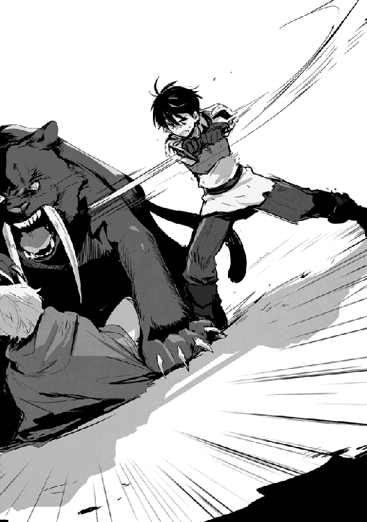
またかよっ！
くそっ、なんかいつも仕留めたと思った後に反撃を食らうな。詰めが甘いのか俺の想定以上に敵がタフなのか。
とっさに直撃を左の小手で受けたが、爪の掠った部分が酷く抉れ、燃える様な痛みに俺は剣を手放してしまった。
「アキト様！」
「アキトさま！」
今度はマリオンも同時だ、心配してくれるのはありがたいが──俺は三メートル程飛ばされて地面を転がり、その勢いで体を起こす。
口から血を吐きながら迫る牙大虎が振るう太い前足を躱しきれな──
「ダメッ！」
突然、背後からの衝撃に押し倒される中、視界の端を鋭い爪が走り抜けた。
「マリオン!?」
再びリデルの敵愾向上が発動し、牙大虎の気が逸れる。その隙に俺は立ち上がり、倒れたまま震えているマリオンを引き起こす。
「マリオン、助かった！」
幸い怪我はなく腰が抜けているだけの様だ。俺はマリオンをルイーゼに任せ、リデルのフォローに入る。
「モモ、槍を！」
俺の声に答えて右手付近に魔法陣が発生し、ほぼ同時に槍が現れた。
リデルは痛手を負った牙大虎に追撃を与えている。牙大虎も首に剣を刺したままでは痛みの為か動きが悪く、リデルの攻撃をまともに食らっていた。
「当たれ!!」
俺も右手一本で、最後とばかりに身体強化状態から槍を投げ飛ばす。槍はほとんど弧を描くことなく牙大虎の胴に突き刺さり、堪らずに苦悶の咆哮を上げた牙大虎の首を、リデルが渾身の一撃で跳ね飛ばした。
どちらかといえば細身のリデルからは、想像も付かない様な強力な一撃だ。リデルも十分実戦で身体強化を使える様になっていた。
「水は生命の源・魔力は力の源・肉体は二つの源を宿す・.........」
ルイーゼの歌う様な祈りの言葉。最近では言葉に魔力でも籠もっているかの様で、深く心に落ちる声色に安らぎさえ感じた。
「彼の者に再生の喜びを......」
祈りの言葉に応えて、俺の体に魔力の奔流が起こる。力強く、それでいて優しさに溢れた魔力だ。いつもなら自分でサポートして回復をするところだが、あまりの心地良さにそのまま奇跡を受け入れていた。
魔法が練度によってその効果に違いが出るのと同じく、天恵でもその傾向はあるのだろうか。
四本の爪で引き裂かれた腕からは痛みが消え、その傷跡すら残さない。相変わらず凄い効果だった。女神アルテアにお世話になるのはこれで何度目だったか。
《四度目ですね、アキト》
そうか四度目か、随分とお世話になっているな......って、誰だ!?
「女神アルテア様に感謝を」
ルイーゼじゃない、リデルでもマリオンでもない、でも確かに誰かいる!?
「アキト様？」
「なぁ......誰かの声が聞こえないか？」
みんなに緊張が走るのがわかった。辺りを静寂が包み、呼吸を押し殺すようにして気配を探る。
すると、風で揺れる葉の音、遠くで吠える獣の声、鈴虫のような音を鳴らす虫......静寂と思えた中に聞こえてくる様々な音。だが、人の声は聞こえてこなかった。
「悪い、気のせいみたいだ」
途端に緊張から解かれ、ルイーゼとマリオンが寄り添うようにしなだれる。
「何か感じたのかい？」
「空耳っぽいんだけど、なんとなく人の声が聞こえた気がしたんだ。ただ、危険を感じるような声じゃなく、どちらかというと暖かみのある......そうだな、ルイーゼの祈るような声に近いか」
「もし本当に聞こえたのだとしたら、森の精霊ドライアードかも知れないね。森の奥へと誘い込まれると聞くから、気が付いたら声を掛けて確認しよう」
精霊か......でも精霊は話せないよな。モモも話せないし。でも、話していると言うよりは意識に直接響くような心地良い声だったな。機会があればゆっくりと話してみたいものだ。
「わかった。ルイーゼもありがとう、もう痛みはなくなったよ」
「本当に奇跡が起こるのね......」
聞くところによると神聖魔法は、必ずしも恩恵が受けられるとは限らないらしい。神聖魔法というくらいだから信仰の強さが影響するのかとも思ったが、それなら俺には奇跡が起こらないだろう。なぜなら俺は魔法の力そのものは信じていても女神アルテアに対する信仰はないのだから。もちろん多大なる感謝の気持ちは持っているが。
奇跡は必ず起こる訳じゃない。だから奇跡なんだが、今のところルイーゼの祈りは確実に伝わっている。
マリオンはルイーゼの奇跡を目の辺りにしてなにか感慨深かったのか、目に涙を浮かべていた。
「取り敢えず、今日は俺の代わりにリデルが死に掛けたな」
「アキト程でもないけどね」
流石のリデルも牙大虎に組み伏せられ、噛み付かれそうになった時は肝が冷えたろう。
「マリオンにも助けられた。感謝している」
「べ、別に......仕事をしただけだわ」
「アキト様、もう少しご自愛ください」
ルイーゼが少しきつめの顔をして言う。あどけなさが抜けてからはこういう顔も悪くないと思ってしまうのは、Ｍの資質があるのだろうか。
「少しあれだな。俺は詰めが甘い。ここ最近は止めを刺し切れないことが多くて、反撃を許してしまう。魔物や動物がタフだったのもあるけど、身体強化から全力で攻撃をした後に出来る硬直が良くない。仕留め損なうと確実に反撃を受けるとわかった。手抜きとは言わないが、全力で戦えば良いってものじゃないと学んだよ」
「取り敢えず反省会は後回しにして、日が暮れる前に身を隠せる場所を探そう」
そうだった、こんな森の中で夜を迎えるのはぞっとしない。
森と言っても木しかない訳じゃない。岩に川、大樹に洞窟といった自然の造形物もある。しかし洞窟は止めておいた。盗賊に目を付けられている可能性があるし、さっきの牙大虎の様な動物が巣穴にしている可能性もある。
そんな中で俺たちは大樹と倒木が作り出した空間に身を寄せることにした。備えあればではないが、トリテアの町を出る前に買って置いた野営道具が早速出番となる。
とは言え、ここで火を使うのは憚られる。俺はリデルに剣を渡し、前に使っていた剣を発光させる魔法を頼んだ。
「正確には物質に宿る魔力を発光させる魔法で、魔石をランプにする時に使うのだけれどね」
そう言ってリデルが魔法を唱えると、俺の剣が青白い光を放ち始める。
「綺麗......」
マリオンが意図せずか、言葉を零した。確かに前よりも随分と明るく、剣の形を取っていた為に妙に神秘的だった──と感心している場合じゃない、俺は焦って布を巻いて光量を調整した。
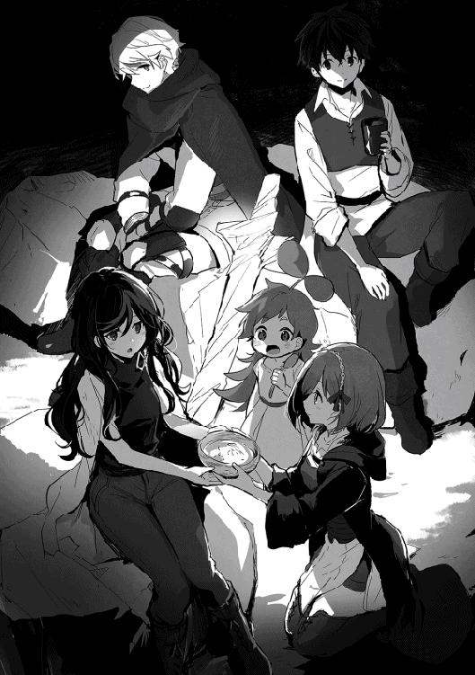
それからモモにお願いして、トリテアで買い溜めしておいた食料の内、携帯食ではなく普通の食事を出してもらった。今日は色々あって疲れた。暖かいものを食べたくなっても良いじゃないか。
「アキト、助かるよ」
「まぁ、俺は買っただけで運んでくれたのはモモだけどな」
リデルがモモにお礼を述べる。ルイーゼとマリオンも同様だ。俺はモモに魔力のお裾分けをして感謝を示す。
みんなにお礼を言われたモモは嬉しかったのか、とても頬がゆるゆるだ。そんなモモの表情に、張り詰めていた緊張も少し解ける。
「他の方々も無事だと良いのですが」
ルイーゼの言葉は質問ではなく願いだろう。
「意外と俺たちが一番大変な目に遭った可能性もある」
「アキトと旅に出てからは苦労に事欠かないのは確かだね」
「リデル様......」
ルイーゼが俺の気持ちを慮ってくれる。
ありがとうルイーゼ。俺は今心で泣いているよ。
「アキトさ......まは、そんなに苦労人なの？」
「そうだね、普通の人よりはちょっと不運だね」
「髪の色と関係があるの？」
ないよ。多分。でも、最近自分の不運続きに、ないと言い切れなくなってきた気がする。
「髪の色で幸運と不運が別れるなら世界は簡単で良いのだけれど。幸いにして、アキトの髪が黒いことで僕が失ったものは何もないよ。得たものなら沢山あるけれどね」
あれ、なんか目頭が熱くなってきたぞ。俺は自分で思っていた以上に、黒髪ということに対する境遇で傷ついていたのだろうか。自分のことなら嫌な思いはすれど、無視出来る範囲だと思っていたんだが。
「アキト様？」
ルイーゼが目を伏せた俺に気付き、様子を窺う。
「いや、ちょっと嬉しくて照れただけだ」
俺は精一杯格好を付けて涙を封じる。
リゼットが生まれながらに住んでいる世界にも、知らないことが多いと教えてやりたい。許されるなら俺たちと一緒に旅に連れ出そう。大変なことも多いけど、楽しいことだっていっぱいある。そんな世界だと一緒に知っていきたい。
夜の森を通る風が葉を揺らし、まるで森そのものが会話をしているような音だ。俺はなんとなく寝付けず、何度目かの寝返りを打つ。そして隣で横になるマリオンと目が合った。
マリオンも寝付けなかったようで、その印象的な深紅の目に意識が吸い寄せられる。
「アキトさ、ま。ごめんなさい」
どうやらまだ、俺に剣を向けたことを気にしていたようだ。
「本気じゃないってわかっていたさ」
「それでも、ごめんなさい」
「わかった、許すよ」
俺だって怖かった。ルイーゼやマリオンがいなければ俺が逃げ出していたかもしれない。
「わたし、怖かったの。人が死ぬのをいっぱい見てきたわ。私は何も出来なくて、いつも肝心なところで逃げてばかり」
殆ど歳の変わらない女の子が、人が死ぬのをいっぱい見てきたと言う。それがどれだけ怖かったのか、俺には想像も付かない。
「マリオンが逃げなければ、俺が先に逃げていたさ」
「ふふふっ。アキトさまはきっと逃げないわ」
「そう思ってもらえるのは光栄だが、明日からは働いてもらうからな」
「はーい」
謝ったことで気持ちが軽くなったのか、マリオンは直ぐに小さな寝息を立て始める。俺もそれを子守歌代わりに、いつの間にか眠っていた。
土の匂い、そして草の匂いを感じて目を覚ます。
この世界に来た頃、一人で草を集めて布団代わりに野宿をしたことを思い出す。あの時に比べれば、近くに人の気配を感じるだけ寂しくない。
盗賊に追われ、周りには危険な動物もいるのに、思ったより深く眠ってしまった。
「アキト様......おはようございます」
ちょうど向き合う形で寝ていたルイーゼが目を覚まし、視線が合う。ルイーゼは顔を少し赤らめて朝の挨拶をしてきた。
寝ている顔を覗き見ていたと思われたかもしれない。どうせなら考えに耽ってないで見ておけば良かった。
「おはよう」
俺は仕切りなおしに挨拶をして、ゆっくりと体を起こす。そして意識を覚醒させ、周りの音に集中する。鳥の声、少し離れたところに川のせせらぎが聞こえる。獣の唸る様な声はとりあえず聞こえてこない。
次に大気中の魔力に集中する。森の中なので多くの植物が持つ魔力で艶やかだ。そのまま魔力の流れに集中する......不規則な流れは感じられない。近くには人や獣はいない様だ。
そうこうしている内にみんな起きだす。モモだけはまだ眠たそうなので、そのまま寝かせておく。
凝り固まった体をほぐし、軽く食事を済ませる。その後は今後の対策を立てる必要があった。
「まずは現在地の確認と目的地の設定、それにルートか」
俺の議題に対して、リデルが地面に簡単な地図を書く。その地図は十分に現在地や周りの地形がわかるものだった。いくらこの世界に住んでいるからと言って、自分から進んで調べなければ、ここまでは知らないだろう。改めてリデルの知識の広さに感心する。
「現在地はだいたいこの辺りだね。北と西に見える山脈の位置関係から大体合っていると思う」
「魔物のことだけじゃなく、地理も覚えないと一人じゃ迷うだけだな」
「少しずつ覚えていけば良いよ」
こうして地図を見ると、ここエルドリア王国は思ったよりも森と山が多いようだ。特に王国の中心より南はかなりの部分が森と山になっている。
「そうなると、山脈を東に迂回して抜けるか、一旦トリテア方面に戻って宿場町に向かうか......」
命を賭けてまで急ぐ必要はない。とは言え、どちらが安全か悩むところだ。
「森を東に抜けて、川沿いを北上したところにあるルブナンの村から船を使う手もあるね」
船か。盗賊を避けるならそれが良さそうだ。もし宿場町に戻っても、そこから馬車には乗れない。乗るにはトリテアまで戻る必要がある。理由は単純にトリテアからの乗合馬車が満席だと考えられるからだ。
この辺の宿場町で降りるくらいなら初めから歩くし、乗る人が少なければ単純に馬車の数が減る。一人や二人ならともかく五人で乗るのは難しいだろう。
「水路の方が安全か......」
「水路を選ぶなら、場合によっては商業都市カナンには寄らずに東岸へ渡って、そこから北上することも出来るね」
東の山脈迂回路は盗賊のテリトリーの可能性が残っている。宿場町経由でトリテアに戻っても、ないとは思いたいが再び山脈越えで襲われては話にならない。
「複数の経路が選べるルブナンの村を利用するのが良さそうだな」
「森を抜けるには何の障害がなくても丸一日掛かりそうだね。途中魔物との戦闘も考えて二日の行程でペースを考えよう」
「わかった、それで行こう。隊列は昨日と同じで良いか。二日で移動するなら時間の余裕もあるだろうから、適当な動物がいたら戦いに慣れる為に、マリオンにも少し体を動かしてもらおう。大丈夫だとは思うけど食料も確保しておきたい」
盗賊もわざわざ森を探索してまで俺たちを追ってくる理由がないだろう。出会い頭というのは警戒するにしても、追手の心配はもうないと考えていい。
「わかったわ、まかせて」
マリオンはやる気だ。牙大虎との戦いの後だが、魔物に対して過剰な恐怖はないようだ。今後の為にも、実戦でどの程度動けるかも見ておきたい。
「それじゃ行こう」
モモは魔物の気配には敏感だが、動物はわからないようだ。いや、わからないのではなく、動物では危険かどうかの判断が付かないのかもしれない。
俺も魔力の変動を見るくらいで、それが危険かどうかはわからない。それに俺がわかるのは、前より伸びたといっても半径五〇メートル程だ。隠れ潜んでいる様な小さな動物でもなければ、目視や音で判断した方が早かった。ここが森の中でなければなおさらだ。
それでも、今は意味がなくてもこうして感じ続けることで、少しずつ感知範囲が広がっている感触はあった。このまま更に広がり、一〇〇メートルくらいまで伸びれば十分役に立つし、今は牙大虎の不意打ちを防げるだけでもいい。
この世界では意外と動物を狩って食料にするということが少ない。家畜を別とすると野うさぎや鳥と言った小動物が獲物の中心で、牙大虎の様に大物を狩る人は少なかった。なぜなら、あんな危険な動物を狩るくらいなら、もっと楽に狩れる魔物がいるからだ。
魔物の場合は素材が普通の動物より高く売れるし、魔石が取れる。おそらく牙大虎と凶牛を相手にした場合の稼ぎは、凶牛の方が高いだろう。それでいて危険度が桁違いに高い牙大虎を狩るのは、物好きとしか言えない。
幸いにしてこの森の食物連鎖で頂点に位置するのが牙大虎らしいので、あれ以上の危険は少ないといえた。牙大虎が複数同時に現れることも考えられるが、牙大虎は縄張り意識が強く、同族でも獲物とみなし争っている為、個体数は少ない。
ある程度探索しつつ進み、今日最初に見付けた獲物は普通の猪だった。一角猪の様に角はないが、その突進力から生まれる体当たりと、短くても強靭な顎と牙による噛みつきは油断出来ない。
手頃とは言い切れないが、ルイーゼとマリオンに戦ってもらうことにした。ルイーゼが盾役をしてマリオンが攻撃役だ。
ただの猪とはいえ、ルイーゼの防御では体当たりに対しては躱すしかないだろう。ルイーゼの三倍近い体重が加速を伴って体当りしてくるのだから、正面から受け止めるのは無理がある。
「マリオン、隙があると判断したら攻撃を！ ルイーゼは猪の攻撃がマリオンに向いたらその隙を逃すな！」
「わかったわ！」
「はいっ！」
ルイーゼはリデルの様に敵愾向上は使えない。だから猪の注意を引き続けるには攻撃を仕掛けるしかないが、その間にマリオンが攻撃をすると猪の注意がマリオンに移る。
マリオンは盾を持っていないから基本は避けることになる。そうするとマリオンの攻撃が止まる。
お互いの連携が上手く噛み合わないと攻防がバラバラになり、猪を倒すどころか痛手を負うのはこちらだろう。そして、状況はそうなりつつあった。
「無理か？」
「アキト、ルイーゼは大丈夫だよ。十分落ち着いて猪の動きを見ている。今はマリオンと歯車が合わないだけで、それも破綻する程ではない」
リデルはそう言うが、見ているだけというのも中々辛い。
猪は縦横無尽に体当たりを狙って突進を繰り返し、それをマリオンは転がりながら躱す。たまに猪の体が掠めるので、見ている方もヒヤヒヤだ。
マリオンの回避が遅れる様なら、直ぐに魔弾で援護に入るつもりだが、必ず間に合うとも言い切れないのが怖い。
俺がタイミングを見計らっていると、埒が明かないと思ったのかルイーゼが猪の前に出た。
「ルイーゼ！ 無茶はするな！」
「はいっ！」
わかっていないだろ！
ルイーゼは突進する猪に盾を構えて動かない。
俺が魔弾で猪を気絶させようと思った時、ルイーゼの魔力が制御されて力となるのを感じた。身体強化を使ったようだ。
直後、木を打つ鈍い音が響く。ルイーゼは猪の突進を盾で受け止めた──が、そのまま二メートル程後ろに吹っ飛ぶ様に転がっていく。
猪の追撃があるかと思ったが、猪は脳震盪気味なのか足下がおぼつかない様子を見せる。
「マリオン！」
俺が声を掛けた時には、既にマリオンの剣が上段から猪の頭部を激しく打ち付けていた。猪は頭から血を吹きながら倒れ、追撃で突き出された剣が胸の辺りに深く突き刺さると、しばらくして動かなくなった。
やはり片手剣より重めの剣を両手でしっかりと振り切れば威力が大きい。マリオンを攻撃役としてみるならバスタードソードは合っている様だ。
「ルイーゼ、平気か!?」
ルイーゼは既に体を起こしていた。ふっとばされただけでダメージはたいしてなかった。体が軽いから派手に見えたのだろう。身体強化もだいぶ発動が早くなってきた。俺も過保護が過ぎたか。ルイーゼを少し侮っていたかもしれない。
「マリオンも良くやった。二人とも、お疲れ様」
ルイーゼに手を貸し、引き上げる。葉っぱだらけだったのでそれを払い、二人を労う。
「やったわ！」
マリオンは腰に手を当てて鼻高々だな。
「ほら、血抜きと皮剥ぎが残っているぞ」
「うえっ!?」
マリオンが変な声を上げるが、俺は気にせず短剣とロープを手渡す。猪を近くの枝に吊るし上げるのにルイーゼとマリオンでは体重が軽すぎた為、それには手を貸す。その後、首を切って血抜きをし、皮を剥いでいく。
マリオンはそこで朝食を戻していたが、最初はそんなものだろう。俺も人のことは言えないので、水とタオルを渡して労うが、作業は続けさせた。ルイーゼはもともと慣れていたのもあり、平気そうだ。
その後、先に進む途中で二度猪を狩ったところで昼食にした。
森の木々に遮られながらも争いの音が聞こえてきたのは、移動を始めようとした時だった。近くで男たちの叫ぶ声や悲鳴、それに鉄を打ち付ける音が風に乗って聞こえてきた。
俺たちは見付からない様に注意を払い、その争いの様子を確認する。関与せずにその場から離れるという選択肢もあったが、もし一緒に逃げた冒険者や商人が魔物に襲われている様なら後味が悪すぎた。
しかし、何を安心していたのか俺は相手が勝手に魔物だと思っていた。昨日追撃もなく逃げ切れたことで、既に盗賊の活動範囲からは逃げ切ったつもりだった。
だから森を抜けた先に見える人影の中に魔物がいないと気付き、争いの原因がわからずに一瞬だけ思考が止まる。
「アキト、それ以上動くな」
リデルの制止を受けて、ようやく状況を理解した。目の前で行われている人同士の殺し合いを否定したくて、思考が止まっていた。だが、それは現実として目の前で起こっている。
三人の冒険者が五人の盗賊と思わしき男達に追い詰められていた。近くには二人が倒れ、血を流しているのが見て取れたが、生きているのか死んでいるのかまではわからない。
「争っているのは盗賊と......冒険者だね」
立っている三人の冒険者には見覚えがある。盗賊から逃げる時に陣形を組んだ冒険者たちで、気の良い連中だ。そして盗賊にも見覚えがあった、山脈を抜ける時に最後までしつこく追ってきた連中だ。
「アキトには人を殺すことは出来ないだろう？」
リデルは敢えて殺すと言ったのだろう。やはり俺が人と戦うことを躊躇しているのは感じていたようだ。だからこれは俺に警告をしているのだとわかる。助けに行けば殺し合いになると。
「わかっている」
確かに盗賊だろうがなんだろうが、人を斬るとか想像もしたくない。人を斬るのも人に斬られるのも嫌だ。備えのつもりで対人戦は想定していたが、実際にその局面になってみると全く覚悟が出来ていない。
「冒険者に加勢して盗賊を追い払うだけなら」
ルイーゼやマリオンは数に入れないにしても、俺とリデルが加われば人数的には互角だ。盗賊も無理はしないで逃げるかもしれない。
「そんな考えなら関わり合わない方が良い」
いつになくリデルの意見は厳しい。いや、厳しくないのか。リデルが積極的ではないだけホッとした。なんとなくリデルは助けに入るタイプだと思っていた。
「彼らは盗賊といっても、もう既に人を殺している。こちらにそのつもりがないならここは引くべきだ。」
森に入ってから半日以上は経っている。盗賊たちはそんなにしつこく追ってきたのか？ 追っては来ないと考えたのは甘かったか。
「アキトはルイーゼとマリオンを連れてルブナンの村を目指してくれ」
あれ？ 結局リデルは助けに入るのか──と言うか、もう飛び出しているし!?
俺が呆気に取られている間に、リデルは盗賊の一人に後ろから斬り掛かると、寸止めではなく本当に剣を打ち込んだ。その剣は盗賊の首の辺りを切り裂き、赤い鮮血が飛び散るのが見える。
リデルが飛び出した時、立っている冒険者は二人だった。そして盗賊の一人を倒した時、立っている冒険者は一人だけになっていた。続けてリデルが二人目の盗賊の胸に剣を突き立てた時、立っている冒険者はいなくなった。
次々と倒れていく姿を見て、俺は立つこともままならない程体が震えていた。
俺とリデルが加われば同数になるとか思っていたのに、めまぐるしく変わる戦況に考えが追い付かない。リデルが俺を止めて直ぐに飛び出していた訳だ。結果的にはそれでも間に合わなかったが。
くそっ！ どうする!?
三人の盗賊がリデルを囲もうとする。リデルは背後を取られない様に立ち位置を変えつつも、積極的に攻勢に出ていた。その気迫から、なんとか後一人を打ち倒し三対一の状況を避けたいという気持ちが見て取れた。
ダメだ！ 悩めば全てが手遅れだ！
盗賊は何かを喚いているが俺の耳には入らなかった。
俺は震える体を高まる鼓動で塗りつぶす。怖かった、でもそれ以上にリデルを死なせるのが怖くて駆けだす。この時の俺は自分の恐怖と戦うことに気が一杯で、ルイーゼとマリオンに指示を出すのを忘れていた。
リデルが一人目の攻撃を盾で受け、二人目の攻撃を体を捻って躱す。三人目の攻撃は躱しきれず鎧に当たり止まった。
「リデルっ!!」
少し強引だったが、鎖帷子に買い換えておいて正解だった。
俺は最も手前、リデルに切りつけた銀髪男に魔弾を撃ち込む。一角猪が気絶する程度の威力だ、死ぬことはない......はずだ。
「チッ！ 魔術師がいるぞ。あいつは俺がやる、その小僧を仕留めろ！」
「アキト！ 何故来た！」
中背男がこっちにダッシュで駆け寄ってくる、一瞬だ。
「うわあぁあ！」
俺は叫んだ！ 恐怖で叫ばないと正気を保てない。
中背男はそんな俺に構わず、剣を振り上げる。そして勢いよく振り下ろされた剣が体に届く前に、なんとか自分の剣で防ぐ──が、重い一撃で吹っ飛ばされる。
転倒だけはなんとか避け、蹈鞴を踏んで堪える。
「くっ！」
「良く折れないもんだ、良い剣には見えないんだがな」
折れていたらあの剣は俺の頭をかち割っていただろう。打ち直してくれたギルムに後でお礼を言わないとな。
中背男が品定めをする様に俺を見てくる。
「アキト様！」
右手からルイーゼの声が聞こえた。
あぁ、くそっ！
ルイーゼたちのことを考えている余裕がなかった。そりゃ俺が飛び出せば来るよな。盾とメイスを構えてはいるけど、俺と同じで震えが止まらない様だ。人のことは言えないが、あれじゃ中背男の剣を躱すどころか反応も出来そうにない。
それでもルイーゼの加勢に中背男の注意が逸れた。殆ど反射的に中背男の胸に向けて魔弾を撃ち込む。
「グハッ！ む...えい...しょう...だとっ！」
中背男が胸を押さえ片膝を突く。
今は心臓を狙った。あわよくば気絶してくれるかと思ったが、結局威力が弱くて気絶には至らない。だけど、全力で魔弾を撃った時、人は耐えられるのか？
「アキト！」
リデルが俺と中背男の間に入り盾を構える。リデルが相手にしていた茶髪男は、なくなった左腕から流れる血を押さえて蹲っていた。
「ガキ共にこの様かよ！」
吼える中背男に向かってリデルが剣を振り上げる。
「ま、まて！ 降伏する！」
リデルの腕は止まらない。俺は背後からその腕を止める。流石に無抵抗の人間をリデルが斬り殺すのは見たくなかった。
「アキト、何故止める!?」
「リデル、終わった！ もう行こう！」
助けようと思った冒険者はもういない。これ以上こんな思いを続けるのは意味がなかった。俺は早くこの場を離れたくて仕方がなかった。
リデルが怒り半分という顔で俺を睨み付けるが、直ぐハッとした顔でわかったと言う。
「ルイーゼ行くよ」
リデルの腕を引き、青い顔のルイーゼに声を掛けて俺はその場を後にしようとした。一刻も早くこの場から離れ、布団に包まって眠りたかった。
「危ない!!」
遅れて走り寄ってきたマリオンが俺たちに向かって叫ぶ。
俺は背中に覆い掛かる気配を感じ、その後に鈍い衝撃を受ける。同時に息を呑む声が耳に届き、リデルは驚きの表情を表しつつも武器を構え直す。
釣られて振り返った俺が見たのは、俺に覆い被さるルイーゼの背中に剣を突き立てている中背男の姿だった。
ルイーゼが刺された？ たった今、降伏したばかりの盗賊に？ なんで？ 思考が纏まらない。
俺がリデルの腕を引き、リデルの視線が逸れた一瞬。その僅かな時間でルイーゼが刺された？ 嘘だろ？
ルイーゼを刺していた剣が引き抜かれ、血の滴る剣を今度は上段から振り下ろしてくる。斬られるんだという他人事みたいな予感が頭を過ぎた。
だがその剣は俺には届く前に、リデルが盾を上げて受け止める。金属を打ち付ける音が響き、状況が動き出す。
リデルの両脇から、銀髪男と片腕を失った茶髪男が斬り付けて来るのを見ていた。
リデルは受け止めた中背男の剣を盾で弾き、銀髪男が繰り出す左からの攻撃を盾で受ける。そして茶髪男の右からの剣は体を捻って躱そうとするが、その剣はリデルの背中を薙いでいた。
威力があったのか武器が良いのか、鎧が裂けて赤い飛沫が俺の顔に掛かる。
「!?」
体勢を崩すリデルの正面から、中背男が再び剣を振り下ろす。リデルはそれを剣で受け止めるが、隙の出来た右側から茶髪男の剣が鋭く突き出される。
それを見て、俺の思考が状況に追いつく。
「うああああっ！」
俺は茶髪男の攻撃を止めたい一心で、魔弾を全力でその胴体に撃ち込んだ。茶髪男は一〇センチ程胸を凹ませ、斬られた左腕から血を撒き散らし吹っ飛んでいく。
「チッ！ なんて早さだっ！」
銀髪男がリデルを回り込むかたちで俺に向かって来た。
視界の端ではリデルが中背男の一撃で二メートル程吹っ飛ばされていた。リデルが攻撃をいなしきれずに吹っ飛ぶのを初めて見た。
「リデル!!」
「僕は大丈夫だ！ 目の前の敵と向き合え！」
俺はルイーゼを足下に横たえると、向かってくる銀髪男と対峙する。
早くルイーゼの止血をしなければならない。気ばかりが焦っていく。
「マリオン！ ルイーゼを頼む！」
「わ、わかった......わ......」
マリオンもまた俺と同じ様に動けなくなっていた。
俺の焦りを嘲笑する様子を見せながら、銀髪男が間合いを詰めてくる。牽制で魔弾を銀髪男に撃ち込むが、なんの工夫もない魔弾は易々と盾で防がれた。威力的にも無意識に手を抜いていた。この期に及んで茶髪男の胸を抉った状況が頭を過ぎっていた。
「馬鹿か俺は......」
銀髪男は間違いなく俺たちを殺しに来ている。俺はまた手を抜いて誰かを危険に巻き込むのか!?
銀髪男が直ぐ目の前まで迫って来る。身構えた瞬間、フッと意識が飛びそうになった。魔力の使い過ぎで起こる症状だ。俺は今の自分が身体強化状態にあることを認識する。緊張状態で無意識に使い、多くはない魔力を無駄にしていた。
踏み留まる俺の視界の端に、倒れて血を流しているルイーゼが目に入る。
「巫山戯るな......」
体温が一瞬で上がった様な感覚に捕らわれ、怒りの感情が支配する。
もしルイーゼが死んだら何度でも殺す!!
銀髪男の剣が真っ直ぐ俺の胴体に向けて伸びてくる。しかしその剣は遅い、まるでスローモーションの様に見える。目から入ってくる情報を脳がもの凄い勢いで処理していた。
俺は銀髪男の剣を、右足を引く形で体を捻って躱し、そのままバックハンドブローの要領で右手の剣を振るう。剣はがら空きとなった銀髪男の脇腹を二〇センチ程抉って止まった。
「グボッ！」
銀髪男は堪らず剣を落とし、血を吐きながらその場に倒れる。
俺は倒れた銀髪男を無視し、すぐさまリデルの状況を確認する──いた！
リデルは二〇メートル程先で、倒れた体勢のまま盾と剣を使い中背男の剣をなんとか凌いでいる。
「モモ、弓を！」
俺は手に弓が現れた瞬間には矢を放っていた。
「バカな、こんなガキ共に!?」
矢は外れたが、弓で狙われていることに気付いた中背男は直ぐに踵を返し、一度も振り返らずに逃げ出す。
俺は一本目を放った後、直ぐに用意していた二本目の矢を放つ。その矢は中背男の肩に刺さったが一瞬バランスを崩しただけで足は止まらない。
俺は動かなくなった銀髪男から片手剣を引き抜いて、中背男を追い掛ける為に走り出す。
「アキト、ルイーゼが先だ！」
「!?」
そんな俺にリデルが声を掛けた。
「そうだっ！ ルイーゼ！」
俺はルイーゼの元に駆け寄り様子を窺う。気を失っているが息はあった。血で濡れたローブで背中がべっとりしていたが、血は止まっている様に見える。
思ったよりも傷が浅かったのか？
だがそれなら良い。ルイーゼが助かるなら奇跡でも起きてくれ。
「リデルどうしたらいい、動かしても平気か!?」
くそっ、考えが纏まらない!!
《落ち着いてアキト、ルイーゼは助かります》
そんなのわからないだろ！
だいたい、誰なんだ。邪魔をしないでくれ！
「アキト、ルイーゼを横に」
リデルも左腕を押さえながらこちらに向かってくる。そうだ、リデルは左腕だけでなく背中にも傷を負っているはずだ。
「リデルの怪我は!?」
「僕は大丈夫。ルイーゼの怪我を先に見よう」
俺はそれを信じた訳じゃないが、リデルの判断に従う。
モモに毛布を出してもらい、その上にゆっくりとルイーゼを俯せに寝かせる。ローブの背中には剣で刺された穴が空き、血で赤黒く染まった肌が見えた。
「う、うそ......」
マリオンは頭を振り、現実を受け入れられていない。俺も同じだった。
両手で空いた穴からローブを引き裂き、背中の傷口を確認する。やはり血は止まっていた。心なしか傷口も塞がりつつある様に見える。
「出血の割に傷は浅いみたいだ。血も止まっている。消毒をして包帯を巻いたら後はルブナンの村で医者に見てらおう」
良かった、ルイーゼは助かる......良かった......。
「リデルの怪我も見よう。鎧を脱がすからな」
俺はリデルを座らせると腕と上半身の鎧を脱がせていく。痛みに顔を歪ませるリデルの表情から、やはり口で言う程軽い怪我ではない様だ。
実際に左腕の傷は結構深く、背中の傷も軽傷とは言えなかった。
「マリオン。念の為、周りを警戒してくれないか。僕は自己治癒を使う、アキトはルイーゼの治療を」
「わかった」
マリオンが青い顔をしながらも頷き、周りに視線を送る。
俺もだが、自己治癒は精神の統一が難しい為、戦闘中に使うことがまだ出来ない。俺たちの魔法技術だと魔法使用中は隙だらけになるので、その隙をお互いにカバーする様にしていた。
俺はルイーゼの背中に手を当て、自己治癒を使おうとするが殆ど魔力が残っていない。ここで気を失うまで魔力を使う訳にもいかなかった。またいつ敵の増援が駆けつけるとも限らないから、出来るだけ早くここを離れる必要がある。
魔力が足りないのか、焦りなのか、なかなか纏まらない魔力を制御し、その殆どをルイーゼの怪我に充てる。幸いにしてルイーゼ自身の魔力は潤沢だったので、足りない分はそちらを使い、傷口を重点的に治療していく。
しばらくすると、始めは荒かったルイーゼの呼吸が静まってくる。状態が落ち着いてきたと思いたい。
その頃にはリデルも取り敢えずの治療を終えた様だ。
俺は立ち上がると周りを見渡し、恐らく死んでいるだろう人の数に戦慄を覚えた。少なくともこの内の二人は俺が殺していた。
殺した......？ 俺は人を殺したのか？
吐いた。言いようのない感情が胸を打ち、立っていられず地面に手を付く。吐き気が止まらない。世界がぐるぐる回る。背徳感に押し潰される......許されないことをした。
「わあああああああっ！」
潰されない為に足掻いた。なんの感情か自分でもわからなかった。怒りでも悲しみでもない......あぁ、これは後悔か。
誰か俺を裁いてくれ......でないと、潰れてしまいそうだ。
「うあああああ！」
不意に暖かみに包まれ、強い鼓動が伝わってくる。
「アキト、生きる為に戦ったんだ！」
背中に回された手が、震える俺の体を力強く押さえ込む。
生きる為。そう、俺は殺されると思った。殺したかった訳じゃない、ただ生き様としただけだ......いや、違う。
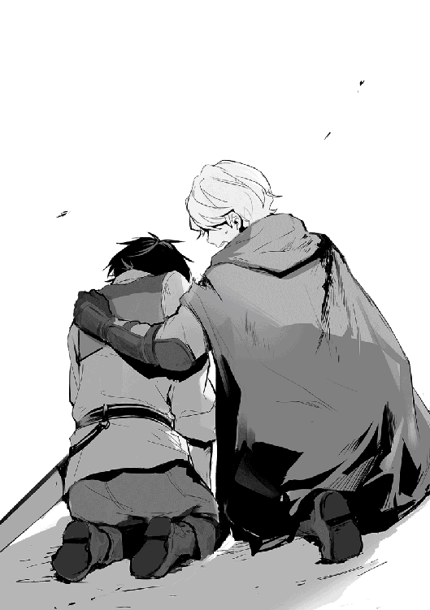
「ルイーゼが死ぬと思って、怒りで......殺そうと思って殺した。生きているのはその結果だ......」
「殺すつもりがなければ殺されていた。怒りはその為に必要だった」
そもそもルイーゼを刺した男は、俺が殺したくないから見逃した男だ。あの時の俺は、リデルがその男を殺すのを見るのが嫌で止めた。その結果としてルイーゼは刺された。あの時に俺は間違えたのか。
「アキト。ルイーゼは生きている、僕もマリオンもモモもみんな生きている。今はそれだけで十分だ」
そうだ、ルイーゼは生きている。その為に俺は戦ったんだ。人殺しの罪は償うべき時に償おう。今じゃなかっただけだ。
「リデル......悪かった。ルイーゼを連れて行こう」
俺はリデルの胸から離れルイーゼに歩み寄る。蒼白だった顔色にいくらか赤みが出ていた。今はルイーゼが助かったことだけを考えよう。でなければ前に進めない。
リデルはマリオンと共に殺された冒険者の遺品と、盗賊の証拠品を集める。何から何まで気が回らないな、自分のことばっかりだ。
俺はルイーゼを背負い、モモの手を取る。モモにもいつもの明るい笑顔がなかった。モモを抱き寄せて森を東へ歩き出す。
死は結構身近なものだと思ったことがある。俺の周りでも事故や病気で死ぬ人がいたし、ニュースは毎日のように紛争や自然災害で多く人が亡くなったと伝えていた。だから俺は、人は死ぬのだとわかっているつもりだった。
でもこれは違う。自分が当事者になるかどうか、そんな重要なことが抜けていた。そして俺の判断ミスで仲間が死ぬ。そんなことは繰り返せない。次はないかもしれないのだから。
最後に一度だけ振り返り、俺が殺した二人の顔を見る。そして二度と思い出すまいと心に誓う。必要なら誰かが俺を罰するだろう。もし今度同じ状況になったら、俺は迷わず仲間を守る。殺させはしない。その為になら今度は選択を間違えない。
たとえ俺の心が壊れようと、あの二人の後を追わせてやる。元の世界で育った俺はもう必要ない。必要なのはこの世界で生きる仲間だけだ。
リデル様とアキト様が盗賊と戦っていた時、私は何も出来なかった。ルイーゼが刺されるのを見て足が竦んでいた。
わたしには覚悟があると思っていた。だから前にアキト様が聞いてきた時、わたしは言った。必要なら斬ると。
なんて馬鹿なのだろう。斬るどころか、その場に向かうことすら出来なかった。
それでも気持ちは前に向けていた。そう思っているのに、足は動かなかった。
なんで思ったとおりに体が動かないの!?
不意に、顔に飛沫が掛かる。拭った袖が赤い。見ればリデル様が斬られていた。そんなに長く一緒にいた訳じゃないけれど、リデル様が怪我をするのを初めてみた。
朝の鍛錬でも、あの器用なアキト様の攻撃を完全に防いでいたし、魔物や動物の攻撃なんて一度も受けてない。
そのリデル様でさえ負けそうだ。もしリデル様が倒れたら、わたしなんて直ぐに殺されるだろう。きっと足が竦み逃げることも出来ない。わたしの覚悟なんて、どれだけちっぽけだったというの。
アキト様がリデル様を救う為に茶髪男を吹き飛ばした。どうやったのかわからないけれど、多分魔法なのだろう。わたしにも魔法が使えたら、臆病にならずに戦えたのかな......無理ね、魔法が使えることと臆病なことは別のことだから。魔法が使えてもわたしはきっと動けない。
アキト様が銀髪男の攻撃を、身を捻る様にして避けている。銀髪男の繰り出した突きは、わたしにはとても躱せない早さだ。アキト様は目にも止まらないその突きを躱しただけでなく、そのまま回転した勢いで剣を振り、銀髪男の脇腹を裂いた。
攻防一体の流れる様な攻撃だった。わたしと同じような歳なのにあれだけの技術をどうやって手に入れたの？
アキト様は止まらない、いつの間にか構えた弓矢が放たれている。もう魔法でも見ているのかと思うくらいあっという間のことだった。一矢目ははずれたけれど、続けざまに放った矢が逃げる中背男の肩に刺さった。
アキト様の攻撃は多彩で、魔法、剣、槍、弓それに私は見ていないけれど格闘もするらしい。必要に応じて使い分けながら戦う。
わたしにも出来るだろうか。アキト様は必要なことは全部教えると言ってくれた。でも、わたしに必要なのは戦う勇気だ、教えてくれるだろうか。
アキト様が吐いた。そして震え、呻いて、吠えた。
わたしはアキト様の何を見ていたのだろう。あんなに苦しんでいるじゃない。わたしはただ怖いという理由に甘えて何も出来なかった。
アキト様はリデル様に戦えないだろ、と言われ、戦えないと言っていた。それでも必要なら戦った。戦えない人なのに戦った。
わたしは今一度周りを見渡す。小さな戦場、わたしも吐きそうになった。でもわたしは何もしてない。何も出来なくても、ここで吐くことだけは自分で許したくない。
わたしは震える足で歩き出す。愚かね、わたしは。震えていても歩けるじゃない。結局さっき歩きだせなかったのは怖かっただけだ。
もし死ぬのが怖いなら、なおのこと仲間を助けなければ一人じゃ生き残れない。わたしは二度と恐怖に震えて仲間を見捨てたりしない。
盗賊との戦いから二日後。朝に森を出て昼近くにはベーレ川の畔に着く。ここから川沿いに北上すればルブナンの村だ。俺たちはここでいったん休憩と合わせて食事を取ることにした。
昨日は小雨に降られる中で森を進んだから酷く疲弊したが、今朝には雨も上がり、昼近い今は少し暑いくらいの日差しになっていた。それでも時折吹く風は心地良く、歩き続けて火照った体を冷やしてくれる。
森を抜けた後は身を隠すのが難しくなる為、最悪の場合は盗賊との遭遇も考慮していたが、今のところ追撃はない。やはり、追われていたのではなく偶然だったのだろうか。
念の為、岩場に身を隠し警戒は怠らない。こちらが見付かりやすいのと同時に、こちらからも見付けやすいので襲撃があっても見逃すことはないだろう。
大怪我をして意識を失っていたルイーゼは、昨日の夜に目を覚ましていた。刺された時に比べればずいぶんと顔色も良く、普段と変わらない程度には回復している様子だ。
出血は酷かったはずだが貧血の症状も見られず、傷口は既に塞がっていた。その回復力は異常で、神聖魔法とは違った何かが起こっていると考えた方が良さそうだ。あるいは奇跡は祈らなくても、必要となれば起こるのだろうか。
ただ、体力までは戻りきっていないので、俺が背負ってここまで移動していた。いくらルイーゼが小柄と言っても、人ひとりを背負って森を抜けることが出来たのは、一重に身体強化と自己治癒のおかげだ。
負荷で痛む体を自己治癒で直しながら無理やり歩いてきたお陰で、俺の足腰はずいぶんと鍛えられたと思う。トリテアの町を出た後と比べても見違える程逞しくなっていた。これくらい逞しくなってくると自慢というより引かれる可能性があるな。
最もこの世界では、これでも筋肉が付いた程度にしか見られない気がする。熊髭たちの体格の良さは特別かと思っていたが、標準的だと知ったのはトリテアの町で多くの冒険者と出会った時だ。この世界ではマッチョが普通に服を着て歩いていた。
「ルイーゼ、水を」
「ありがとうございます、アキト様」
気付いてからは自分でなんとかしようとしていたルイーゼだが、今は大人しく介抱を受けるように命令している。
リデルの方の回復も順調だ。俺がルイーゼの治療と移動の為に魔力を使っていたから、リデルは自分で怪我を治している。初めは四苦八苦しながらの自己治癒だったが、俺がサポートをすることでゆっくりながらも効果が出ている。
リデルは器用だし勘も良い、遠からず自分だけでも出来る様になるだろう。魔力制御に慣れれば、精霊魔法系の回復魔法も使える様になるはずだ。そちらは自己治癒と違って効果が高いと聞いているので、密かに期待していた。
マリオンはこの二日間、率先して邪魔な動物を排除してくれた。何度か猪の体当たりを受けて打ち身や擦り傷を作っていたが、大したことはないと治療を断るくらいだ。
もちろん大したことがない様には見えないが、怪我が直ぐ治ると思うのも危険かもしれないので、マリオンの判断に任せた。怪我が元でさらなる大怪我をしないように注意を払うことは忘れない。
それにしても、盗賊との戦いからマリオンの中で何かが変わったようだ。鬼気迫るというか、何かあり余る気持ちをひたすらぶつける様に戦っている。一度理由を聞いてみたが、答えたくなさそうだったので命令まではしていない。
マリオンは、時折防御という言葉を忘れているのかと思う程攻撃的だったが、得意な面を伸ばし不足は仲間が補えばいいかと思っている。いずれそれでは通じない日が来るだろうけど、親にも若いうちは得意なことを伸ばせと言われていた。そして、躓いたら助けてやるとも。だからおれもマリオンが躓けば助けてやろう。
ルイーゼの体調が戻るに連れて、モモの表情にも笑顔が戻ってきた。今は川辺で小魚を追い掛け回している。やはりみんなが元気なのはいい。
「アキト、これは読めるかい」
リデルに差し出された紙を手に取る。
この世界には紙があるけど、コピー用紙の様にきっちりしたものではなく、一枚一枚が手作りの様な粗さを持ったものだ。それでも、なかなか高価でもあった。
その紙には文字が書かれているが俺は文字を覚えているところで、その紙に書かれたいくつかの単語はまだわからないものだった。
「まだ、読めない単語があるな。でもこれはあまり良いことが書かれていないと思う」
リデルは頷いて肯定する。
「これは、あの冒険者たちが持っていたもので、要約すれば冒険者と盗賊が裏で繋がっていたことを示す内容と、盗賊のアジトを示す地図が書かれている」
「繋がっていた？」
盗賊の仲間が冒険者だったということか？
「あの冒険者と盗賊が繋がっていたとして、いったい何が目的だ......いや、考えられることはあるな」
「冒険者は盗賊に、荷物の多い日や腕のたつ冒険者が乗らない日を情報として提供していたようだ」
あの盗賊たちがじっくりと時間を掛けていたのは、しっかりとした裏付けがあってのことだったのか。
退却する時に一切襲ってこなかったのも、たまたま俺たちと共に仲間がいたからだろう。もしかしたら護衛や俺たちの抵抗が強かった場合、内と外から攻撃をすることも考えにあったのかもしれない。最悪身バレして困るのは内通していた冒険者だけだ。
「それで内通していた冒険者が殺された理由もわかったのか？」
「理由自体は書かれていないけれど、状況から察するに口封じか、利害関係の不一致か。どちらかの可能性は高いと思うけれど、あの冒険者が怖気付いたというのもありそうだね」
盗賊が同じ手を使いたいなら、裏切った冒険者の存在は邪魔という訳か。変わりならいくらでもいるのかもしれない。
「でも、冒険者がこの書類を誰かに預けていたら殺しても意味がないような」
「だから彼らが人と接触する前に片を付けに来たのだと思う。それが無駄になるかどうかはその時点ではわからないしね」
盗賊と内通していた冒険者が、冒険者ギルドなり商業ギルドに盗賊のアジトを伝えることで、自分と繋がりのある盗賊が壊滅するのを期待していたのではないか、とリデルは考えているようだ。
確かに自分が危険を冒さずに口封じをするという意味では理に叶っていた。
「僕はアキトやルイーゼ、そしてマリオンとモモに謝罪をする。軽率な判断で危険に巻き込んで、すまない」
リデルが頭を下げる。
あの状況からここまで読むのは無理だ。それにリデルの性格ならなんとなく助けに入るとも思っていた。それを受け入れ実際に飛び出したのは俺も同じだ。
「謝るなら俺も同じだ。リーダーの命令を無視したし、リデルなら助けに入るだろうと思っていたのに止めなかった。結局は俺も助けたかったんだと思う。挙句、あの場を任されたのにルイーゼとマリオンに指示も出さないで飛び出してしまった。結果としてルイーゼに重症を負わせたのは俺の責任だ。俺も悪かった」
「リデル様、アキト様。私たちのことはお構いなく。むしろ何も出来なくて申し訳ございません」
「わ、わたしも全然構わないのよ。ルイーゼ以上に何も出来なかったわ、むしろ罰せられるのはわたしの方よ」
みんなで頭を下げ合う。
「よし、この件は俺たちがまだまだ未熟だということで、反省しよう。反省はするけど、引きずるのは駄目だ」
「そうだね」
「はい」
「わかったわ」
その後、この件に関してどうするかを話しあった。結論としては、ルブナンの村からトリテアの町の冒険者ギルドマスター宛に手紙を送ることになった。自分たちで持っていくという手もあったが、俺たちなら無事に届けられるというものでもない。地の利に慣れた人に預けた方が早くて確実だろう。
ルブナンの村には、冒険者ギルドはないが商業ギルドがあるらしいので、そこで頼むのがいいかもしれない。ことがことなので、商業ギルドのメンツにかけて確実に物証を届けてくれるに違いない。
ルブナンの村は休憩した場所から川上に三キロ程進んだ地点にあった。予定通り日が暮れる前に到着出来たことにひと安心する。
この村は漁業を中心に栄えている様で、陸路でトリテアの町へ、水路で商業都市カナンに向けての流通経路が出来ていた。
村は思ったよりも人が多く活気がある。おかげで宿もそれなりにあり、簡単に見付けることが出来た。
宿をとった後はルイーゼを休ませ、マリオンとモモを護衛に付ける。モモは精霊界という特殊な世界を通じて移動することで、時間や距離といった制限を受けることがなかった。だからモモにはルイーゼの側にいてもらい、有事の際には俺の元に知らせに来てくれるようにお願いをした。
モモは任せろとばかりに小枝をかざして、臨戦態勢に入る。俺は「もしもの時は頼む」と言って魔力のお裾分けをしておく。
それから俺とリデルは厄介事をさっさと済ませる為に、商業ギルドへと向かった。商業ギルトでは例の手紙、それに冒険者と盗賊から取ってきた認識プレートや遺品を渡し、俺たちが見たことを告げる。
ことが自分の手に余ると判断したのか、商業ギルドの受付はギルドマスターを、ギルドマスターは何故か村長を呼び、再度詳細を話すことになった。
どうやらあの盗賊による被害はこの村の流通にも影響が出ている様で、近々近隣の町と協力して討伐隊を出す予定だったらしい。
しかし拠点がわからず準備が進まなかった。俺たちが持ち帰った情報と合わせて、トリテアにいる盗賊と通じた冒険者を洗い出すことが出来れば、盗賊を一掃することも出来ると息巻いていた。
そんな簡単に盗賊と通じた冒険者が見付かるのかと思ったが、乗車履歴と盗賊の襲撃記録から追っていけばおそらく見付かるだろうということだ。そう多くの冒険者が盗賊と通じている訳ではないだろうから、何度か同じ冒険者が繰り返しているはずだと。
確かにそうかもしれない。裏切りには死をというなら、嫌でも続けている可能性はある。さっさと逃げだしているとも考えられるが、冒険者ギルドに登録している以上は、内通がバレた時点で全国的に手配がまわる。
話がまとまったところで、村長から銀貨入りの袋を渡される。情報料と口止め料とのことだ。お金はあって困るものではないので、ありがたく頂いておく。その方が向こうも安心だろう。ちなみに袋には銀貨五〇枚が入っていた。
それと船を使うならその料金を出してくれるそうだ。料金はともかく、村長の名前で手配してくれるなら楽でいい。
商業ギルドを出た頃には日が暮れ始めていた。ここはトリテアの町とは違って夜は早いのだろう。昼間賑やかだった通りも人が閑散としていた。
宿に戻る前に鍛冶屋によってリデルの鎧を修理を出しておく。
そう言えば、リデルの鎧を切り裂いた武器を回収していたが、商人ギルドに差し出すのを忘れていたな。
「盗賊の持ち物は討伐した人に所有権があるから問題ないよ」
リデルに聞いてみたところ問題ないらしい。欲しいものを盗賊に奪わせて、その盗賊を討伐した場合の所有者は誰になるのだろうか。
「明文化されている訳ではないけれど、もし元の所有者が明確ならば、正当な代価と引き換えに返却を要求することも出来るね。もちろん奪わせたとなれば話は別だ」
さすがに奪わせたらそれ自体が罪になるか。
「必ずしも返却する必要はないので、僕たちの場合はそのまま使っていても売却しても問題ない。それくらいの利がなければ、手配もされていない盗賊を倒そうという人はいないからね」
結局、明日リデルの防具を引き取る時に鍛冶屋で鑑定してもらうことにした。防具の出来上がりは夕方だった為、ルブナンの村にはもう一泊することになるだろう。
翌日。日中はここ数日で消費した食料の買い足しと、俺とマリオンの二人で鍛錬をして時間を有効に使う。ルイーゼは旅立ちの前に出来るだけ休ませておく。リデルも似たようなものだ。真面目な二人だから暇ならば勉強をしているだろう。
夕方になってから、再びリデルとともに防具屋に来た。
「鉄が七、ミスリルが三と言ったところか。魔剣ではないが細身の割に強度を出せるなかなかいい配分だ。これ以上ミスリルが多くなると逆に軽くなるからな。ミスリルなら軽くても威力を出せるからミスリルだけで作っても問題ないが、まぁ値段も考えて夢の様な武器だな」
俺たちは鍛冶屋で盗賊が使っていた剣を鑑定してもらっていた。なかなか良い武器のようだ。リデルの武器はこの間の中背男との戦いで刃が欠け、少しヒビも入っていた。良いものがあればついでに買っておこうと思ったが丁度良いだろう。
「リデル、これを使うと良いんじゃないか」
「そうだね、遠慮なく使わせてもらうよ。ただ、初めはアキトが使ってくれないか」
言いたいことがわかったので、代わりに俺の剣をリデルに手渡す。上手く行けばミスリル鉱の混ざった魔剣になる。しばらくは意図的に魔力を流し込んでみよう。
ルブナンの村について三日目。準備が整い、船に乗ってメルドの町へ向かう日だ。
話し合った結果、商業都市カナンへは寄らないことにした。今の位置からだと寄るだけ遠回りになるからだ。当初の予定とは変わるが、元々通り過ぎるだけだったのだから構わないだろう。
ベーレ川は川幅一〇〇メートル程の川で、流れは穏やかだ。その為か船の乗り心地は良く、乗合馬車よりも快適だ。
船は小さく俺たち五人が乗るとほぼいっぱいになる。帆はなく、往路は櫂を漕いで進み、帰路は流れに身を任せるらしい。
川に落ちた時のことを考えて防具は着けていない。女の子組は街着だ。天気も良く日差しも強かったので、麦わら帽子みたいなものを買って渡しておいた。焼けた肌も健康的で良いが、肌に悪いからな。モモは俺が飾り付けた帽子をかぶってご機嫌だ。
そのモモは、船から身を乗り出し川の水面に手を浸していた。念の為に腰を支えているが、それが面白いのか更に身を乗り出す。もう膝から先が水の上だ。精霊は泳げるのだろうか。
不意に思い立って質問をする。
「みんな泳ぎは？」
「僕は泳げるけれど、得意とはいえないね」
「わたしは残念ながら泳ぎは......」
「わたしも無理」
「まともに泳げるのは俺だけか。今後船の旅が増えるなら浮き輪でも用意しておくか」
思ったよりも船の旅が快適だったので、使えるところでは使うのが良いだろう。
日が出てから上がり始めた気温は、体感温度で三〇度近くに達すると思われた。
この世界に来て初めての暑さに空を仰げば、真っ白で巨大な入道雲が目に止まる。まるで浮遊する島の様にゆっくりと、形を変えながら南へと流れていく視線の先には、遠くトリテアの町の大樹が見えた。
マリオンがブーツを脱いで船縁に腰掛け、気持ちよさそうに水に足を付けていた。その隣ではモモがマリオンの真似をし、笑顔を向けられたリデルがそれに笑顔で返す。
「アキト様。わたし、今とても幸せです」
同じ光景を見ていたルイーゼが目を細めて微笑む。川の上を流れる風がその栗色の髪を揺らし、水面と同じように日差しに輝く様子にしばし見蕩れる。
「俺もだ」
みんなといつまでも笑顔でいたい、リゼットと共に。そんな未来を夢見た。
ここはエルドリアで唯一、日中の気温が三〇度を超えるてくる中央部。見えてきたのは広大な砂漠を背景に、異国情緒溢れる様子を見せる砂と緑に囲まれたメルドの町。
確実に近付くリゼットの元へ、俺は再び歩き始める。
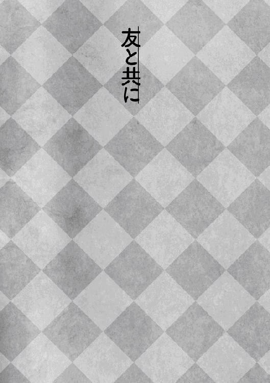
リデル・ヴァルディス・フォン・アルディス。
アルディス家の五男として生まれた僕は、一五歳になったことを切っ掛けに家を出る。
五男ともなれば爵位を継げる可能性も低く、かといって政略結婚をする相手もいない。それは仕方のないことだと納得も出来たが、爵位への道が閉ざされるとなれば、気落ちもした。
僕には王国騎士団に入るという夢がある。その為に必要な資格は貴族であること、そしてふさわしい実力を示すこと、の二つだ。
僕は貴族に連なる者ではあるが爵位がない為、正式には貴族ではない。だから僕が王国騎士団に入るには実力を認めてもらい、最低でも騎士爵を授爵する必要がある。その為に僕は家を出て経験と実績を積む必要があった。
「お兄様、お戻りはいつ頃のご予定ですか？」
自室の入り口で僕が支度するのを静かに見守っていた妹が、心配の色濃い表情で問い掛けてくる。僕はその質問に返す答えを持ち合わせていない。順調に進んでも五年、それくらいの覚悟はしていた。だけどそんな答えは望まれていないとわかっている。
僕は立ち上がり、俯く妹の前に立つ。
「大丈夫、そう長くは掛からないよ」
顔を上げて言葉を待つ妹を軽く抱き寄せ、嘘をつく。この家で妹には味方が少ない。でも途中で命を落とすかも知れない場所へは連れては行けなかった。
「無事のお帰りをお待ちしています」
無理に作られた笑顔に一抹の不安を覚える。僕の選択は僕だけの考えに基づくものだ。そこに誰かの為にといった気持ちはない。もし誰かの為に──妹の為にという思いがあるなら他の未来もあるのではないか、そんな考えが過ぎる。
「私、王国騎士団の制服を着たお兄様の姿を楽しみにしていますね」
「必ずその姿を見せると約束するよ」
僕の迷いを読み取った妹は自分の不安を押し込め、代わりに僕の未来を望んでくれた。
それから二週間。僕はグリモアの町にある、父の生まれた館に来ていた。
王都とは違って長閑な風景に包まれたこの町は、近くに魔物の住む森があり、金銭を稼ぐにも腕試しにも都合の良い町だった。
エルドリアは比較的小さな国であり内乱が起きたことはない。そして国家間の戦争も一〇〇年程はなく、平和と言ってもいい時を過ごしてきた。
そんな中で王国騎士団の役割は王都の防衛と、王国軍では対処きしれない強力な魔物の討伐、そして魔人族の侵攻に対する抑止力だ。
元々魔大陸と呼ばれる別世界に住んでいた魔人族は、魔断層という次元の切れ目を抜けて、この世界にやって来た。知能は高く、必ずしも敵対心が強いとは言わないが、友好的とも言い切れない。そんな中で種族間のバランスを取る為にも軍事力は必要であり、その要である王国騎士団に入ることが僕が目指すところだった。そして必要なことを僕はする。
正直怖かった。必要な鍛錬は欠かさず、魔物に対する知識も十分すぎる程調べ上げ、剣の師にはＥランクの魔物程度に後れを取ることはないと太鼓判を押された。とは言え不安は残る。
アキトに出会ったのは、そんな気持ちの中でも進もうと決めた時だった。
冒険者ギルドの掲示板の前で、依頼の書かれた紙を眺めて唸っていたアキトを見て僕は声を掛けた。切っ掛けは些細なことだった。それが今では欠かせない友として、一緒に狩りに出る毎日だ。
初めこそ魔物との戦いもままならなかったアキトだけど、無詠唱で使う魔法の弾はアキトの戦い方と非常に合うようで、日を追うごとにその能力を高めていく。
そして、そんなアキトの前に立ち続けたいという思いが、僕の力となっていく。
「リデルのおかげで俺は安心して戦える」
アキトは知らない。初めて狩りに出たあの日、僕はアキトを守るという立場に立つことで戦いの場に出る勇気を持てたことを。
「リデルにはいつも助けられている」
背中をアキトが守ってくれるから僕は安心して戦える、と言ったらアキトはなんと返すだろうか。
きっと照れた顔をして「そんなことはない」と言うだろう。だから僕は言わない。代わりに僕はアキトの前に立ち続け、不撓不屈の盾となるだろう。
お久しぶりになります。大川雅臣です。
この度は、本書「異世界は思ったよりも俺に優しい？」第二巻を手にとって頂き、誠にありがとうございます。本作品を応援くださる読者の皆様方のおかげで、この度第二巻も無事発行に至れたこと、とてもありがたく感謝して止みません。この場をお借りしてお礼を申し上げたいと思います。いつも応援くださりありがとうございます。こうして作品を継続できるのも、その声あってのものと常々思っております。
また、作品の掲載を快く迎えてくださった「小説家になろう」様、Ｗｅｂ版で応援くださる皆様方、本書を飾る素敵なイラストを描いてくれましたイラストレーターの景様、優しい味わいのロゴをデザインくださった木村デザイン・ラボ様、改稿から校正まで調整をくださったＴＯブックス編集の方々、そして担当のＤ．Ｓ様には、本書発行にあたり多くのご協力を頂き、心からお礼申し上げます。この度もありがとうございました。
第二巻では二人目のヒロインとして、マリオンの登場となります。景様デザインのマリオンは、ラフの段階から想像通りのイメージに仕上がっており、表紙絵、続いて口絵や挿絵が上がってきた時には、夜中なのに大分テンションが上がっておりました。いつも思うのですが、この思いを早く皆様方に届けたいと思いつつ、それも中々難しくもやもやした気分でいるのは、ある意味書籍化の醍醐味かも知れません。もちろんルイーゼも相変わらず守ってあげたい可愛さで、この二人が表紙絵や口絵を飾るのは、まさにこの為に書いてきたといっても過言ではないでしょう。
そのマリオンですが「小説家になろう」様に投稿中は、さらりと流していた部分がありましたので、書籍化にあたり少し掘り下げて描写しております。それにより、キャラクターの魅力が高まり、より良い作品となったと確信しておりますが如何でしたでしょうか。あとがきから読まれる皆様は、是非楽しみにしていただきたいと思います。
今年一月に発行された第一巻では、本作の主人公とその仲間が、一つの目標に向かって動き出しました。そしてこの第二巻では、旅立った主人公たちを試練が待ち受けます。その中で、個人としてではなく仲間として成長していく主人公たちを、描いております。そんな主人公たちを、今後も皆様とともに見守っていければ幸いです。
最後に今一度、皆様方に感謝の気持ちを述べさせて頂きます。いつも応援くださり、誠にありがとうございます。これからもよろしくお願い致します。
平成二十九年四月 大川雅臣
著者プロフィール
大川 雅臣
Ookawa Masaomi
下手の物好きでやっているゲームとラノベが好きな普通の人です。ラノベ好きが高じて小説を書き始めたのも良くあることです。
景
Kei
２０１５年５月よりイラストレーターとして活動中。
異世界は思ったよりも俺に優しい？２
2017年６月１日発行 ver.1.0
著 者 大川雅臣
発行所 TOブックス
〒150-0045 東京都渋谷区神泉町18-８
松濤ハイツ２Ｆ
03-6452-5678（編集）
0120-933-772（営業フリーダイヤル）
Ⓒ2017 Masaomi Ookawa
※無断で複製・複写・データ配信などをすることは、かたくお断りいたします。
本電子書籍は下記にもとづいて制作しました
異世界は思ったよりも俺に優しい？２
発行日 2017年６月１日 第１刷発行
本作品の全部または一部を無断で複製、転載、配信、送信したり、ホームぺージ上に転載することを禁止します。また、本作品の内容を無断で改変、改ざん等を行うことも禁止します。
本作品購入時にご承諾いただいた規約により、有償・無償にかかわらず本作品を第三者に譲渡することはできません。
本作品を示すサムネイルなどのイメージ画像は、再ダウンロード時に予告なく変更される場合があります。
本作品は縦書きでレイアウトされています。
また、ご覧になるリーディングシステムにより、表示の差が認められることがあります。